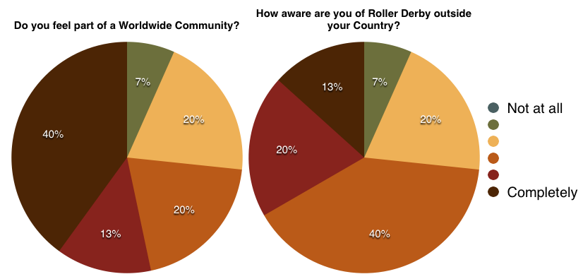
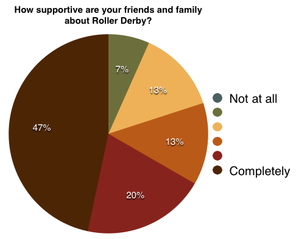
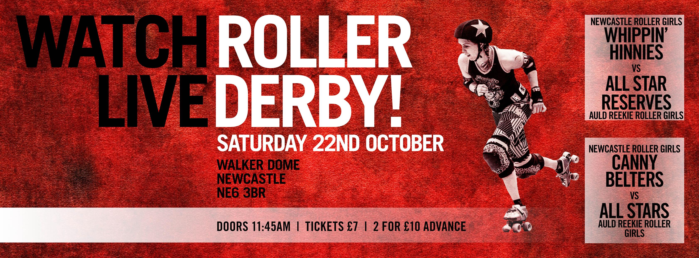
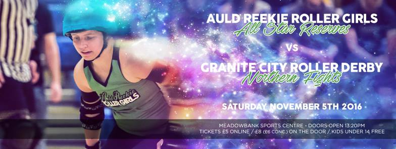
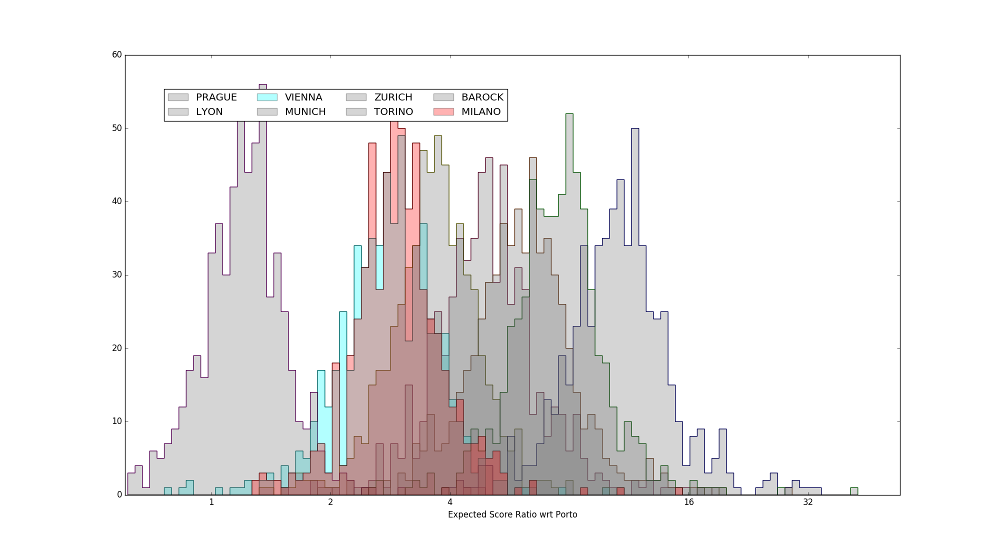
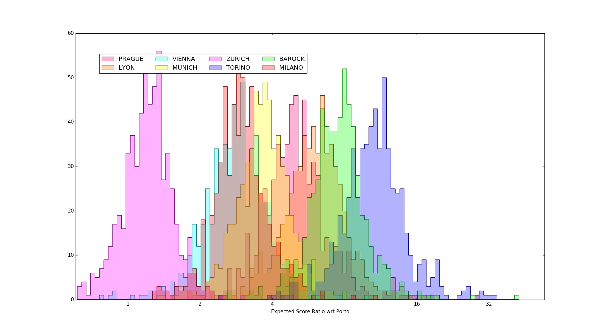
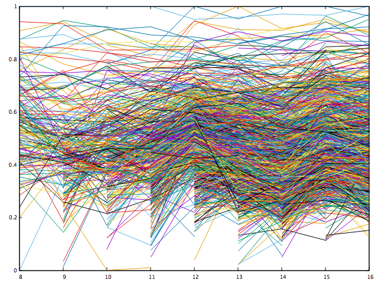
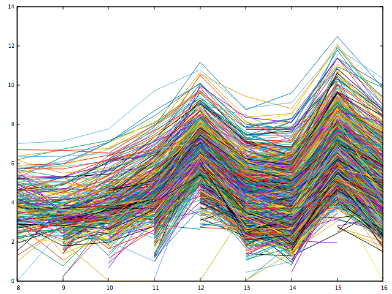
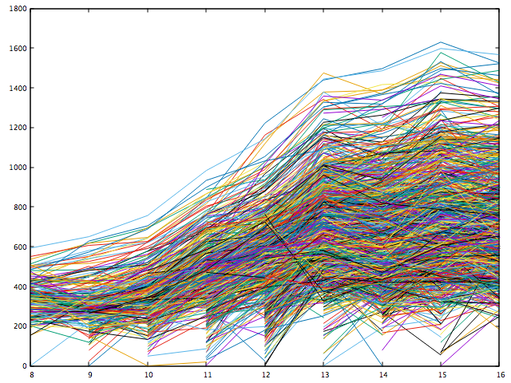
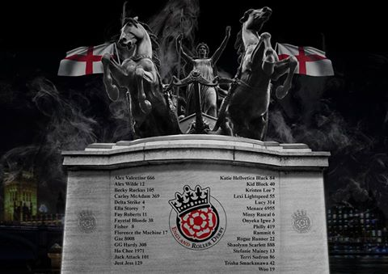

Are you ready for a skating spooktacular?
Tricks or treats? Why choose when you can have both – and a whole lot more – at Mean City’s closing home game of the year?
Glasgow’s only coed league will be hosting a devilish double dunt of derby delights on Saturday 29 October at the Dear Mean Place – aka the ARC Sportscentre in Glasgow.
Hallowe'en is when things go bump in the night - HallowMean is when things go bump on the track and there are trick and treats for everyone.
First up, the Mean City ladies – fresh from a gallus bout against Granite’s Fight Hawks and looking to maintain their forward momentum.
The Meanies have been reaping the benefits of a greater emphasis on tactics, fitness and skills – with fresh recruits bolstering the settled squad.
Their opponents on 29 October will be the out-of-this-world ASTROs (Auld Reekie All Star Rookies). It’s going to be a stern test of the Mean City ladies’ resolve, as well as a showcase for some of Scotland’s finest up and coming skaters.
The second game will see Mean City's coed team ghosting to the track to take on Bairn City Rollers' Belter Skelpers.
Tis the season to be fearful and while there’s no fear among the Mean City ranks, there will be some trepidation given the excellent form the Belter Skelpers have been in.
Bairn City Rollers’ coed team recently played a mix of Aberdeen and Dundee skaters – the Brawler Buddies – and really brought their A game, winning with a well-oiled performance combining offence, defence and excellent tactics.
Mean City’s coed team may lack the experience of their opponents, but they have spirit, guts and tenacity in abundance and will match them skate for skate.
Mean City President Elaine Hunter – aka Roller Dobby - said: “We can’t wait to round off our home season in style with a spook-tacular thriller for all the family.
“Trick or treat – why choose when you can have both? There will be skating, fun, cakes and cracking tunes – what else are Saturdays made for?
“Tickets are just £4 in advance – that’s just £2 per game – or £5 on the door. It’s a bargain and you’ll be supporting grassroots sport at the same time. Under-14s get in free.”
- Mean City presents HallowMean - Saturday 29 October 2016 - doors open at the ARC Sportscentre at noon
- For more information on the event – click here
- For tickets – click here
International Roller Derby Survey 2016
Regular readers will know that the Blog has something of an interest in the growth of Roller Derby in newer regions. As Roller Derby spreads out of the "cultural West", the new areas it encounters have potential to enrich the sport, as well as bringing the usual benefits of enthusiastic new areas.
But, what do newer skaters in those regions think about Roller Derby right now? How do they feel about the sport - and what do they want from it? To start off an irregular series on this topic, we performed a small survey with several Roller Derby teams and leagues in Asia and the Middle and Near East, targeting specifically skaters who were local to those areas. Future articles in this series will talk to some of the respondents to the survey, and others, in more detail.
The responding skaters were members of: Roller Derby Beirut (Beirut), Tel Aviv Roller Derby (Israel), Tokyo Roller Girls (Neon Roller Monsters, Japan), Kamikaze Badass Roller Derby (Japan), Bangkok Roller Derby (Thailand), and the CaiRollers (Egypt). Other leagues were asked, but were unable to respond due to issues outside their control. In total, there were 15 respondents. We should emphasise that, with such a small survey, proportions are subject to significant statistical uncertainty - differences of less than 20% in response are not statistically significant here. Whilst all of the respondents waived their right to anonymity in this survey, we will not be identifying them at this time.
The median experience of the skaters was 3 years, with only one having less than a years' declared experience.
We started off the survey by investigating how they got involved with their current league. 7, 47%, of respondents referred to finding out through friends, either online (Facebook or otherwise) or in person. One was led to join after reading an article about the league, and one via advertising in public spaces. The remainder were founding members of their league, or otherwise did not answer.

Interestingly, a little over half had heard of Roller Derby before joining their league. Of the 60% who had heard of Roller Derby from other venues, there were precisely two touchstones, each with 43% of the eligible cohort: the movie "Whip It", and experiences of the sport in other countries - the UK or USA; one did not give a detailed response. Most did not find their experience of roller derby to differ from their expectations, although one explicitly noted that the experience was better than the film made out (less "sexy" and more "down to earth").

Most respondents feel more of a part of a "worldwide community" and "aware of Roller Derby outside their country" than not. However, the positivity is more muted on the latter point, with the most common response being around the middle of the scale; contrastingly, 40% feel "completely" part of a worldwide community.
We also asked respondents two questions to see how they did interact with the worldwide community: "How do you feel about Roller Derby worldwide?" and "What do the letters WFTDA mean to you?" On the former question, 4 did not respond in any way. The statistically significant majority of responses (53%, 72% of those who answered at all) were both positive and reflected ideals of community - common words were "one family", "sisterhood", "inspirational" and "capable". Only one respondent expressed a complete lack of knowledge about the wider community. On the latter question, two respondents (13%) did not know what WFTDA was. Of the remainder, 4 (26%) focussed on the standards setting aspects of the Association, while another 5 (33%) expressed mainly aspirational or community related feeling towards it. (The rest simply repeated the exact meaning).

We were also interested as to how the respondents viewed Roller Derby - is it "American" or "Western" or both? Responses to both questions were mixed, and not well correlated, suggesting that images of "America" and "The West" are not close synonyms. However, there is a definite trend towards believing that Roller Derby is more Western than not, whilst the feelings about "Americanness" are more mixed.
To judge influence of wider and popular Roller Derby images, we asked the respondents if they had any Roller Derby heroes. 4 (27%) said that they had no heroes, or raised philosophical objections to the concept. Several mentioned more than one choice, so percentages here do not add up to 100%: the most popular choices were Quadzilla (3, 20%), Bonnie Thunders (2, 13%) and "our league/our coaches" (3, 20%). Highly visible WFTDA Top 40 skaters are represented in 7 (47%) of responses overall, a majority of responses for those who had any heroes at all.
We also asked if respondents thought that the kind of Roller Derby they did was different in any way to "Western" Roller Derby (if this existed as a thing). 33% of respondents answered with a simple "No". Of the rest, three (20%) essentially abstained, and the remainder were divided into 20% "Yes", and the remainder mostly concerned with the relative skill gap they perceived. (Two (13%) did consider the difference to be in relation to the perspective of society towards their sport).

Concerning local derby, we were interested as to how their peers and family reacted to the sport. The majority of respondents considered their family to be more supportive than not (80%), with 47% selecting the most positive option ("totally supportive"). Of those with less supportive family and friends, all of them cited concerns about physical safety as the principal sources of worry, although one of the positive respondents noted that their family's similar fears been totally reversed once they had actually seen the sport in action. (Positive respondents generally used word like "cool" or "awesome" to describe their peers/family's feelings.) With particular reference to Japan, respondents noted the confusion specific to that country between "Roller Derby" and the Japanese entertainment variant "Roller Game" in the popular consciousness.
To close off the survey, we also asked respondents about their hopes, and fears for Roller Derby in the future.
Overwhelmingly, the hopes consisted of desires for more popular recognition or mainstream tokens of acceptance(100%). Breaking this down, 20% of responses specifically mentioned the Olympics as an aspirational target; 33% focussed more on increasing popularity and acceptance in their region, while another 33% had specific interest in the spread of Roller Derby to more countries worldwide. In particular, one respondent was specifically interested in having more roller derby outside of the USA, with tournaments in every region. With respect to fears, responses were far more varied. Two (13%) had "no worries". Two were concerned about the sport's community spirit being harmed by increased professionalisation. 33% were concerned that the sport might die out - from lack of support either globally or regionally. 20% (overlapping with some of the above) were specifically concerned by costs. 1 (7%) expressed concern at the increased influence of men in the sport. In both cases, we believe that these are the same kinds of hopes and fears found across the Roller Derby community, even in the most established nations.
In general, then, we are encouraged by the response to our survey, especially concerning support from local and global communities.
As mentioned above, we hope to come back to you will follow-ups on this article, interviewing specific respondents (and others from leagues who were not surveyed).
The Team who Sur5ed: Fierce Valley host Harry Potter-themed open event
It's now become a tradition that Fierce Valley Roller Girls host big events towards the end of the year, and this year is no different. After the success of previous Sur5al tournaments, FVRG are adding an additional detail this year: all teams are coed (or "open", as we believe the newly popular term is).
The 22nd of October sees this event, with a Harry Potter theme embraced by many of the teams, at Fierce Valley's usual venue of Grangemouth Sports Complex.
The advantage of Sur5al is that you can host a relatively large number of teams in a surprisingly small space of time, and the Scottish roller derby community have taken full advantage of this, with the following teams signed up to skate:
- Golden Snatches (Yellow. Captain: Dita Von Cheese [Fierce Valley Roller Girls])
- Snapes on a Plane (Blue. Captain: Thump'her [Fierce Valley Roller Girls])
- Slytherwins (Green. Captain: Fury Eyes Only [Auld Reekie Roller Girls])
- Block Street Boys (Black. Captain: Tiny Tearaway [Dundee Roller Girls])
- Neville loves Prada (Grey. Captain: Khileesi [Dundee Roller Girls])
- Why so Sirius? (Orange. Captain: Sadie O'Hades [Glasgow Roller Derby])
- Immobulud (White. Captain: Skimbleshanks [Mean City Roller Derby])
- Nameless Ones (Red. Captain: Sylk [Mean City Roller Derby])
- Snitches and Bitches (Pink. Captain: Hazzard [New Town Roller Girls])
- Magic Hot Pocket (Purple. Captain: Harm [Lothian Derby Dolls])
In total, we are told that, in addition to those teams providing captains, skaters from Bairn City Rollers, Ayrshire Roller Derby, Granite City Roller Derby, Granite City Brawlers, and Capital City Roller Derby are also represented, making this a truly inclusive event for the Scottish derby community. (Even the officials are represented, as Block Street Boys Captain Tiny Tearaway is returning to the track from her now usual Refereeing role for this event.)
Doors open at 14:45 for a prompt 15:00 start. Tickets cost £5 (+ booking fee) online from Brown Paper Tickets, or £7 on the door (under 14s free, with an adult). Harry Potter fancy dress welcome!
The event page for more up to date information and afterparty details is : https://www.facebook.com/events/1766885553525356/
Auld Reekie Roller Girls: Home and Away
With winter fast approaching, Edinburgh's Auld Reekie Roller Girls are not slowing down in their schedule one bit.
This weekend, October 22nd, Auld Reekie travel down to Newcastle to play the second "double fixture" of the month. On the 8th, ARRG A and B took on London B and C; this time, Auld Reekie's A and B teams will be playing their opposite numbers from British Champs Premier Tier Champions (2016), Newcastle Roller Girls.

Our ranking scheme, SRD Rank, places Auld Reekie's All-Stars and Newcastle's Canny Belters at very close rank indeed (107th and 101st in our international, cross-gender rankings, in fact), and Flat Track Stats agrees, giving Newcastle A just a 53% chance of winning using the larger European dataset. The B bout might be a fraction safer for the home team - we rank the Whippin' Hinnies at 39 spots above ARRG B, and Flat Track Stats suggests that the hosts have an 87% probability of victory.
If you can make it down to Newcastle's Walker Activity Dome, then doors open at 11:45am, tickets £10 for two, online from the NRG website, and £7 each on the door (under 12s free).
Then, only a few weeks later, the All-Star Reserves will be playing again, this time hosting Granite City Roller Derby's Northern Fights on November 5th at their usual venue, Meadowbank Stadium. The Fights, GCRD A, have had an exceptional year, topping the British Champs Local North tier and earning promotion to Tier 3 in 2017. (You can read more about their year here.)
 Whilst Granite City will be looking to maintain their 14 month win streak, the Reserves will be keen to defend the honour of Edinburgh, after a narrow loss to Dundee earlier in the year.
The statistics are on Granite City's side - SRD Rank places them more than 200 places above the Reserves, and FTS gives them a 88% probability of victory. However, Auld Reekie tend to dig especially deep when playing at home, so we're not going to rule out an upset, especially for their last bout of the season.
For this event, the event page is: https://www.facebook.com/events/1594409394188095/
Doors open at 1.20pm, with tickets £5 (plus booking fee) online from Brown Paper Tickets, or £8 on the door (concessions available, and under-14s free).
Meanwhile in Europe: the Daga Denter Tournament (2016)
There's a lot of conversation this weekend and today about a roller derby event in the USA.
However, this has overshadowed another tournament held last weekend (15, 16 October): the second Daga Denter Tournament. This yearly event sees teams from Southern/Central Europe compete (under WFTDA) rules to determine a champion. The tournament is the "traditional" in derby terms single-elimination with consolation rounds structure.
[For those of you wanting to catch up on the scores, Flat Track Stats has you covered. Our own timetable has the FTS links for bouts, plus links to the livestream archive (which will be updated to precise offsets for each bout by the end of the day).]
Competing this year were: hosts Roller Derby Milano (the Harpies), Zurich City Roller Girls, Munich Rolling Rebels, Prague Roller Derby, Vienna Roller Derby, Roller Derby Lyon (the Grrriottes Girrrls), Barockcity Roller Derby and Roller Derby Torino (the Bloody Wheels). Outside of the main competition, there was also an exhibition bout between Tel Aviv Roller Derby and Athens Roller Derby - one of the first public appearances of the former league!
Unfortunately, due to delays and roster reductions resulting from injuries earlier in the second day, the 7th Place playoff was cancelled (as marked on our timetable). We thought this was an ideal opportunity to see what we can predict about the placements, using our usual statistical tools.
Firstly, predictively, we can use the new SRD Rankings for October 2016 to predict what was most likely to happen.
|
Official result (no 7th/8th playoff) |
Prediction: SRD Rank (rank to left, rating to right) |
| Porto Milano Zurich Vienna Munich Prague Lyon/BarockcityTorino | 268 Porto .54403 309 Vienna .52250 355 Zurich .50977 461 Milano .47029 504 Munich .45568 558 Prague .43985 574 Barockcity .43424 809 Lyon .37317 1049 Torino .30649 |
Secondly, however, we can also use our Bayesian inference toolkit to analyse the tournament itself, isolated from past expectations. As always, this produces graphs showing the estimated range of team strengths (relative to the winner - in this case Porto), with height showing the likelihood of that result.
 Highlighting Milano, Vienna, relative to Porto.
 Fully coloured image of all strengths, relative to Porto.
Interestingly, as can be seen in the highlighted image, inference strongly supports the evidence that Vienna and Milano are actually of near identical strength (and that Zurich is significantly stronger than the pair). Taking into account home-team advantage, we're pretty confident that Vienna is overranked in our SRD Rankings at present (or had a really bad tournament). It's also true of Flat Track Stats, who recorded this as a near upset , expecting a narrow win and getting a comprehensive one. This also means that we predict that Zurich would have attained 2nd place, if they'd been in the other half of the bracket and able to play the hosts. [This kind of technical misranking is pretty common in single-elimination tournaments, which is why our blog position is that they should be avoided if possible].
Inference also supports the reverse ranking of Barockcity and Lyon for 7th/8th place, supported mostly on their relative performances against Torino (the only team they both played). (Again, looking at Flat Track Stats, it appears that they also rated Barockcity higher than they performed - the rating of Barockcity has been revised down almost 20 points in FTS as a result of DDT2016, taking them from close to Lyon to noticeably below).
We expect that in our November monthly update for the SRD Rankings, Barockcity and Vienna will drop in ranking. We're also pretty happy to declare Lyon as our 7th place finalist from the tournament.
We would also like to congratulate the Harpies on a great tournament, from a remote viewers' perspective, with good streaming and regular updates; and Roller Derby Porto on a convincing win.
An Interview with: Mags Payne
With the Men's Roller Derby Association Champs this weekend, we thought we'd catch up with someone who's been a key part of Scotland's own National Men's Team, but perhaps got a little less attention: Power of Scotland Head Official (2015/16), and ubiquitous referee (especially if you're in Newcastle or her home league Auld Reekie Roller Girls), Mags Payne.
 Mags Payne (centre) Photograph by: Laura MacDonald
Mags Payne (centre) Photograph by: Laura MacDonald
So, first, let's start with the introductions: Who are you, Mags Payne? Mags Payne is an NYPD cop, hell-bent on vengeance after the murder of his wife and child..wait. No. That's MAX Payne. I am Mags Payne, referee with ARRG, Power of Scotland's Head Official for 2015/2016, Agent of S.T.R.I.P.E, and MRDA Recognised Official. I've been refereeing for 4 years. I'm also a Crazy Cat Lady, follower of the Winnipeg Jets, and all-round nerd.
So, in your day job, you're a technical writer. Quite a few referees have day jobs in contexts which require attention to detail, and an ability to apply complex rules - do you think Refereeing appeals because the skills are already there, or is it the other way around (that you Referee for the same reason you have the jobs you have). I think in a lot of ways, competent refs are born rather than made! There's a lot of things that are incredibly important for refs, that you can't really learn - it's a character trait you just have to have.
Like you've mentioned, attention to detail is important, but you have to be able to pay attention to a lot of detail at once. You have to focus without being too focused on one thing. You also have to be able to think on your feet - that doesn't mean you have to be super smart, but simply you can think fast with clarity. Every awesome ref I can think of has a lot of the same traits: fast thinking, calm under pressure, walks a fine line between eye on the minutiae and keeping the bigger picture in mind, and a fair lack of ego. I think certain kinds of people are drawn to reffing. And you'll see a lot of the attributes required to ref showing up in their jobs.
You were selected as Power of Scotland's Head Official for 2015/2016. What did that involve, how did it feel, would you do it again? I revolved between being chuffed and terrified when they chose me! I would go and ref their practices and feed back any sort of 'ref' thing I noticed. So; highlighting if someone was particularly getting clockwise blocks, and what they were doing that was causing it. The guys made me feel absolutely welcome, despite the fact that 90% of my interactions with them was blowing my whistle and yelling at them!
I have absolutely loved the experience though - it felt like a really collaborative relationship, and it gave me a lot of confidence that I hadn't had before. When you've head reffed a scrim between the best male skaters in Scotland and Mild Discomfort, it does kind of give you a little confidence boost! Honestly, I would do it again in a heartbeat - it really was one of the best things I've ever applied for!
You've also been raising your own crop of new refs, via the Ref School you ran with ARRG. Can we talk a bit about the importance of nurturing officials in the community like this? Honestly,I think sometimes leagues think refs grow on trees! And we've seen a swathe of referees retiring in the past couple of years, but not as many refs stepping up to fill their places. It also takes at least a year until people are about ready for some of the teams in Scotland! So really, I wanted to foster an environment where new referees could learn and grow, but also in a formalised way that meant there was a 'path' for them with a support network build in.
Sometimes being an official can be a lonely endeavour - you're not really part of a team as such. Although you're usually affiliated with a league, because you're always trying to remain professional and impartial, you can seem a little stand-offish. There's also the fact that when you're first starting out you're trying to build your confidence to make your calls, and be respected by the skaters as having the necessary authority. Having a weekly meeting (ours was in the backroom of a pub!), where you can chat and really go over the rules theory, in a friendly and supportive environment does wonders for new refs. I learned a lot from it too - cause sometimes they'd ask me things I'd never thought of! I'm only new to the head reffing thing, so I stole Von Sleaze's Ref School wholesale. It was an absolute life line, and is set out in a great way.
I'm quite protective of my new refs (I may have a few referees, and at least one PoS skater, who call me Mama Mags...) and I wanted them to have the confidence to ask questions. In fact, I laid down a rule of 'there are no such thing as stupid questions, just stupid people who think they know everything'. As a referee, you're always asking questions - did I see that? Did that have impact? Does this rule mean what I think it means? With the information I've just been given in this official review, was my call correct? It's something I really wanted to encourage people to do. Don't doubt yourself (you should only call what you're 100% about), but be open to being wrong, to asking questions, and always looking for the truth.
I hope that the guys found it useful, and I'd be looking to run it again in future. Dundee also does mini reffing bootcamps which new refs should definitely try and attend.
Your next big Refereeing event is the Mens's European Cup, hosted by Newcastle's Tyne and Fear! It's the Nth time you've been in Newcastle this year, but probably the biggest event: how are you preparing, and what are you most looking forward to? Honestly, I'm nervous as anything. Have you seen the crews?! Trying to get over the 'superstar refs...and Mags' feeling is tough. But I've been trying to get as many opportunities to get some practice as possible, seeking feedback wherever I can get it, and upping my strength program. I basically want to be in the best possible shape I can be for it, physically and mentally.
I'm really looking forward to meeting some of the 'big names' of officiating. Skaters have their big name heroes - we have it too! I'm also looking forward to meeting people like Duncan Disorderly and Momo whom I've spoken to on messenger etc, but never actually chatted to in real life. Big name heroes who might actually know my name! And it's always great to hang out with the Newcastle crowd.
I hope to do my tiny part to keep Scotland's officiating reputation high!
As well as all of this Roller Derby Officiating, you're also a keen gamer; we know you're taking a break from Refereeing this weekend for a good cause - can we end this article with a little look at that? Yes please! I'm playing video games for 30 hours this weekend to raise money for Edinburgh's Sick Kids Hospital. It's part of an event known as Sick Kids' Save Point. If you could throw me a pound, that would be AMAZING! https://sksp.everydayhero.com/uk/magsthepirate
-
Ranking the World, and other FTS Visualisations
Connectivity
More than a year ago, we published two articles [Pt1, Pt2], using the Flat Track Stats dataset to visualise how Roller Derby has become both more International, but also, more importantly, more Connected over time.We thought that it was a good time to revisit this, and see what 2016 looks like for international derby communities. With the Japan Open, and many big events in Europe, we expect to see that the connectivity of Women's Roller Derby in particular is increased.
In fact, the situation does seem similar to, but a little better, than 2015. Whilst there are 18 separate groups, all but one are pretty tiny (we show them in a slideshow below), consisting of only a few, mostly new, leagues each. As before, we are colour coding the nodes -Red is USA, Blue is Canada, Green: Europe, Cyan: Australia, Purple: New Zealand, Yellow the Asia-Pacific, and White: South America.
[gallery ids="9319,9320,9321,9322,9323,9324,9325,9326,9327,9328,9329,9330,9331,9332,9333,9334,9335" type="slideshow"]
By far the overwhelming majority of Women's Leagues are linked in the single largest Group, containing over 1200 teams!

Men's Roller Derby is a surprisingly different matter. We see only three groups of Men's leagues in the FTS dataset... and each of them is significant and geographically localised. The largest represents North American Men's Derby, and the other two European and Pacific derby respectively - unlike Women's Roller Derby, there are no other isolated elements at all! (We expect that MRDA Champs will finally link the three groups, resulting in a single Group containing all of Men's Roller Derby, worldwide!)
[gallery ids="9350,9351,9352" type="slideshow"]
It's much less common, but Men's and Women's teams do play each other. If we rerun our connectivity analysis including bouts between gendered team classes, we find that something surprising happens: both North American and Pacific Men's Derby classes have links to the dominant group of Women's teams, but there's no such relationship between Men's European Derby.
As a result, out of the 19 Groups of connected leagues in the world, the largest is the majority of both men's and women's derby, and the second largest is the entirety of European Men's Roller Derby! This first, uber group is reproduced below:

(We're a little perturbed by the lack of South American teams in the FTS dataset - obviously, we can only work with the data available to us, but as far as we can tell, no Men's South American teams did anything in 2016, according to FTS?)
On the next page, we'll do something else with this data...
Ranking
With such a large grouping, and an efficient rating scheme (as we wrote about here), we can finally compute something resembling the first "International" ranking for Roller Derby as a whole.
An immediate objection might be "but we already have the WFTDA Rankings (and they're making the algorithm better!)". We agree with The Apex, that the recently released WFTDA Rankings are an improvement on previous rankings... but they still only, by design, rank WFTDA member leagues (and only their A Teams). The connected group of "rankable" teams includes many non WFTDA Members - either Women's leagues who have not joined WFTDA yet, B Teams of members, or even Men's leagues (who of course can't be WFTDA members).
Another objection might be: "but FlatTrackStats already does this (and this is all done with their data!)". We approve of everything FTS does as a service - which includes comprehensive statistical archiving, as well as their own ranking - but Flat Track Stats themselves also choose not to publish an "overall" ranking. You can see subsets of the ranking, for various sanctionings (WFTDA, MRDA, UKRDA) - and various regions (Europe, Pacific etc) - but the underlying overall ranking for all teams is not available. Additionally, FTS has the opposite problem to WFTDA: because they're using Elo rankings, they try to rank everyone, even if a pair of teams have no competitors in common for more than a year! Our International Rankings explicitly only include the members of the largest connected set of teams in any given ranking period*, so no team can attain a rank without having played at least one bout to justify it.
This ranking, then, is based on our physical Spring optimiser, the best-in-class in our recent comprehensive review of predictive rankers. We rank the largest connected group on both score difference and (log) score ratio, and then compute a "synthetic" ranking by combining the normalised ranges of the two results. [This helps to compensate for the deficiencies of both metrics.]
So, the International Ranking (1 Oct 2016) is: (over the page, for length)
[CLICK HERE TO SKIP TO NEXT PAGE] [SKIP TO DISCUSSION]
SRD International Rankings 1 October 2016
| RANK | Team | League | Type | Rating |
| 1 | Gotham Girls Roller Derby | Gotham | Womens | 1.00000 |
| 2 | Victorian Roller Derby League | Victoria | Womens | .96938 |
| 3 | Saint Louis GateKeepers | St. Louis GateKeepers | Mens | .96254 |
| 4 | Angel City Derby Girls | Angel City | Womens | .95143 |
| 5 | London Rollergirls | London | Womens | .93049 |
| 6 | Rose City Rollers | Rose | Womens | .92153 |
| 7 | Texas Rollergirls | Texas | Womens | .91309 |
| 8 | Your Mom Men's Roller Derby | Your Mom | Mens | .90259 |
| 9 | New York Shock Exchange | Shock Exchange | Mens | .89790 |
| 10 | Texas Men's Roller Derby | Texas Men's | Mens | .88954 |
| 11 | Bridgetown Roller Derby | Bridgetown | Mens | .88487 |
| 12 | Denver Roller Derby | Denver | Womens | .86656 |
| 13 | Minnesota RollerGirls | Minnesota | Womens | .85927 |
| 14 | Puget Sound Outcast Derby | Puget Sound | Mens | .85328 |
| 15 | Arch Rival Roller Derby | Arch Rival | Womens | .85231 |
| 16 | Jacksonville Roller Girls | Jacksonville | Womens | .85043 |
| 17 | Atlanta Rollergirls | Atlanta | Womens | .84234 |
| 18 | Rat City Roller Girls | Rat City | Womens | .83912 |
| 19 | Tampa Roller Derby | Tampa | Womens | .82738 |
| 20 | Crime City Rollers | Crime City | Womens | .82178 |
| 21 | Magic City Misfits | Misfits | Mens | .82157 |
| 22 | The Vancouver Murder | Vancouver Murder | Mens | .82022 |
| 23 | Dallas Derby Devils | Dallas | Womens | .81959 |
| 24 | Philly Roller Derby | Philly | Womens | .81896 |
| 25 | Montreal Roller Derby | Montreal | Womens | .81175 |
| 26 | Bay Area Derby | Bay Area | Womens | .80578 |
| 27 | Terminal City Rollergirls | Terminal City | Womens | .79932 |
| 28 | Team United Roller Derby | Team United | Womens | .79920 |
| 29 | Detroit Derby Girls | Detroit | Womens | .79105 |
| 30 | Victorian Vanguard | Vanguard | Mens | .78649 |
| 31 | Rainy City Roller Derby | Rainy City (UK) | Womens | .78558 |
| 32 | San Diego Aftershocks | Aftershocks | Mens | .78151 |
| 33 | Mass Maelstrom Roller Derby | Mass Maelstrom | Mens | .78059 |
| 34 | Sydney City SMASH Men's Roller Derby | Sydney City SMASH | Mens | .77455 |
| 35 | Team Gold | Bay Area | Womens | .77162 |
| 36 | Helsinki Roller Derby | Helsinki | Womens | .76742 |
| 37 | Stockholm Roller Derby | Stockholm | Womens | .76490 |
| 38 | Boston Roller Derby | Boston | Womens | .75800 |
| 39 | Queen Bees | Victoria | Womens | .75495 |
| 40 | Kallio Rolling Rainbow | Kallio | Womens | .75377 |
| 41 | Philadelphia Hooligans | Philly Hooligans | Mens | .75245 |
| 42 | Sun State Roller Girls | Sun State | Womens | .75199 |
| 43 | Tasmania Men's Roller Derby | Tasmania Men's | Mens | .74989 |
| 44 | ThunderQuads Roller Derby Masculino | ThunderQuads | Mens | .74784 |
| 45 | Kinapori Fistfunkers | Kallio | Womens | .74133 |
| 46 | Rocky Mountain Rollergirls | Rocky Mtn. | Womens | .74095 |
| 47 | Dow Jones Average | Shock Exchange | Womens** | .73985 |
| 48 | Santa Cruz Derby Girls | Santa Cruz | Womens | .73756 |
| 49 | Roller Derby Toulouse (Women's) | Toulouse | Womens | .73601 |
| 50 | Middlesbrough Milk Rollers | Middlesbrough | Womens | .73592 |
| 51 | Bruising Altitude | Denver | Womens | .73527 |
| 52 | Paris Rollergirls | Paris | Womens | .73371 |
| 53 | Columbia QuadSquad Rollergirls | Columbia | Womens | .73112 |
| 54 | Queen City Roller Girls | Queen City | Womens | .73006 |
| 55 | Denver Roller Derby (Men's) | Ground Control | Mens | .72672 |
| 56 | Arizona Roller Derby | Arizona | Womens | .72557 |
| 57 | Sydney Roller Derby League | Sydney Assassins | Womens | .72393 |
| 58 | Ohio Roller Derby | Ohio | Womens | .72335 |
| 59 | Montreal Men's Roller Derby | Mont Royals | Mens | .72134 |
| 60 | Steel City Roller Derby | Steel City | Womens | .72119 |
| 61 | Wall Street Traitors | Gotham | Womens | .72090 |
| 62 | Firing Squad (TX) | Texas | Womens | .72011 |
| 63 | No Coast Derby Girls | No Coast | Womens | .71938 |
| 64 | Charm City Roller Girls | Charm City | Womens | .71668 |
| 65 | Varsity Derby League (Mens) | Capital Carnage | Mens | .71526 |
| 66 | Mad Rollin' Dolls Roller Derby | Madison | Womens | .71483 |
| 67 | Tampa Bay Men's Roller Derby | Tampa Bay | Mens | .71142 |
| 68 | Axles of Annihilation | Rose | Womens | .71055 |
| 69 | Windy City Rollers | Windy City | Womens | .70990 |
| 70 | Perth Roller Derby | Perth | Womens | .70882 |
| 71 | Ann Arbor Derby Dimes | Ann Arbor | Womens | .70793 |
| 72 | Sacred City Derby Girls | Sacred | Womens | .70728 |
| 73 | Lille Roller Girls | Lille | Womens | .70461 |
| 74 | Calgary Roller Derby Association | Calgary | Womens | .70148 |
| 75 | Brandywine Roller Derby | Brandywine | Womens | .70068 |
| 76 | Naptown Roller Girls | Naptown | Womens | .70031 |
| 77 | Tucson Roller Derby | Tucson | Womens | .69991 |
| 78 | Charlottesville Derby Dames | Charlottesville | Womens | .69811 |
| 79 | Orangeville Roller Girls | ORG All-Stars | Womens | .69779 |
| 80 | Brisbane City-Rollers (Men's) | Brisbane Men's | Mens | .69639 |
| 81 | Dock City Rollers | Dock City | Womens | .69598 |
| 82 | Blue Ridge Rollergirls | Blue Ridge | Womens | .69433 |
| 83 | Wheels of Mayhem | Wheels of Mayhem | Womens | .69425 |
| 84 | Houston Roller Derby | Houston | Womens | .69303 |
| 85 | Wasatch Roller Derby | Wasatch | Womens | .68927 |
| 86 | Tiger Bay Brawlers | Tiger Bay | Womens | .68899 |
| 87 | 2x4 Roller Derby | 2x4 | Womens | .68665 |
| 88 | Paradise City Roller Derby | Paradise City | Womens | .68649 |
| 89 | Chinook City Roller Derby (Men's) | Reservoir Dogs | Mens | .68627 |
| 90 | Canberra Roller Derby League | Canberra | Womens | .68405 |
| 91 | Minnesota Men's Roller Derby | Twin Cities Terrors | Mens | .67988 |
| 92 | Bruise Crew | Tampa | Womens | .67985 |
| 93 | London Brawl Saints | London | Womens | .67908 |
| 94 | Tweed Valley Roller's (Men's) | Tweed Valley Men's | Mens | .67746 |
| 95 | Race City Rebels | Race City | Mens | .67632 |
| 96 | Adelaide Roller Derby | Adeladies | Womens | .67534 |
| 97 | Bear City Roller Derby | Bear City | Womens | .67390 |
| 98 | Jet City Rollergirls | Jet City | Womens | .67269 |
| 99 | Dublin Roller Derby | Dublin | Womens | .67085 |
| 100 | Boulder County Bombers | Boulder County | Womens | .66812 |
| 101 | Newcastle Roller Girls | Newcastle | Womens | .66733 |
| 102 | Rage City Rollergirls | Rage City | Womens | .66601 |
| 103 | Rocket Queens | Angel City | Womens | .66594 |
| 104 | Nantes Derby Girls | Nantes | Womens | .66511 |
| 105 | Nashville Rollergirls | Nashville | Womens | .66389 |
| 106 | Tri-City Roller Derby | Tri-City | Womens | .66235 |
| 107 | Auld Reekie Roller Girls | Auld Reekie | Womens | .65935 |
| 108 | Dub City Derby Girls | Dub City | Womens | .65836 |
| 109 | San Diego Roller Derby | San Diego Starlettes | Womens | .65733 |
| 110 | Central City Roller Girls | Central City | Womens | .65727 |
| 111 | Kansas City Roller Warriors | Kansas City | Womens | .65721 |
| 112 | E-Ville Roller Derby | E-Ville | Womens | .65683 |
| 113 | Drive-By City Rollers | Drive-By City | Mens | .65542 |
| 114 | Western Australia Roller Derby | Western Australia | Womens | .65356 |
| 115 | Bandoleras | Tucson | Womens | .65223 |
| 116 | Dirty River Roller Grrrls | Dirty River | Womens | .65054 |
| 117 | Oklahoma Victory Dolls | Okla. Victory | Womens | .64984 |
| 118 | Rideau Valley Roller Girls | Rideau Valley | Womens | .64951 |
| 119 | V Town Derby Dames | V Town | Womens | .64868 |
| 120 | Light City Derby (Mens) | Light City | Mens | .64758 |
| 121 | Sac City Rollers | Sac City | Womens | .64738 |
| 122 | Copenhagen Roller Derby | Copenhagen | Womens | .64726 |
| 123 | Nidaros Roller Derby | Nidaros | Womens | .64608 |
| 124 | Collision Men's Derby | Collision | Mens | .64504 |
| 125 | Rain of Terror | Rat City | Womens | .64488 |
| 126 | Hot Wheel Roller Derby | Hot Wheel | Womens | .64428 |
| 127 | Lane County Concussion | Lane County | Mens | .64417 |
| 128 | Birmingham Blitz Dames | Blitz Dames | Womens | .64286 |
| 129 | Capital District Men's Roller Derby | Trauma Authority | Mens | .64278 |
| 130 | Sioux City Kornstalkers | Kornstalkers | Mens | .64228 |
| 131 | Treasure Valley Roller Derby Inc. | Treasure Valley | Womens | .64160 |
| 132 | Les Sexpos | Montreal | Womens | .63986 |
| 133 | Rock City Riot | Rock City Riot | Mens | .63976 |
| 134 | One Love Roller Dolls | Antwerp | Womens | .63877 |
| 135 | Leeds Roller Dolls | Leeds | Womens | .63770 |
| 136 | Rumble Bs | Atlanta | Womens | .63769 |
| 137 | Perth Men's Derby | Perth Men's | Mens | .63760 |
| 138 | Toronto Men's Roller Derby | Toronto Men's | Mens | .63674 |
| 139 | Crime City B Team | Crime City | Womens | .63651 |
| 140 | Motor City Disassembly Line | Detroit | Womens | .63598 |
| 141 | Capital City Derby Dolls | Capital City | Womens | .63560 |
| 142 | Helsinki Queen B’s | Helsinki | Womens | .63551 |
| 143 | Granite City Roller Derby | Granite City | Womens | .63520 |
| 144 | Cincinnati Rollergirls | Cincinnati | Womens | .63379 |
| 145 | Brisbane City Rollers | Brisbane City | Womens | .63129 |
| 146 | The Chicago Outfit Roller Derby | Chicago Outfit | Womens | .62964 |
| 147 | Happy Valley Derby Darlins | Happy Valley | Womens | .62856 |
| 148 | Omaha Rollergirls | Omaha | Womens | .62837 |
| 149 | Undead Bettys Roller Derby | Undead Bettys | Womens | .62779 |
| 150 | Bridgetown Brawlers | Bridgetown | Mens | .62702 |
| 151 | Gent Go Go Roller Girls | Gent Go Go | Womens | .62625 |
| 152 | Winnipeg Roller Derby League | Winnipeg | Womens | .62547 |
| 153 | Saint Lunachix | Arch Rival | Womens | .62251 |
| 154 | Mother State Roller Derby | Mother State | Womens | .62225 |
| 155 | North Star Roller Girls | North Star | Womens | .62097 |
| 156 | Carolina Wreckingballs Derby Team | Wreckingballs | Mens | .62066 |
| 157 | Carolina Rollergirls | Carolina | Womens | .61999 |
| 158 | Maine Roller Derby | Maine | Womens | .61940 |
| 159 | Muddy River Rollers | Muddy River | Womens | .61877 |
| 160 | Twin City Derby Girls | Twin City | Womens | .61664 |
| 161 | Austin Anarchy Men's Roller Derby | Austin Anarchy | Mens | .61633 |
| 162 | The Rolling Candies | Rolling Candies | Womens | .61494 |
| 163 | San Fernando Valley Roller Derby | San Fernando | Womens | .61428 |
| 164 | Grand Raggidy Roller Derby | Grand Raggidy | Womens | .61410 |
| 165 | Gothenburg Roller Derby | Gothenburg | Womens | .61230 |
| 166 | Mainland Misfits | Mainland Misfits | Womens | .61105 |
| 167 | Sonoma County Roller Derby | Sonoma | Womens | .61076 |
| 168 | Roller Derby Quebec | Quebec | Womens | .60993 |
| 169 | Notorious V.I.Cs | Victoria | Womens | .60826 |
| 170 | Amsterdam Roller Derby | Amsterdam | Womens | .60735 |
| 171 | Pikes Peak Derby Dames | Pikes Peak | Womens | .60667 |
| 172 | Bristol Roller Derby (Women's) | Bristol A | Womens | .60536 |
| 173 | DC Rollergirls | DC | Womens | .60497 |
| 174 | Milwaukee Blitzdkrieg | Blitzdkrieg | Mens | .60315 |
| 175 | Bogota Bonebreakers | Bogota Bonebreakers | Womens | .60037 |
| 176 | Ithaca League of Women Rollers | Ithaca | Womens | .59927 |
| 177 | Cincinnati Battering Rams Men's Roller Derby | Battering Rams | Mens | .59863 |
| 178 | Minnesota Nice | Minnesota | Womens | .59732 |
| 179 | High Altitude Roller Derby | High Altitude | Womens | .59704 |
| 180 | Oklahoma City Wolf Pack | OKC Wolf Pack | Mens | .59702 |
| 181 | Battalion of Doom | Dallas | Womens | .59678 |
| 182 | St. Pauli Roller Derby | St. Pauli | Womens | .59499 |
| 183 | Tampere Roller Derby | Tampere | Womens | .59488 |
| 184 | Berzerkers | Mass Maelstrom | Womens | .59463 |
| 185 | Los Angeles Derby Dolls | LA Derby Dolls | Womens | .59252 |
| 186 | Phoenix Rising | Arizona | Womens | .59155 |
| 187 | Garden State Rollergirls | Garden State | Womens | .59148 |
| 188 | Toronto Roller Derby | Toronto | Womens | .59139 |
| 189 | Fort Myers Derby Girls | Ft. Myers | Womens | .59020 |
| 190 | Emerald City Roller Derby | Emerald City | Womens | .58913 |
| 191 | Monterey Bay Derby Dames | Monterey Bay | Womens | .58806 |
| 192 | Gem City Rollergirls | Gem City | Womens | .58609 |
| 193 | B-Keepers | St. Louis GateKeepers | Mens | .58600 |
| 194 | Dairyland Doll B-team | Madison | Womens | .58597 |
| 195 | SoCal Derby | SoCal | Womens | .58584 |
| 196 | Pirate City Rollers | Pirate City | Womens | .58450 |
| 197 | Blue Ribbon Bullies | Team United | Womens | .58341 |
| 198 | Boston B Party | Boston | Womens | .58310 |
| 199 | Richter City Roller Derby | Richter City | Womens | .58283 |
| 200 | Saint Chux Derby Chix | St. Chux | Womens | .58168 |
| 201 | Royal City Roller Girls | Royal City | Womens | .58146 |
| 202 | BisMan Roller Derby (Men's) | Bomberz | Mens | .58093 |
| 203 | Oslo Roller Derby | Oslo | Womens | .58068 |
| 204 | Dublin Roller Derby B | Dublin | Womens | .57961 |
| 205 | The Contenders | Rocky Mtn. | Womens | .57836 |
| 206 | Swansea City Roller Derby | Swansea | Womens | .57834 |
| 207 | Molly Roger Rollergirls | Molly Roger | Womens | .57817 |
| 208 | Brussels Derby Pixies | Brussels (Womens) | Womens | .57654 |
| 209 | Melbourne Northside Rollers | Melbourne Northside | Womens | .57598 |
| 210 | Glasgow Roller Derby | Glasgow | Womens | .57597 |
| 211 | Roller Derby Madrid | Madrid | Womens | .57549 |
| 212 | Independence Dolls | Philly | Womens | .57509 |
| 213 | Roller Derby Caen | Caen | Womens | .57473 |
| 214 | Les Quedalles | Paris | Womens | .57449 |
| 215 | Cheyenne Roller Derby | Capidoll Stars | Womens | .57418 |
| 216 | Crossroads City Derby Girls | Crossroads City | Womens | .57411 |
| 217 | Halifax Bruising Banditas | Banditas | Womens | .57395 |
| 218 | Killamazoo Derby Darlins | Killamazoo | Womens | .57261 |
| 219 | Brewcity Bruisers | Brewcity | Womens | .57095 |
| 220 | Geelong Roller Derby League | Geelong | Womens | .57024 |
| 221 | Mountain State Cutthroat Mafia | Uinta | Mens | .56953 |
| 222 | Men's Ottawa Roller Derby | Slaughter Squad | Mens | .56943 |
| 223 | Stuttgart Valley Rollergirls | Stuttgart Valley | Womens | .56941 |
| 224 | Providence Roller Derby | Providence | Womens | .56927 |
| 225 | Monterey Bay Derby Dames | Monterey Bay | Womens | .56905 |
| 226 | Northwest Arkansas Roller Derby | NW Arkansas | Womens | .56870 |
| 227 | Spa Town Roller Girls | Spa Town | Womens | .56802 |
| 228 | Roc City Roller Derby | Roc City | Womens | .56757 |
| 229 | Cape Fear Roller Girls | Cape Fear | Womens | .56577 |
| 230 | Palouse River Rollers | Palouse | Womens | .56514 |
| 231 | Beckley Area Derby Dames | Beckley | Womens | .56441 |
| 232 | Arizona Men's Derby | Rattleskates | Mens | .56400 |
| 233 | SAM Roller Derby (Women's) | All Blocks | Womens | .56382 |
| 234 | Namur Roller Girls | Namur | Womens | .56296 |
| 235 | Tender Hooligans | Rainy City (UK) | Womens | .56291 |
| 236 | Fabulous Sin City Rollergirls | Sin City | Womens | .56256 |
| 237 | Cambridge Rollerbillies | Cambridge | Womens | .56250 |
| 238 | Rated PG Rollergirls | Northstar | Womens | .56195 |
| 239 | Oulu Roller Derby | Oulu | Womens | .56132 |
| 240 | London Rockin' Rollers | Rockin' Rollers | Womens | .56130 |
| 241 | Long Island Roller Rebels | Long Island | Womens | .56109 |
| 242 | Dead End Derby | Dead End | Womens | .56068 |
| 243 | Nottingham Hellfire Harlots | Nottingham Hellfire Harlots | Womens | .55939 |
| 244 | Lehigh Valley Rollergirls | Lehigh Valley | Womens | .55796 |
| 245 | Royal Windsor Roller Girls | Royal Windsor | Womens | .55783 |
| 246 | Silicon Valley Rollergirls | Silicon Valley | Womens | .55725 |
| 247 | South Coast Roller Derby | South Coast | Womens | .55662 |
| 248 | Granite State Roller Derby | Granite State | Womens | .55653 |
| 249 | Norrköping Roller Derby | Norrköping | Womens | .55645 |
| 250 | Fort Wayne Derby Girls | Ft. Wayne | Womens | .55552 |
| 251 | Liverpool Roller Birds | Liverpool | Womens | .55478 |
| 252 | Bakersfield Diamond Divas | Diamond Divas | Womens | .55379 |
| 253 | Auckland Roller Derby League | Auckland | Womens | .55330 |
| 254 | Sierra Regional Roller Derby | Sierra | Womens | .55253 |
| 255 | Tenerife Roller Derby | Tenerife | Womens | .55251 |
| 256 | Manchester Roller Derby (Women's) | Manchester | Womens | .55017 |
| 257 | Eves of Destruction | Eves of Destruction | Womens | .54950 |
| 258 | Junction City Roller Dolls | Junction City | Womens | .54918 |
| 259 | Green Mountain Roller Derby | Green Mt. | Womens | .54810 |
| 260 | Second Wind | Windy City | Womens | .54796 |
| 261 | Les Quads de Paris Roller Derby | Quads de Paris | Womens | .54756 |
| 262 | Big O Roller Bros | Big O | Mens | .54734 |
| 263 | Bairn City Rollers (Women's) | Central Belters | Womens | .54635 |
| 264 | Lansing Derby Vixens | Lansing Vixens | Womens | .54573 |
| 265 | DuPage Derby Dames | DuPage Derby | Womens | .54553 |
| 266 | London Batter C Power | London | Womens | .54491 |
| 267 | South Sea Roller Derby | South Sea | Womens | .54470 |
| 268 | Roller Derby Porto | Porto | Womens | .54403 |
| 269 | Powder River Rousta Bout It Betties | Powder River | Womens | .54391 |
| 270 | Roller Derby Dresden | Dresden | Womens | .54223 |
| 271 | Warning Belles | Naptown | Womens | .53966 |
| 272 | Hellgate Roller Derby | Hellgate | Womens | .53857 |
| 273 | Pit Crew | Cherry City | Womens | .53853 |
| 274 | Casco Bay Gentlemen's Derby | Casco Bay | Mens | .53769 |
| 275 | Capital City Hooligans | Cap City Hooligans | Mens | .53767 |
| 276 | Tiger Bay B-Bombs | Tiger Bay | Womens | .53746 |
| 277 | Dominion Derby Girls | Dominion | Womens | .53739 |
| 278 | Furness Firecrackers (Women's) | Furness Women's | Womens | .53705 |
| 279 | Bay State Brawlers | Bay State Brawlers | Womens | .53702 |
| 280 | South West Angels of Terror | Angels of Terror | Womens | .53682 |
| 281 | Burning River Roller Derby | Burning River | Womens | .53629 |
| 282 | ICT Roller Girls | ICT | Womens | .53600 |
| 283 | Northern Brisbane Rollers | Northern Brisbane | Womens | .53568 |
| 284 | Oklahoma City Roller Derby | Oklahoma City | Womens | .53490 |
| 285 | Cornfed Derby Dames | Cornfed | Womens | .53347 |
| 286 | Portsmouth Roller Wenches | Portsmouth | Womens | .53345 |
| 287 | Central NY Roller Derby | Central NY | Womens | .53282 |
| 288 | Limerick Roller Derby | Limerick | Womens | .53231 |
| 289 | Rockcity Rollers | Rockcity | Womens | .53133 |
| 290 | Bangor Roller Derby | Bangor | Womens | .53112 |
| 291 | The Royal Swedish Roller Derby | The Royal Army | Womens | .53092 |
| 292 | Gorge Roller Girls | Gorge Roller Girls | Womens | .53084 |
| 293 | Salisbury Roller Girls | Salisbury | Womens | .53070 |
| 294 | Darlings | V Town | Womens | .53065 |
| 295 | Luleå Roller Derby | Luleå | Womens | .52965 |
| 296 | Arbor Bruising Co. | Ann Arbor | Womens | .52953 |
| 297 | Ventura County Derby Darlins | Ventura | Womens | .52942 |
| 298 | SINtral Valley Derby Girls | SINtral Valley | Womens | .52805 |
| 299 | Tallahassee Rollergirls | Tallahassee | Womens | .52584 |
| 300 | Bleeding Heartland Roller Derby | Bleeding Heartland | Womens | .52579 |
| 301 | Blocka Nostra | Toulouse | Womens | .52460 |
| 302 | Downriver Roller Dolls | Downriver | Womens | .52448 |
| 303 | 10th Mountain Roller Dolls | 10th Mtn. | Womens | .52387 |
| 304 | Croydon Roller Derby | Croydon | Womens | .52364 |
| 305 | Cherry City Derby Girls | Cherry City | Womens | .52300 |
| 306 | Killer Bees | Sun State | Womens | .52292 |
| 307 | Varsity Derby League | Varsity | Womens | .52260 |
| 308 | Connecticut RollerGirls | Connecticut | Womens | .52259 |
| 309 | Vienna Roller Derby | Vienna | Womens | .52250 |
| 310 | Lava City Roller Dolls | Lava City | Womens | .52246 |
| 311 | Folsom Prison Bruisers | Sac City | Womens | .52236 |
| 312 | New Orleans Brass Roller Derby | New Orleans Brass | Mens | .52199 |
| 313 | Wheat City Roller Derby | Wheat City | Womens | .52182 |
| 314 | Dundee Roller Girls | Dundee | Womens | .52101 |
| 315 | Little City Rollergirls | Little City | Womens | .52099 |
| 316 | Chicago Bruise Brothers | Bruise Brothers | Mens | .52056 |
| 317 | A-Stars B Team | Toronto | Womens | .52056 |
| 318 | Newcastle Roller Derby League | Newcastle | Womens | .52011 |
| 319 | Duke City Roller Derby | Duke | Womens | .51986 |
| 320 | Inglorious Bombshells | Bear City | Womens | .51980 |
| 321 | Snipers | Sydney Assassins | Womens | .51976 |
| 322 | Gold Coast Derby Grrls | Gold Coast (FL) | Womens | .51927 |
| 323 | Squamish Women's Roller Derby | Squamish | Womens | .51820 |
| 324 | Red Stick Roller Derby | Red Stick | Womens | .51784 |
| 325 | Shasta Roller Derby | Shasta | Womens | .51779 |
| 326 | Lutece Destroyeuses Roller Derby Paris | Lutece | Womens | .51762 |
| 327 | River City Rat Pack | Jacksonville | Womens | .51761 |
| 328 | Rock Coast Rollers | Rock Coast | Womens | .51752 |
| 329 | Dunedin Derby | Dunedin | Womens | .51696 |
| 330 | Ark Valley High Rollers | Ark Valley | Womens | .51657 |
| 331 | Big Easy Rollergirls | Big Easy | Womens | .51593 |
| 332 | Coastal Assassins Roller Derby | Coastal Assassins | Womens | .51580 |
| 333 | Naughty Pines Derby Dames | Naughty Pines | Womens | .51548 |
| 334 | Rockin' City Rollergirls | Rockin' City | Womens | .51518 |
| 335 | Terminal City B-Side | Terminal City | Womens | .51515 |
| 336 | Bonneville Bone Crushers | Wasatch | Womens | .51505 |
| 337 | Memphis Roller Derby | Memphis | Womens | .51503 |
| 338 | Black Rose Rollers | Black Rose Rollers | Womens | .51418 |
| 339 | Sitka Sound Slayers | Sitka | Womens | .51413 |
| 340 | Brighton Rockers Roller Derby | Brighton (UK) | Womens | .51382 |
| 341 | North Texas Roller Derby | North Texas | Womens | .51338 |
| 342 | Roller Derby Rennes | Rennes | Womens | .51330 |
| 343 | Standbys | Denver | Womens | .51300 |
| 344 | Rock N Roller Queens | Rock N Roller Queens | Womens | .51283 |
| 345 | Gallatin Roller Girlz | Gallatin Mayhem | Womens | .51269 |
| 346 | KCRW Plan-B | Kansas City | Womens | .51247 |
| 347 | Rainier Roller Girls | Rainier | Womens | .51240 |
| 348 | Old Capitol City Roller Derby | Old Capitol City | Womens | .51186 |
| 349 | Disciples | Sacred | Womens | .51185 |
| 350 | Western MA Roller Derby | Western MA | Womens | .51143 |
| 351 | Greenville Derby Dames | Greenville Derby Dames | Womens | .51097 |
| 352 | Assassination City Roller Derby | Assassination | Womens | .51063 |
| 353 | Unforgiven Roller Girls | Unforgiven | Womens | .51042 |
| 354 | Northern Lights | North Star | Womens | .50997 |
| 355 | Zurich City Rollergirlz | Zurich | Womens | .50977 |
| 356 | Whakatane Roller Derby League | Whakatane | Womens | .50928 |
| 357 | Jackson Hole Juggernauts | Juggernauts | Womens | .50921 |
| 358 | Tri-City Plan B | Tri-City | Womens | .50885 |
| 359 | Big Bucks High Rollers | High Rollers | Womens | .50870 |
| 360 | Rising Rollers | Middlesbrough | Womens | .50857 |
| 361 | Energetic City Roller Derby Association | Energetic City | Womens | .50827 |
| 362 | Whippin' Hinnies | Newcastle | Womens | .50790 |
| 363 | Bonnie Colliders | Dundee | Womens | .50780 |
| 364 | Wirral Roller Derby | Wirral (Women's) | Womens | .50694 |
| 365 | Sweetwater County Roller Derby | Bitter Sweet | Womens | .50641 |
| 366 | Eastern Washington Wasteland Warriors | Eastern Washington | Mens | .50560 |
| 367 | Lowcountry Highrollers | Lowcountry | Womens | .50556 |
| 368 | Faultline Derby Devilz | Faultline | Womens | .50459 |
| 369 | Orcet Roller Derby | Orcet (Womens) | Womens | .50437 |
| 370 | Derby Revolution of Bakersfield | Bakersfield | Womens | .50294 |
| 371 | Billings Roller Derby Dames | Billings | Womens | .50202 |
| 372 | Derby City Roller Girls | Derby City | Womens | .50198 |
| 373 | Appalachian Rollergirls | Appalachian Rollergirls | Womens | .50102 |
| 374 | Humboldt Roller Derby | Humboldt | Womens | .50066 |
| 375 | The Switchblade RollerGrrrls | Switchblade | Womens | .50056 |
| 376 | Rogue Rollergirls | Rogue Rollergirls | Womens | .50032 |
| 377 | Hammer City Roller Girls | Hammer City | Womens | .49998 |
| 378 | Fernie Roller Derby League | Avalanche City | Womens | .49971 |
| 379 | Capidolls | Capidoll Stars | Womens | .49861 |
| 380 | Charlotte Roller Girls | Charlotte | Womens | .49783 |
| 381 | Chinook City Roller Derby (Women's) | Chinook City | Womens | .49774 |
| 382 | Atlanta Men's Roller Derby | Atlanta Men's | Mens | .49728 |
| 383 | Chattanooga Roller Girls | Chattanooga | Womens | .49710 |
| 384 | Road Warriors | No Coast | Womens | .49672 |
| 385 | Detroit Men's Roller Derby | Detroit Riot | Mens | .49656 |
| 386 | Spit Fires | Lava City | Womens | .49523 |
| 387 | FoCo Roller Derby | FoCo | Womens | .49522 |
| 388 | Dom City Dolls | Dom City | Womens | .49522 |
| 389 | Wine Country Crushers | Wine Country | Womens | .49489 |
| 390 | Quadfathers Men's Roller Derby | Quadfathers | Mens | .49449 |
| 391 | Old Port Brigade | Maine | Womens | .49405 |
| 392 | Tulsa Derby Militia | Tulsa Derby Militia | Mens | .49401 |
| 393 | Barcelona Roller Derby | Barcelona | Womens | .49383 |
| 394 | Classic City Rollergirls | Classic City | Womens | .49378 |
| 395 | Fog City Rollers | Fog City | Womens | .49377 |
| 396 | Blackpool Roller-Coasters | Blackpool | Womens | .49357 |
| 397 | The Uppercuts | West Coast Knockouts | Womens | .49300 |
| 398 | Heart Mountain Wreck on Wheels | Heart Mountain | Womens | .49291 |
| 399 | Demolition City Roller Derby | Demolition | Womens | .49278 |
| 400 | North Coast Nightmares | North Coast (BC) | Womens | .49223 |
| 401 | All Star Reserves | Auld Reekie | Womens | .49204 |
| 402 | Ruhrpott Roller Girls | Ruhrpott | Womens | .49105 |
| 403 | Quad City Rollers | Quad City Rollers | Womens | .49078 |
| 404 | Pittsburgh East Roller Villains (Men's) | Pittsburgh East (M) | Mens | .49028 |
| 405 | Rotterdam Roller Derby | Rotterdam | Womens | .49019 |
| 406 | North County Derby Alliance | North County | Womens | .48963 |
| 407 | Shenanigans | Philly Hooligans | Mens | .48959 |
| 408 | Tournament City Derby Dolls | Tournament City | Womens | .48888 |
| 409 | The Cuttlefish | SoCal | Womens | .48879 |
| 410 | Bullies | Hidden City | Womens | .48782 |
| 411 | Magic City Rollers | Magic City Rollers | Womens | .48732 |
| 412 | Derby Club le Cres Lattes Montpellier | Derby Club le Cres Lattes | Womens | .48706 |
| 413 | Foothill Foxy Flyers | Foothill | Womens | .48672 |
| 414 | All Star Rookies | Auld Reekie | Womens | .48609 |
| 415 | Roller Derby Cáceres | Cáceres | Womens | .48596 |
| 416 | Central Coast Roller Derby | Central Coast (CA) | Womens | .48564 |
| 417 | Sioux City Roller Dames | Sioux City | Womens | .48511 |
| 418 | Bandettes | San Diego Starlettes | Womens | .48497 |
| 419 | Okanagan Roller Derby | Okanagan | Womens | .48462 |
| 420 | Dark River Derby Coalition | Dark River | Womens | .48410 |
| 421 | Hallam Hellcats Roller Derby | Hallam | Womens | .48397 |
| 422 | Snake Pit Derby Dames | Snake Pit | Womens | .48378 |
| 423 | Mass Attack Roller Derby | Mass Attack | Womens | .48369 |
| 424 | Jane Deere | Calgary | Womens | .48342 |
| 425 | Peach State Roller Derby | Peach State | Womens | .48310 |
| 426 | Oxford Roller Derby | Oxford | Womens | .48285 |
| 427 | South Side Derby Dolls | South Side (NSW) | Womens | .48253 |
| 428 | Bellingham Roller Betties | Bellingham | Womens | .48251 |
| 429 | Convict City Roller Derby | Convict City | Womens | .48181 |
| 430 | Rated PG Rollergirls | Northstar | Womens | .48128 |
| 431 | Bombshells | Boulder County | Womens | .48122 |
| 432 | Alamo City Rollergirls | Alamo City | Womens | .48103 |
| 433 | Harbour City Rollers | Harbour City Rollers | Womens | .48091 |
| 434 | Road Ragers | Angel City | Womens | .48030 |
| 435 | Battlestars | Brewcity | Womens | .48029 |
| 436 | Rebellion Roller Derby | Rebellion | Womens | .47946 |
| 437 | South Okanagan Roller Derby | Pistoleras | Womens | .47922 |
| 438 | Roller Derby Panthers | Panthers Graou | Womens | .47894 |
| 439 | Oxford Roller Derby B Team | Oxford | Womens | .47793 |
| 440 | VCBs | Canberra | Womens | .47762 |
| 441 | Sea Sirens | Tampa | Womens | .47759 |
| 442 | Marseille Roller Derby Club (Women's) | Marseille | Womens | .47731 |
| 443 | Harm City Men's Derby | Harm City | Mens | .47726 |
| 444 | Brick City Bruisers | Garden State | Womens | .47712 |
| 445 | Red Bluff Derby Girls | Red Bluff | Womens | .47680 |
| 446 | River City Rollergirls | River City | Womens | .47616 |
| 447 | Roller Derby Liège (Women's) | Liège (W) | Womens | .47609 |
| 448 | Jersey Boys Roller Derby | Jersey Boys | Mens | .47591 |
| 449 | Western Mass Destruction | Western Mass Destruction | Womens | .47571 |
| 450 | Forest City Derby Girls | Forest City | Womens | .47562 |
| 451 | Snake Pit Derby Dames | Snake Pit | Womens | .47509 |
| 452 | Kent Roller Girls | Kent | Womens | .47487 |
| 453 | ClarksVillain RollerGirls | ClarksVillains | Womens | .47469 |
| 454 | Dirt City Roller Rats | Dirt City | Womens | .47462 |
| 455 | NEO Roller Derby | NEO | Womens | .47269 |
| 456 | Dixie Derby Girls | Dixie | Womens | .47254 |
| 457 | High Tide Derby | High Tide | Womens | .47199 |
| 458 | Saskatoon Roller Derby League | Saskatoon | Womens | .47128 |
| 459 | Bay Rollers Roller Derby | Bay Rollers | Womens | .47121 |
| 460 | Pile O' Bones Derby Club | Sugar Skulls | Womens | .47093 |
| 461 | Harpies Roller Derby Milano | Milano | Womens | .47029 |
| 462 | Wasteland Derby Dames | Wasteland | Womens | .46959 |
| 463 | Mackay City Roller Maidens | Mackay City | Womens | .46939 |
| 464 | A'Salt Creek Roller Girls | A'Salt Creek | Womens | .46850 |
| 465 | Battlefords Roller Derby League | Battlefords | Womens | .46835 |
| 466 | Radeladies | Adeladies | Womens | .46797 |
| 467 | Sheffield Steel Rollergirls | Sheffield | Womens | .46788 |
| 468 | Twin State Derby | Upper Valley | Womens | .46708 |
| 469 | Wine Town Rollers | Wine Town | Womens | .46694 |
| 470 | Reef City Rollergirls | Reef City | Womens | .46663 |
| 471 | Lilac City Roller Girls | Lilac City | Womens | .46645 |
| 472 | Anchor City Rollers | Halifax | Womens | .46630 |
| 473 | Strong Island Derby Revolution | Strong Island | Womens | .46608 |
| 474 | Les Divines Machines | Nantes | Womens | .46597 |
| 475 | The Damned | Undead Bettys | Womens | .46567 |
| 476 | Fox Cities Roller Derby | Fox Cities | Womens | .46557 |
| 477 | Neath Port Talbot Roller Derby | Neath | Womens | .46470 |
| 478 | Shore Points Roller Derby | Shore Points | Womens | .46333 |
| 479 | Grunge City Rollers | Grunge City Elite | Womens | .46333 |
| 480 | Greater Toronto Area Rollergirls | GTARollergirls | Womens | .46331 |
| 481 | Willamette Kidney Thieves | Willamette | Womens | .46289 |
| 482 | Greensboro Roller Derby | Greensboro | Womens | .46268 |
| 483 | Dutchland Derby Rollers | Dutchland | Womens | .46247 |
| 484 | KillaBytes | Silicon Valley | Womens | .46244 |
| 485 | Rolling Hills Derby Dames | Rolling Hills | Womens | .46227 |
| 486 | Roller Derby Metz Club | Metz | Womens | .46206 |
| 487 | Dolly Rockit Rollers | Dolly Rockit | Womens | .46197 |
| 488 | Cedar Valley Roller Derby | Cedar Valley | Womens | .46145 |
| 489 | MOKAN Roller Girlz | MOKAN | Womens | .46143 |
| 490 | Gang Green | Ohio | Womens | .46052 |
| 491 | BSTRDs | Stockholm | Womens | .46037 |
| 492 | Palm Coast Roller Derby | Palm Coast | Womens | .46006 |
| 493 | Capital City Rollers | Capital City | Womens | .45999 |
| 494 | Belfast Roller Derby | Belfast | Womens | .45907 |
| 495 | NWO Roller Girls | NWO | Womens | .45883 |
| 496 | Rum Rollers | Royal City | Womens | .45853 |
| 497 | Juneau Roller Girls | Juneau | Womens | .45823 |
| 498 | Tragic City Rollers | Tragic City | Womens | .45782 |
| 499 | Hartford Area Roller Derby | Hartford Area | Womens | .45764 |
| 500 | Cornwall Roller Derby | Cornwall | Womens | .45721 |
| 501 | Hulls Angels Roller Dames | Hulls Angels | Womens | .45677 |
| 502 | Swamp City Roller Rats | Swamp City | Womens | .45624 |
| 503 | Les Sales Gosses | Sales Gosses | Womens | .45601 |
| 504 | Munich Rolling Rebels | Munich | Womens | .45568 |
| 505 | Wine Country Homewreckers | Sonoma | Womens | .45522 |
| 506 | Killjoys | Killjoys | Womens | .45519 |
| 507 | Ingles de Acero B | Barcelona | Womens | .45517 |
| 508 | Grande Prairie Roller Derby | Grande Prairie | Womens | .45460 |
| 509 | Steel Beamers | Steel City | Womens | .45417 |
| 510 | Iron Range Maidens | Iron Range | Womens | .45381 |
| 511 | Violent Lambs | Cincinnati | Womens | .45379 |
| 512 | Rawlins Pen-Up Girlz | Rawlins | Womens | .45300 |
| 513 | Palouse River Rampage | Palouse | Womens | .45290 |
| 514 | Rubber City Rollergirls | Rubber City | Womens | .45271 |
| 515 | Magic City Rollers B Team | Magic City Rollers | Womens | .45260 |
| 516 | Bombshell Brawlers | Winnipeg | Womens | .45233 |
| 517 | Muscogee Roller Girls | Muscogee | Womens | .45169 |
| 518 | Resurrection Roller Girls | Resurrection | Womens | .45102 |
| 519 | Norfolk Roller Derby | Norfolk | Womens | .45060 |
| 520 | Cannie Gingers | Glasgow | Womens | .45048 |
| 521 | Oil City Derby Girls | Oil City | Womens | .45039 |
| 522 | Jukes of Hazzard | Atlanta | Womens | .45018 |
| 523 | Hard Knox Roller Girls | Hard Knox | Womens | .45009 |
| 524 | Kokeshi Rollerdolls | Kokeshi Rollerdolls | Womens | .44997 |
| 525 | Kings County Derby Queens | Hooligans | Womens | .44875 |
| 526 | Capitol Offenders | DC | Womens | .44863 |
| 527 | Gas City Roller Derby Association (Women) | Gas City | Womens | .44795 |
| 528 | National Maulers | DC | Womens | .44784 |
| 529 | Prairieland Punishers Roller Derby | Punishers | Womens | .44744 |
| 530 | Music City Brawl Stars | Nashville | Womens | .44716 |
| 531 | Suburbia Roller Derby | Suburbia | Womens | .44708 |
| 532 | Star City Roller Girls | Star City | Womens | .44698 |
| 533 | Smokin' Laces | Mainland Misfits | Womens | .44692 |
| 534 | Cleveland Men's Roller Derby | Cleveland Men's | Mens | .44680 |
| 535 | Gas City Rollers | Gas City | Womens | .44615 |
| 536 | Cologne Roller Derby | Cologne | Womens | .44560 |
| 537 | Gold Pain City Derby Girls | Gold Pain | Womens | .44519 |
| 538 | Continental Dividers | Ark Valley | Womens | .44518 |
| 539 | Whip-Its | Leeds | Womens | .44515 |
| 540 | Aftershocks | Peninsula | Womens | .44488 |
| 541 | Central Ohio Roller Derby | Central Ohio | Womens | .44414 |
| 542 | Peninsula Roller Girls | Peninsula | Womens | .44407 |
| 543 | Slamazons | Pikes Peak | Womens | .44376 |
| 544 | CoMo Derby Dames | CoMo | Womens | .44346 |
| 545 | Pacific Coast Recycled Rollers | Recycled Rollers | Womens | .44281 |
| 546 | Joint Base Lewis-McChord Bettie Brigade | Bettie Brigade | Womens | .44280 |
| 547 | Hertfordshire Roller Derby | Hell's Belles | Womens | .44225 |
| 548 | Killer Rollbots | Rollbots | Womens | .44216 |
| 549 | Capital City Crushers | Crushers | Womens | .44214 |
| 550 | Richland County Regulators Derby Team | Richland County Regulators | Womens | .44201 |
| 551 | Tokyo Roller Girls | Tokyo | Womens | .44184 |
| 552 | Borderland Brawlers Roller Derby | Borderland Brawlers | Womens | .44159 |
| 553 | Roller Girls of the Apocalypse | RGA The Wreckoning | Womens | .44126 |
| 554 | Portneuf Valley Bruisers | Portneuf | Womens | .44098 |
| 555 | Kouvola Rock N Rollers | Kouvola | Womens | .44069 |
| 556 | Sunshine Coast Roller Girls | Sunshine Coast | Womens | .44055 |
| 557 | Storm City Roller Girls | Storm City | Womens | .43993 |
| 558 | Prague City Roller Derby | Prague | Womens | .43985 |
| 559 | Hell's Ass Derby Girls | Strasbourg | Womens | .43942 |
| 560 | Blitz | Dutchland | Womens | .43928 |
| 561 | Heartland Hellcats | N. Platte | Womens | .43859 |
| 562 | Living Dead | E-Ville | Womens | .43852 |
| 563 | Jersey Shore Roller Girls | Jersey Shore | Womens | .43810 |
| 564 | New Hampshire Roller Derby | New Hampshire | Womens | .43808 |
| 565 | Bellingham FLASH | Bellingham | Womens | .43743 |
| 566 | Roller Derby Twente | Twente | Womens | .43734 |
| 567 | Northwest Derby Company | Northwest | Womens | .43651 |
| 568 | Kingston City Rollers | Kingston City | Womens | .43631 |
| 569 | Fight Hawks | Granite City | Womens | .43606 |
| 570 | The Anguanas Roller Derby Vicenza | Anguanas | Womens | .43571 |
| 571 | Big Sky All Stars | Big Sky | Womens | .43491 |
| 572 | Bembel Town Rollergirls | Bembeltown | Womens | .43438 |
| 573 | Nottingham Roller Girls | Nottingham | Womens | .43424 |
| 574 | Barockcity Rollerderby | Barockcity | Womens | .43424 |
| 575 | Aarhus Derby Danes | Aarhus | Womens | .43314 |
| 576 | Subzero Sirens | Queen City | Womens | .43236 |
| 577 | Lyon Association Roller Derby | Lyonnaises | Womens | .43222 |
| 578 | Reading Derby Girls | Reading | Womens | .43195 |
| 579 | New Jersey Roller Derby | Morristown: NJRD | Womens | .43162 |
| 580 | Savannah Derby Devils | Savannah | Womens | .43129 |
| 581 | Coachella Valley Derby Girls | Coachella Valley | Womens | .43110 |
| 582 | Ring City Rollergirls | Ring City | Womens | .43105 |
| 583 | Hellions of Troy Roller Derby | Hellions | Womens | .43041 |
| 584 | Roller Derby Belfort | Belfort | Womens | .43038 |
| 585 | 580 Rollergirls | 580 | Womens | .43037 |
| 586 | El Paso Roller Derby | El Paso | Womens | .43028 |
| 587 | Killah Beez | Providence | Womens | .42959 |
| 588 | Audio Assault | NEO | Womens | .42940 |
| 589 | The Parliament of Pain | The Parliament of Pain | Womens | .42938 |
| 590 | Hazmat Crew | Burning River | Womens | .42904 |
| 591 | Club Roller Derby 38 | Marmots | Womens | .42868 |
| 592 | Valkyrias Roller Derby | Valkyrias | Womens | .42861 |
| 593 | Project Mayhem | Rocky Mtn. | Womens | .42855 |
| 594 | Bangor Roller Derby B-Team | Bangor | Womens | .42839 |
| 595 | Wreckin' Roller Rebels | Wreckin' Rebels | Womens | .42828 |
| 596 | Västerås Roller Derby | Västerås | Womens | .42803 |
| 597 | Mad Hitters | Muddy River | Womens | .42791 |
| 598 | Echo City Knockouts | Echo City | Womens | .42787 |
| 599 | Black Harrts | Cape Fear | Womens | .42756 |
| 600 | Diamond Valley Roller Derby Club | Diamond Valley | Womens | .42699 |
| 601 | The Cubs | Gent Go Go | Womens | .42690 |
| 602 | West Coast Derby Knockouts | West Coast Knockouts | Womens | .42610 |
| 603 | Brick House Betties | Brick House Betties | Womens | .42606 |
| 604 | Fierce Valley Roller Girls | Fierce Valley | Womens | .42601 |
| 605 | Devil Dog Derby Dames | Devil Dog Derby | Womens | .42598 |
| 606 | SWAT team | Ft. Wayne | Womens | .42589 |
| 607 | Boom Town Derby Dames | Boom Town | Womens | .42576 |
| 608 | Juggernaughties | Duke | Womens | .42556 |
| 609 | Lightning | Paradise City | Womens | .42524 |
| 610 | Westside Wreck Hers Roller Derby | Wreck Hers | Womens | .42471 |
| 611 | Ballarat Roller Derby League | Ballarat | Womens | .42463 |
| 612 | Harrisburg Area Roller Derby | Harrisburg | Womens | .42411 |
| 613 | Black-n-Bluegrass RollerGirls | Black-n-Bluegrass | Womens | .42364 |
| 614 | Maiden Grrders | Glasgow | Womens | .42275 |
| 615 | BisMan Roller Derby (Women's) | Bombshellz | Womens | .42233 |
| 616 | Hidden City Derby Girls | Hidden City | Womens | .42213 |
| 617 | Glorious Batardes | Lille | Womens | .42174 |
| 618 | Fargo Moorhead Derby Girls | Fargo Moorhead | Womens | .42164 |
| 619 | South West Sask Roller Derby Association | Redneck Betties | Womens | .42153 |
| 620 | Thunder City Derby Sirens | Thunder City | Womens | .42140 |
| 621 | Carson Victory Rollers | Carson | Womens | .42128 |
| 622 | Ohio Valley Roller Girls | Ohio Valley | Womens | .42116 |
| 623 | Two Rivers Roller Derby | Two Rivers | Womens | .42094 |
| 624 | Bay City Rollers | Bay City | Womens | .42076 |
| 625 | Outlaws Roller Derby | Outlaws Roller Derby | Womens | .42055 |
| 626 | Milton Keynes Roller Derby | Milton Keynes | Womens | .42030 |
| 627 | Thunder Bay Roller Derby | Thunder Bay | Womens | .42021 |
| 628 | Breakwater Blackhearts | Rock Coast | Womens | .41958 |
| 629 | East Side Wheelers | East Side Wheelers | Womens | .41932 |
| 630 | Belmont Bruisers | Charlottesville | Womens | .41895 |
| 631 | Circle City Derby Girls | Circle City | Womens | .41891 |
| 632 | Twisted Sisters (BCR) | Bay City | Womens | .41806 |
| 633 | Soul City Sirens | Soul City | Womens | .41786 |
| 634 | Female Trouble | Charm City | Womens | .41714 |
| 635 | Dakota City Demolition Crew | Dakota City | Womens | .41705 |
| 636 | Toowoomba City Rollers | Toowoomba | Womens | .41684 |
| 637 | Black Diamond Rollers | Black Diamond | Womens | .41646 |
| 638 | Wonder Brawlers | Central NY | Womens | .41599 |
| 639 | Central Arkansas Roller Derby | Central Arkansas | Womens | .41599 |
| 640 | Bourbon Brawlers | Derby City | Womens | .41581 |
| 641 | Piritorin Ässät | Kallio | Womens | .41538 |
| 642 | Albany All Stars Roller Derby | Albany | Womens | .41527 |
| 643 | Dam City Rollers | Dam City | Womens | .41454 |
| 644 | Suffolk Roller Derby (Women's) | Suffolk (Women's) | Womens | .41452 |
| 645 | Durham Region Roller Derby | Durham (Canada) | Womens | .41439 |
| 646 | Flour City Fear Men's Roller Derby | Flour City | Mens | .41392 |
| 647 | Beloit Bombshells | Beloit Bombshells | Womens | .41339 |
| 648 | Wiltshire Roller Derby | Wiltshire | Womens | .41327 |
| 649 | Battalion of Skates | Ventura | Womens | .41291 |
| 650 | Black Ice Brawlers | Green Mt. | Womens | .41261 |
| 651 | Flint Roller Derby | Flint City | Womens | .41245 |
| 652 | Shade Brigade | Chicago Outfit | Womens | .41243 |
| 653 | Tweed Valley Rollers | Tweed Valley | Womens | .41240 |
| 654 | State College Area Roller Derby | State College | Womens | .41211 |
| 655 | Miss B-havers | Columbia | Womens | .41161 |
| 656 | Lil Chicago Roller Derby | Lil Chicago | Womens | .41150 |
| 657 | Compagnie Cruelle | Bordeaux | Womens | .41144 |
| 658 | Enchanted Mountain Roller Derby | Enchanted Mountain | Womens | .41142 |
| 659 | Renegade Derby Dames | Renegade | Womens | .41130 |
| 660 | Spokannibals | Spokannibals | Womens | .41038 |
| 661 | Mount Militia Derby Crew | Mount Militia | Womens | .41016 |
| 662 | Wellington Roller Derby | Feims | Womens | .40962 |
| 663 | Orange Crush | Rage City | Womens | .40960 |
| 664 | Capital Corruption | Lansing Vixens | Womens | .40940 |
| 665 | Albany B Team | Albany | Womens | .40924 |
| 666 | Salina Sirens Roller Derby | Salina Sirens | Womens | .40920 |
| 667 | Rainbow Furies | Toulouse | Womens | .40901 |
| 668 | C-Stars | Stockholm | Womens | .40891 |
| 669 | Bristol Roller Derby B | Bristol A | Womens | .40814 |
| 670 | Sis-Q Rollerz | Sis-Q | Womens | .40812 |
| 671 | Northland Nightmares Roller Girlz | Northland Nightmares | Womens | .40779 |
| 672 | Port Macquarie Roller Derby | Port Macquarie | Womens | .40732 |
| 673 | Rayo Dockers Roller Derby | Rayo Dockers | Womens | .40691 |
| 674 | Seaside Siren Roller Girls | Seaside Sirens | Womens | .40664 |
| 675 | Brigade of Handsome Gentlemen | Handsome Gentlemen | Mens | .40651 |
| 676 | Gainesville Roller Rebels | Gainesville | Womens | .40616 |
| 677 | Jerzey Derby Brigade | Morristown: JDB | Womens | .40581 |
| 678 | Sioux Falls Roller Dollz | Sioux Falls | Womens | .40562 |
| 679 | Mississippi Valley Mayhem | Mississippi Valley | Womens | .40543 |
| 680 | Orlando Psycho City Derby Girls | Psycho City | Womens | .40520 |
| 681 | Nice Roller Derby | Nice | Womens | .40504 |
| 682 | Motherlode Area Derby | MAD | Womens | .40437 |
| 683 | Maui Rollergirls | Maui | Womens | .40420 |
| 684 | Diamond District | Gotham | Womens | .40416 |
| 685 | Glass City Rollers | Glass City | Womens | .40387 |
| 686 | The B-Headers | Royal Windsor | Womens | .40383 |
| 687 | Dead River Derby | Dead River | Womens | .40369 |
| 688 | Dorset Roller Girls | Dorset | Womens | .40342 |
| 689 | Tar Sand Betties | Tar Sand Betties | Womens | .40333 |
| 690 | Badasses | Rockin' Rollers | Womens | .40287 |
| 691 | Roller Underground | Roller Underground | Womens | .40283 |
| 692 | Small Town Outlaws | Small Town | Womens | .40265 |
| 693 | Grapes of Wrath | Wine Town | Womens | .40258 |
| 694 | Central Coast Roller Derby United | Central Coast (NSW) | Womens | .40184 |
| 695 | Brawlin' Broads | Bay State Brawlers | Womens | .40153 |
| 696 | Kalamazoo Men's Roller Derby | Kalamazoo Men's | Mens | .40115 |
| 697 | Roma Roller Derby | Roma | Womens | .40046 |
| 698 | Mason-Dixon Roller Vixens | Mason-Dixon | Womens | .40012 |
| 699 | Loco City Derby Girls | Loco City | Womens | .40007 |
| 700 | Bootleg City Roller Derby | Moonshine Maidens | Womens | .40006 |
| 701 | Destruction Dames | Demolition | Womens | .39980 |
| 702 | West Texas Roller Dollz | West Texas | Womens | .39977 |
| 703 | Preston Roller Girls | Preston | Womens | .39952 |
| 704 | Hell's Belles | St. Chux | Womens | .39916 |
| 705 | North Cs | Newcastle | Womens | .39819 |
| 706 | Ume Radical Rollers | Ume | Womens | .39718 |
| 707 | Cat 5’s | Gold Coast (FL) | Womens | .39717 |
| 708 | Superior Sirens | Dead River | Womens | .39688 |
| 709 | Men's Roller Derby of Kentucky | Kentucky Men's | Mens | .39684 |
| 710 | Roller Derby Alcoy | Alcoy | Womens | .39659 |
| 711 | Sirens | Rideau Valley | Womens | .39654 |
| 712 | French Broads | Blue Ridge | Womens | .39628 |
| 713 | Bath City Roller Girls | Bath City | Womens | .39616 |
| 714 | Kindersley Roller Derby Association | Crude Hitters | Womens | .39596 |
| 715 | The Flaming Noras | Furness Women's | Womens | .39593 |
| 716 | Kouvola Rock n Rollers B | Kouvola | Womens | .39499 |
| 717 | Rainy City Roller Dolls | Rainy City (WA) | Womens | .39497 |
| 718 | Aroostook Roller Derby | Aroostook | Womens | .39416 |
| 719 | Roller Derby Tournai | Tournai | Womens | .39404 |
| 720 | Crimson Vipers (Roller Derby Bergamo) | Bergamo | Womens | .39400 |
| 721 | Spring Blocks | All Blocks | Womens | .39395 |
| 722 | Pulp Affliction | ORG All-Stars | Womens | .39353 |
| 723 | Free State Roller Derby | Free State | Womens | .39344 |
| 724 | Magnolia Roller Vixens | Magnolia Roller Vixens | Womens | .39334 |
| 725 | Weyburn Roller Derby Association | Weyburn | Womens | .39312 |
| 726 | Roller Derby Rouen | Rouen | Womens | .39311 |
| 727 | Cen-Tex Roller Girls | Cen-Tex | Womens | .39307 |
| 728 | Durango Roller Girls | Durango | Womens | .39290 |
| 729 | Whidbey Island Roller Girls | Whidbey Island | Womens | .39278 |
| 730 | Roller Derby Pibrac | Pibrac | Womens | .39277 |
| 731 | Columbia Basin Roller Derby | Columbia Basin | Womens | .39213 |
| 732 | Paradise Roller Girls | Paradise Roller Girls | Womens | .39198 |
| 733 | Mid State Sisters of Skate | Mid-State | Womens | .39156 |
| 734 | South Shore Roller Girls | South Shore | Womens | .39155 |
| 735 | Killa Hurtz Roller Girls | Killa Hurtz | Womens | .39155 |
| 736 | Border City Brawlers | Border City Brawlers | Womens | .39153 |
| 737 | Light City Derby (Womens) | Light City | Womens | .39104 |
| 738 | Dublin Roller Derby C | Dublin | Womens | .39099 |
| 739 | Block Party | Philly | Womens | .39018 |
| 740 | Rockford Rage Roller Derby | Rockford | Womens | .38993 |
| 741 | MedCity Mafia Roller Derby | Med City | Womens | .38987 |
| 742 | Traverse City Roller Derby | Traverse City | Womens | .38953 |
| 743 | Spartanburg Deadly Dolls | Deadly Dolls | Womens | .38914 |
| 744 | Yellow Rose Derby Girls | Yellow Rose | Womens | .38830 |
| 745 | Marietta | Peach State | Womens | .38808 |
| 746 | Lethbridge Roller Derby Guild | Lethbridge | Womens | .38786 |
| 747 | Surrey Roller Girls | Surrey (Women's) | Womens | .38775 |
| 748 | Brawlers | Brandywine | Womens | .38760 |
| 749 | Cenla Derby Dames | Cenla | Womens | .38674 |
| 750 | G-Rap Attack! | Grand Raggidy | Womens | .38660 |
| 751 | Kingston Derby Girls | Kingston | Womens | .38643 |
| 752 | Flathead Valley Roller Derby | Flathead Valley | Womens | .38619 |
| 753 | Wollongong Illawarra Roller Derby | Steel City Derby Dolls | Womens | .38615 |
| 754 | Bruisin' Betties | Lowcountry | Womens | .38607 |
| 755 | Wolverhampton Honour Rollers | Wolverhampton | Womens | .38599 |
| 756 | Spitfires | Capital City | Womens | .38535 |
| 757 | Cork City Firebirds | Cork City | Womens | .38524 |
| 758 | Okanagan Derby Dolls | Okanagan Dolls | Womens | .38488 |
| 759 | Perpignan Roller Derby | Perpignan | Womens | .38461 |
| 760 | B Railers | Chattanooga | Womens | .38442 |
| 761 | Rhein-Neckar Delta Quads | Delta Quads | Womens | .38439 |
| 762 | Pensacola Roller Gurlz | Pensacola | Womens | .38436 |
| 763 | Hel'z Belles Roller Derby | Hel'z Belles | Womens | .38406 |
| 764 | Derby Roller Provence Méditerranée | Provence Méditerranée | Womens | .38403 |
| 765 | Girls Rollin in the South | GRITS | Womens | .38367 |
| 766 | SWAT B Team | Angels of Terror | Womens | .38365 |
| 767 | Prince Albert Roller Derby | Outlaws | Womens | .38323 |
| 768 | Aurora 88s Roller Derby | Aurora 88s | Womens | .38304 |
| 769 | Roller Derby Pays d'Aix (Womens) | Pays d'Aix Womens | Womens | .38262 |
| 770 | Nuclear Free Roller Derby League | Nuclear Free | Womens | .38219 |
| 771 | Battery Brigade | Assault City | Womens | .38199 |
| 772 | Twin City Knockers | Knockers | Womens | .38189 |
| 773 | Floral City Roller Girls | Floral City | Womens | .38179 |
| 774 | Mansfield Roller Derby B team | Mansfield | Womens | .38141 |
| 775 | Les Bûches | Bûches | Womens | .38127 |
| 776 | Joensuu Roller Derby | Joensuu | Womens | .38127 |
| 777 | Forx Roller Derby | Forx Roller Derby | Womens | .38082 |
| 778 | Lincolnshire Bombers | Lincolnshire | Womens | .38075 |
| 779 | Durham Roller Derby | Durham | Womens | .38036 |
| 780 | Piedmont Riot Roller Derby | Piedmont Riot | Womens | .37993 |
| 781 | Fredericksburg Roller Derby | Fredericksburg | Womens | .37990 |
| 782 | B-Sides | Roc City | Womens | .37963 |
| 783 | South Florida Roller Girls | South Florida | Womens | .37920 |
| 784 | The Militia | Dub City | Womens | .37909 |
| 785 | Vendetta Vixens | Vendetta | Womens | .37889 |
| 786 | Bad News Bs | Classic City | Womens | .37877 |
| 787 | Central Maine Derby | Central Maine | Womens | .37841 |
| 788 | Bath Roller Derby Girls | Bath Spartans | Womens | .37823 |
| 789 | Susquehanna Valley Derby Vixens | Susquehanna Valley | Womens | .37807 |
| 790 | Walla Walla Sweets Roller Girls | Walla Walla | Womens | .37803 |
| 791 | Badlands Hellraisers Roller Derby | Hellraisers | Womens | .37762 |
| 792 | Killa' Bees | Saskatoon | Womens | .37692 |
| 793 | Battle Creek Cereal Killers | Battle Creek | Womens | .37690 |
| 794 | Highland Derby Dolls | Highland Derby | Womens | .37679 |
| 795 | Grin 'N' Barum Derby Girls | Grin 'N' Barum | Womens | .37671 |
| 796 | Apple City Roller Derby | Apple City | Womens | .37643 |
| 797 | Athens Ohio Roller Derby | Hell Betties | Womens | .37630 |
| 798 | South Side Derby Dames | South Side (CO) | Womens | .37611 |
| 799 | Electric City Roller GrrrlZ | Electric City | Womens | .37570 |
| 800 | Platte Valley Roller Vixens | Platte Valley | Womens | .37556 |
| 801 | Central Kansas Roller Girls | Central Kansas | Womens | .37480 |
| 802 | Broadside Brawlers | Pirate City | Womens | .37462 |
| 803 | Yankee Brutals | Connecticut | Womens | .37451 |
| 804 | Red River Roller Derby | Red River | Womens | .37427 |
| 805 | Code Blue Assassins | Bleeding Heartland | Womens | .37399 |
| 806 | Dragon City Derby Dolls | Chikos | Womens | .37379 |
| 807 | Hwy 14 Derby Association | Hwy 14 | Womens | .37318 |
| 808 | Quabbin Missile Crisis | Western Mass Destruction | Womens | .37317 |
| 809 | Lyon Roller Derby (Womens) | Lyon | Womens | .37317 |
| 810 | Wilkes-Barre/Scranton Roller Radicals | Roller Radicals | Womens | .37311 |
| 811 | North Cheshire Victory Rollers | North Cheshire | Womens | .37292 |
| 812 | Rogue Scholars | Varsity | Womens | .37279 |
| 813 | Central West Roller Derby | CWA | Womens | .37267 |
| 814 | Roller Derby Nîmes | Nîmes | Womens | .37252 |
| 815 | Crime City C team | Crime City | Womens | .37251 |
| 816 | Rumble Bees | Perth | Womens | .37240 |
| 817 | Mean City Roller Derby (Women's) | Mean City Women | Womens | .37200 |
| 818 | Cedar Rapids Rollergirls | Cedar Rapids Rollergirls | Womens | .37169 |
| 819 | WestSide Derby Dollz (Women's) | WestSide (Women's) | Womens | .37146 |
| 820 | Ocala Cannibals Roller Derby | Cannibals | Womens | .37138 |
| 821 | Rock Villains | Free State | Womens | .37113 |
| 822 | Boone Shiners | Appalachian Rollergirls | Womens | .37105 |
| 823 | Morgantown Roller Vixens | Morgantown | Womens | .37087 |
| 824 | Lafayette Brawlin' Dolls | Brawlin Dolls | Womens | .37009 |
| 825 | Sans Culottes | Paris | Womens | .36972 |
| 826 | Smoky Mountain Roller Girls | Smoky Mountain | Womens | .36970 |
| 827 | Brighton Rockerbillies | Brighton (UK) | Womens | .36947 |
| 828 | Monadnock Roller Derby | Monadnock | Womens | .36917 |
| 829 | Chippewa Valley Roller Girls | Chippewa Valley | Womens | .36829 |
| 830 | The Regulators | Gas City | Womens | .36816 |
| 831 | Mouse River Rollers | Nodak Knockouts | Womens | .36808 |
| 832 | Gladstone Roller Derby | Gladstone | Womens | .36772 |
| 833 | Fairbanks Rollergirls | Fairbanks | Womens | .36645 |
| 834 | Santas | Crossroads City | Womens | .36623 |
| 835 | Åbo B-ajs | Dirty River | Womens | .36612 |
| 836 | ZomB's | North Wales | Womens | .36591 |
| 837 | Dread Pirate Rollers | Dread Pirate Rollers | Womens | .36591 |
| 838 | Orléans Roller Derby | Orléans | Womens | .36575 |
| 839 | NOVA Roller Derby | NOVA | Womens | .36569 |
| 840 | Lahti Roller Derby | Lahti | Womens | .36511 |
| 841 | Block Busters | Derby Club le Cres Lattes | Womens | .36496 |
| 842 | York City Derby Dames | York City | Womens | .36480 |
| 843 | Wakey Wheeled Cats | Wakefield | Womens | .36439 |
| 844 | Beat Down | Jersey Shore | Womens | .36422 |
| 845 | The Empire | South Side (NSW) | Womens | .36412 |
| 846 | Carolina Bootleggers | Carolina | Womens | .36410 |
| 847 | Boardwalk Brawlers | Shore Points | Womens | .36378 |
| 848 | Slaughterhouse Derby Girls | Slaughterhouse | Womens | .36377 |
| 849 | Roller Derby Leicester | Leicester | Womens | .36371 |
| 850 | Onslaught | DuPage Derby | Womens | .36363 |
| 851 | Vette City Roller Derby | Vette City | Womens | .36292 |
| 852 | Rocky View Roller Derby Association | Rocky View | Womens | .36256 |
| 853 | Niagara Roller Girls | Niagara | Womens | .36254 |
| 854 | Middle Georgia Derby Demons | Middle Georgia | Womens | .36249 |
| 855 | OKC Outlaws Roller Derby | OKC Outlaws | Womens | .36192 |
| 856 | Roller Derby Creil | Creil | Womens | .36162 |
| 857 | Boomtown Rollers | Boomtown | Womens | .36159 |
| 858 | Orange Crush | Dutchland | Womens | .36131 |
| 859 | Molly's Marauders | Molly Roger | Womens | .36127 |
| 860 | Bloody Bordens | Mass Attack | Womens | .36102 |
| 861 | Roller Derby Tarbes | Tarbes | Womens | .36099 |
| 862 | Waimea Wranglers | Waimea | Womens | .36089 |
| 863 | Alp'n Rockets Roller Derby | Alp'n Rockets | Womens | .36064 |
| 864 | Inner West Roller Derby League | Inner West | Womens | .36030 |
| 865 | Diamond Roughcuts | Diamond Divas | Womens | .36023 |
| 866 | Harbor City Roller Dames | Harbor City | Womens | .36022 |
| 867 | BisMan Bombzillaz | Bombshellz | Womens | .36011 |
| 868 | Violet Femmes | Gem City | Womens | .36007 |
| 869 | Rotten Cherries | Black Rose Rollers | Womens | .35975 |
| 870 | Assault City Roller Derby | Assault City | Womens | .35955 |
| 871 | Glass City B Team | Glass City | Womens | .35928 |
| 872 | North Wales Roller Derby | North Wales | Womens | .35872 |
| 873 | Key West Derby Dames | Key West | Womens | .35857 |
| 874 | Capital Defenders | Red Stick | Womens | .35851 |
| 875 | Emerald Coast Roller Derby | Emerald Coast | Womens | .35838 |
| 876 | River City Dames Of Anarchy | Dames of Anarchy | Womens | .35834 |
| 877 | Zaragoza Roller Derby | Zaragoza | Womens | .35810 |
| 878 | Namur Roller Girls B | Namur | Womens | .35782 |
| 879 | Nickel City Roller Derby | Nickel City | Womens | .35780 |
| 880 | Killa Crew | Killamazoo | Womens | .35740 |
| 881 | Armidale Roller Derby | Armidale | Womens | .35693 |
| 882 | Conroe Roller Derby | Conroe Cutthroats | Womens | .35652 |
| 883 | South Coast Roller Girls | South Coast | Womens | .35632 |
| 884 | Motown Wreckers | Detroit | Womens | .35603 |
| 885 | Greenbrier River Rollers | Greenbrier | Womens | .35588 |
| 886 | B.ADD | Amsterdam | Womens | .35585 |
| 887 | AAA | Omaha | Womens | .35565 |
| 888 | Haunted City Rollers | Haunted City | Womens | .35538 |
| 889 | Beach Brawl SK8R Dolls | Beach Brawl | Womens | .35528 |
| 890 | Seacoast Roller Derby | Poison Pixies | Womens | .35527 |
| 891 | BADD Intentions | Beckley | Womens | .35454 |
| 892 | J-Villains | Jacksonville | Womens | .35448 |
| 893 | Rollerderby Hannover | Hannover | Womens | .35433 |
| 894 | Porto Beasts | Porto | Womens | .35425 |
| 895 | Nasty Nancies | Brisbane City | Womens | .35419 |
| 896 | Biodegradables | Recycled Rollers | Womens | .35319 |
| 897 | Swamp City Sirens | Gainesville | Womens | .35300 |
| 898 | B.M.O. Roller Derby Girls | Brest | Womens | .35258 |
| 899 | Aalborg Roller Derby | Aalborg | Womens | .35252 |
| 900 | Beastie Derby Girls | Reims | Womens | .35251 |
| 901 | St. Cloud Area Roller Dolls | SCAR Dolls | Womens | .35249 |
| 902 | Devil State Derby League | Devil State | Womens | .35175 |
| 903 | Brute Squad | Brandywine | Womens | .35156 |
| 904 | Bomb Squad | Blitz Dames | Womens | .35066 |
| 905 | Natural Disasters | NW Arkansas | Womens | .35022 |
| 906 | Croydon Vice Squad | Croydon | Womens | .35022 |
| 907 | Panthers Miaou | Panthers Graou | Womens | .34986 |
| 908 | Rum City Derby Dolls | Rum City | Womens | .34955 |
| 909 | Black Shucks | Norfolk | Womens | .34907 |
| 910 | Babe City Rollers | Babe City | Womens | .34904 |
| 911 | Gin City Rollers | Plymouth | Womens | .34891 |
| 912 | Harbor Girls B | St. Pauli | Womens | .34853 |
| 913 | Riot Rollers Darmstadt | Darmstadt | Womens | .34755 |
| 914 | Outcast Derby | Outcast | Womens | .34735 |
| 915 | Spindletop Rollergirls | Spindletop | Womens | .34707 |
| 916 | Castle Rock 'n' Rollers | Castle Rock | Womens | .34695 |
| 917 | Acadiana Roller Girls | Acadiana | Womens | .34668 |
| 918 | Eastbourne Roller Derby (Womens) | Eastbourne Womens | Womens | .34667 |
| 919 | Severn Roller Torrent | Severn | Womens | .34633 |
| 920 | Seven Valley Rollers | 7 Valley | Womens | .34539 |
| 921 | Bunbury Roller Derby | Bunbury | Womens | .34526 |
| 922 | Freaky Mons'ter Derby Ladies | Mons | Womens | .34515 |
| 923 | Nancy Roller Derby | Nancy | Womens | .34496 |
| 924 | Bluestockings | Ithaca | Womens | .34494 |
| 925 | Roller Derby Bordeaux | Bordeaux | Womens | .34401 |
| 926 | Blue Mountains Roller Derby League | Blue Mountains | Womens | .34388 |
| 927 | Hurricane Alley Roller Derby | Hurricane Alley | Womens | .34361 |
| 928 | Roller Derby Karlsruhe | Karlsruhe | Womens | .34322 |
| 929 | 301 Derby Dames | 301 Derby | Womens | .34230 |
| 930 | Sugar Sands Roller Dolls | Sugar Sands | Womens | .34218 |
| 931 | Roller Derby Dijon | Dijon | Womens | .34164 |
| 932 | Denali Destroyers | Destroyer Dolls | Womens | .34117 |
| 933 | Wrangell Roller Derby | Wrangell | Womens | .34109 |
| 934 | Upstate Roller Girl Evolution | URGE | Womens | .34063 |
| 935 | Heartland Havoc | ICT | Womens | .34056 |
| 936 | Muncie MissFits | Cornfed | Womens | .33962 |
| 937 | Slay Belles | Central City | Womens | .33961 |
| 938 | East Lansing Roller Derby | East Lansing | Womens | .33959 |
| 939 | Heart of Appalachia Roller Derby | Heart of Appalachia | Womens | .33941 |
| 940 | Los Alamos Derby Dames | Los Alamos | Womens | .33917 |
| 941 | St. Albert Heavenly Rollers Derby | Heavenly Rollers | Womens | .33912 |
| 942 | Northern Allegheny Roller Derby | Northern Allegheny | Womens | .33903 |
| 943 | Diamond City Roller Derby | Diamond City | Womens | .33898 |
| 944 | South Central Roller Girls | South Central | Womens | .33868 |
| 945 | Bux-Mont Roller Derby Dolls | Bux-Mont | Womens | .33821 |
| 946 | Downriver Muscle | Downriver | Womens | .33741 |
| 947 | Garden Island Renegade Rollerz | G.I. Renegade Rollerz | Womens | .33706 |
| 948 | The Jokers | The Parliament of Pain | Womens | .33698 |
| 949 | Sarnia Roller Derby League | Sarnia | Womens | .33697 |
| 950 | Rotterdam Killer Bees | Rotterdam | Womens | .33694 |
| 951 | Orlando Roller Derby B | Psycho City | Womens | .33670 |
| 952 | Rollergirls Of Central Kentucky | R.O.C.K. | Womens | .33622 |
| 953 | New River Knockouts | New River | Womens | .33616 |
| 954 | Festival City Rollergirls | Festival City | Womens | .33532 |
| 955 | Roller Derby Madrid B | Madrid | Womens | .33493 |
| 956 | Capital City Roller Girls | Capital City | Womens | .33470 |
| 957 | Third Alarm | Naptown | Womens | .33364 |
| 958 | The York Minxters | York | Womens | .33352 |
| 959 | New Generation | Antwerp | Womens | .33348 |
| 960 | Reaper Roller Derby | Reaper | Womens | .33342 |
| 961 | Tulsa Derby League | Tulsa Derby Brigade | Womens | .33333 |
| 962 | Gillette Roller Derby | Miners' Daughters | Womens | .33267 |
| 963 | Jailbreak Betties | Tallahassee | Womens | .33256 |
| 964 | Keweenaw Roller Girls | Keweenaw | Womens | .33243 |
| 965 | Udder Team | Milton Keynes | Womens | .33213 |
| 966 | Jyväskylä Roller Derby | Jyväskylä | Womens | .33207 |
| 967 | Baronnes Von Schlass | Switchblade | Womens | .33167 |
| 968 | Mississippi Rollergirls | Mississippi Rollergirls | Womens | .33118 |
| 969 | Convicts | Richter City | Womens | .33102 |
| 970 | Southern Illinois Roller Girls | So Ill | Womens | .33047 |
| 971 | Breaking Bears | Bear City | Womens | .32937 |
| 972 | Sulphur City Steam Rollers | Sulphur City | Womens | .32916 |
| 973 | Confluence Crush Roller Derby | Confluence | Womens | .32910 |
| 974 | Western Sydney Rollers | Western Sydney | Womens | .32906 |
| 975 | Roller Derby Rennes - équipe B | Rennes | Womens | .32899 |
| 976 | Grey Bruce Roller Derby | Grey Bruce | Womens | .32862 |
| 977 | C-kasetti | Helsinki | Womens | .32837 |
| 978 | Stone Cold Foxes | Stone Cold Foxes | Womens | .32812 |
| 979 | Dothan Roller Derby | Dothan | Womens | .32785 |
| 980 | Bazooka Janes | Capital City | Womens | .32700 |
| 981 | Yellow Shovemarines | Liverpool | Womens | .32651 |
| 982 | Petersburg Ragnarök Rollers | Petersburg Ragnarök Rollers | Womens | .32637 |
| 983 | Lisboa Roller Derby | Lisboa | Womens | .32632 |
| 984 | Roller Derby Lorient | Lorient | Womens | .32569 |
| 985 | Tiger Lilies | Wirral (Women's) | Womens | .32537 |
| 986 | Gapland Rollers | Gapland | Womens | .32534 |
| 987 | Brighton Roller Dollz | Brighton (MI) | Womens | .32516 |
| 988 | Pacific Roller Derby | Pacific | Womens | .32491 |
| 989 | Suck City Rock 'n Roller Dolls | Suck City | Womens | .32475 |
| 990 | PLAP City Rollers | PLAP City | Womens | .32414 |
| 991 | Battlefield Roller Derby | Battlefield | Womens | .32412 |
| 992 | The Bet Lynch Mob | Rainy City (UK) | Womens | .32375 |
| 993 | Mississippi Brawl Stars | Brawl Stars | Womens | .32371 |
| 994 | Grim Reavers | Grim Reavers | Womens | .32335 |
| 995 | Counterstrike | Greensboro | Womens | .32299 |
| 996 | Taxider'Biches Thonon | Taxider'Biches | Womens | .32296 |
| 997 | Blood, Bath, and Beyond | Bath City | Womens | .32288 |
| 998 | Central Michigan Roller Derby | Central Michigan | Womens | .32262 |
| 999 | Hammer City Harlots | Hammer City | Womens | .32255 |
| 1000 | Riot City Ravens | Riot City Ravens | Womens | .32154 |
| 1001 | Trouble Makers | Charm City | Womens | .32134 |
| 1002 | Roller Derby Calaisis (Women's) | Calais (Women's) | Womens | .32126 |
| 1003 | Renfrew County Roller Derby | Renfrew County | Womens | .32074 |
| 1004 | Copper City Queens Roller Derby | Copper City | Womens | .32028 |
| 1005 | Roller Derby Sherbrooke | Sherbrooke | Womens | .31994 |
| 1006 | Roller Derby Genève | Leman'Wheels | Womens | .31981 |
| 1007 | Mansfield Roller Derby | Mansfield | Womens | .31914 |
| 1008 | Lightning Broads | Oklahoma City | Womens | .31883 |
| 1009 | Rocktown Rollers | Rocktown | Womens | .31865 |
| 1010 | Goosetown Roller Girls | Goosetown | Womens | .31770 |
| 1011 | Virgin Marys | Geelong | Womens | .31763 |
| 1012 | Shanghaied Roller Dolls | Shanghaied | Womens | .31692 |
| 1013 | Kill Devil Derby Brigade | Kill Devil | Womens | .31672 |
| 1014 | Albuquerque Roller Derby (Womens) | Albuquerque Roller Derby(W) | Womens | .31599 |
| 1015 | Roll'in Tarn Roller Derby | Roll'in Tarn | Womens | .31559 |
| 1016 | Arnhem Fallen Angels | Arnhem | Womens | .31554 |
| 1017 | Killa Geishas of Misawa | Killa Geishas | Womens | .31430 |
| 1018 | Plan B | Dock City | Womens | .31418 |
| 1019 | Shee Devils | Sitka | Womens | .31414 |
| 1020 | Southern Delaware Rollergirls | Southern Delaware | Womens | .31400 |
| 1021 | Porvoo Roller Derby | Porvoo | Womens | .31355 |
| 1022 | Paris Hockey Club | Les Gueuses A | Womens | .31347 |
| 1023 | Roskilde Roller Derby | Roskilde | Womens | .31331 |
| 1024 | Badda Bings | Swamp City | Womens | .31301 |
| 1025 | Nidaros Killer B's | Nidaros | Womens | .31286 |
| 1026 | Rust Belt Rollers | Little Steel Derby Girls | Womens | .31243 |
| 1027 | Roller Derby Rimouski | Rimouski | Womens | .31233 |
| 1028 | Vienna Beasts | Vienna | Womens | .31187 |
| 1029 | Belleville Roller Derby | Belleville | Womens | .31180 |
| 1030 | Scarlet Fever | Wheat City | Womens | .31148 |
| 1031 | Sintral Florida Derby Demons | Sintral | Womens | .31133 |
| 1032 | Team Griffin | Northern Brisbane | Womens | .31092 |
| 1033 | Bath Roman Rollers | Bath Spartans | Womens | .31075 |
| 1034 | Kuopio Roller Derby | Kuopio | Womens | .31036 |
| 1035 | Rabbit Skulls Roller Derby Avignon | Rabbit Skulls | Womens | .30992 |
| 1036 | Herculadies | Hellions | Womens | .30984 |
| 1037 | Howlin' Rolls | Tampere | Womens | .30970 |
| 1038 | South Simcoe Rebel Rollers | South Simcoe | Womens | .30917 |
| 1039 | B-Dazzlers | Charlotte | Womens | .30910 |
| 1040 | Terrorz of Tiny Towns | Diesel Dollz | Womens | .30864 |
| 1041 | Bodø Roller Derby | Bodø | Womens | .30859 |
| 1042 | Oxford Wheels of Gory Roller Derby | Wheels of Gory | Womens | .30838 |
| 1043 | Second Line | Big Easy | Womens | .30814 |
| 1044 | Key City Roller Derby | Key City | Womens | .30728 |
| 1045 | Lindsay Roller Derby | Lindsay | Womens | .30702 |
| 1046 | Sandusky Rollergirls | Sandusky | Womens | .30696 |
| 1047 | Les Gueuses de Pigalle B | Les Gueuses A | Womens | .30691 |
| 1048 | Redcliff Roller Derby Association | Redcliff | Womens | .30656 |
| 1049 | Roller Derby Torino | Torino | Womens | .30649 |
| 1050 | La Barbaque | Quads de Paris | Womens | .30624 |
| 1051 | Plymouth City Roller Derby | Plymouth | Womens | .30622 |
| 1052 | Brawlers | Hard Knox | Womens | .30600 |
| 1053 | Castres Roller Derby | Castres | Womens | .30583 |
| 1054 | Diamond State Rollergirls | Diamond State | Womens | .30552 |
| 1055 | Van Diemen Rollers | Van Diemen | Womens | .30550 |
| 1056 | Two Rivers Roller Derby B Team | Two Rivers | Womens | .30472 |
| 1057 | Queen's Court | Queen City | Womens | .30459 |
| 1058 | Narbonne Roller Sports | Head Hunters | Womens | .30457 |
| 1059 | MidState Mayhem Roller Derby | MidState Mayhem | Womens | .30456 |
| 1060 | Rebel Alliance | Melbourne Northside | Womens | .30415 |
| 1061 | Black Thunders Madrid (Women's) | Black Thunders | Womens | .30405 |
| 1062 | Wheels of Pain | Ohio Valley | Womens | .30380 |
| 1063 | Roller Derby Chalon | Roller Derby Chalon | Womens | .30376 |
| 1064 | Macomb Bombshells | Macomb | Womens | .30360 |
| 1065 | Roller Derby Palermo | Poison Kittens | Womens | .30318 |
| 1066 | Central California Area Derby | Central California | Womens | .30194 |
| 1067 | A-Town Roller Derby | A-Town | Womens | .30181 |
| 1068 | Arctic Roller Derby | Arctic | Womens | .30085 |
| 1069 | VooDoo Roller Dollies | Voodoo Roller Dollies | Womens | .30040 |
| 1070 | Lothian Derby Dolls | Lothian | Womens | .30033 |
| 1071 | Roller Derby La Rochelle | La Rochelle | Womens | .29988 |
| 1072 | Evolution Roller Derby | Evolution | Womens | .29966 |
| 1073 | Portside Pirates | Fog City | Womens | .29891 |
| 1074 | Darwin Rollergirls | Darwin | Womens | .29876 |
| 1075 | Hellfire Harlots B Team | Nottingham Hellfire Harlots | Womens | .29807 |
| 1076 | Ladies' Death and Derby Society | Ladies D&D Society | Womens | .29675 |
| 1077 | Zombie Rollergirlz Münster | Münster | Womens | .29658 |
| 1078 | Ypsilanti Vigilantes | Ann Arbor | Womens | .29644 |
| 1079 | Preston Roller Girls B Team | Preston | Womens | .29611 |
| 1080 | Grimshaw Grim Reapers Roller Derby Team | Grimshaw | Womens | .29597 |
| 1081 | The Bad Seeds | Stuttgart Valley | Womens | .29551 |
| 1082 | Plan B | State College | Womens | .29530 |
| 1083 | GrassRoots Rollergirls | GrassRoots | Womens | .29522 |
| 1084 | Cheshire Hellcats Roller Derby | Cheshire | Womens | .29514 |
| 1085 | Bradentucky Bombers | Bradentucky | Womens | .29498 |
| 1086 | Les Petroleuses | Caen | Womens | .29483 |
| 1087 | Backlash | Punishers | Womens | .29473 |
| 1088 | Southern Maryland Roller Derby | Southern Maryland | Womens | .29439 |
| 1089 | Oisans Roller Derby | Les Sc'Alpes Hell | Womens | .29437 |
| 1090 | Roller Derby Côte Basque | Côte Basque | Womens | .29434 |
| 1091 | Ardèche rollers girl | Ardèche | Womens | .29352 |
| 1092 | Aurora Boriellas Roller Derby | Aurora Boriellas | Womens | .29305 |
| 1093 | Peoria Push Derby Dames | Peoria Push | Womens | .29245 |
| 1094 | Wicomikazis | Salisbury | Womens | .29209 |
| 1095 | Roller Skating Montreuil | Montreuil | Womens | .29185 |
| 1096 | Mankato Area Derby Girls | Mankato | Womens | .29173 |
| 1097 | The Banshees | South Sea | Womens | .29146 |
| 1098 | Palmetto State Rollergirls | Palmetto State | Womens | .29089 |
| 1099 | New Hampshire Roller Derby Cherry Bombs | New Hampshire | Womens | .29088 |
| 1100 | Broome County Rollers | BC Rollers | Womens | .28922 |
| 1101 | Capital Brawlers | Canberra | Womens | .28869 |
| 1102 | Smitten Kittens | Confluence | Womens | .28751 |
| 1103 | Cannon Brawlers | Mason-Dixon | Womens | .28686 |
| 1104 | Warrin' Wrecking Dolls | Wrecking Dolls | Womens | .28677 |
| 1105 | Bombshell Battalion | Renegade | Womens | .28582 |
| 1106 | Ayrshire Roller Derby | Ayrshire | Womens | .28541 |
| 1107 | Otway Derby Dolls | Otway | Womens | .28528 |
| 1108 | Roller Derby Russia | St. Petersburg | Womens | .28458 |
| 1109 | Port City Roller Derby | Port City | Womens | .28435 |
| 1110 | Shipwreckers | Harbor City | Womens | .28374 |
| 1111 | Crucibelles | Sheffield | Womens | .28363 |
| 1112 | South Island Sirens Roller Derby League | South Island Sirens | Womens | .28326 |
| 1113 | Far North Derby DollZ | Far North | Womens | .28285 |
| 1114 | Gulf Coast Rollergirls | Lafitte's Ladies | Womens | .28220 |
| 1115 | Wagga Derby Dolls | Wagga | Womens | .28215 |
| 1116 | Central Vermont Roller Derby | Central VT Roller Derby | Womens | .28168 |
| 1117 | Backyard Bullies | Suburbia | Womens | .28068 |
| 1118 | Rebel Army Derby | Rebel Army | Womens | .27989 |
| 1119 | Party Crashers | Circle City | Womens | .27931 |
| 1120 | Les Pisseuses Malefiques | Les Pisseuses | Womens | .27929 |
| 1121 | Misdemeanors | Ft. Myers | Womens | .27889 |
| 1122 | Mid Atlantic Roller Derby | Mid Atlantic | Womens | .27852 |
| 1123 | Nottingham Roller Girls B | Nottingham | Womens | .27812 |
| 1124 | Reckoning | Texas | Womens | .27605 |
| 1125 | Rapid Assault | Grand Raggidy | Womens | .27546 |
| 1126 | Farmers | Durham (Canada) | Womens | .27478 |
| 1127 | Murder City Roller Girls | Murder City | Womens | .27455 |
| 1128 | Southshire Roller Derby | Southshire | Womens | .27391 |
| 1129 | Norn Iron Maidens | Belfast | Womens | .27381 |
| 1130 | Hervey Bay Rollerz | Hervey Bay | Womens | .27378 |
| 1131 | River Valley Rollergirls (AR) | Arkansas River Valley | Womens | .27361 |
| 1132 | West Kentucky Rockin' Rollers | West KY | Womens | .27333 |
| 1133 | East Vic Roller Derby | East Vic | Womens | .27317 |
| 1134 | GVA Roller Derby Girls | Geneva | Womens | .27265 |
| 1135 | Roller Derby Luzern | Luzern | Womens | .27242 |
| 1136 | Cajun Rollergirls | Cajun Rollergirls | Womens | .27199 |
| 1137 | WayWARDs | Western Australia | Womens | .27193 |
| 1138 | Roller Derby 72 | Le Mans | Womens | .27161 |
| 1139 | Margaret River Roller Derby | Margaret River | Womens | .27145 |
| 1140 | La Bande à ta Mère | Lyonnaises | Womens | .27022 |
| 1141 | ThunderDoms | Dom City | Womens | .26892 |
| 1142 | Las Palmas Roller Derby | Las Palmas | Womens | .26799 |
| 1143 | Roller Derby Ísland | Iceland | Womens | .26785 |
| 1144 | Roller Derby Salamanca | Salamanca | Womens | .26773 |
| 1145 | Coffs Coast Derby Dolls | Coffs Coast | Womens | .26744 |
| 1146 | Deadly Viper Assassination Squad | Toronto | Womens | .26666 |
| 1147 | Northern Beaches Roller Girls | Northern Beaches | Womens | .26583 |
| 1148 | Bilbo Roller Derby | Bilbo | Womens | .26439 |
| 1149 | Les Succubes Roller Derby | Les Succubes | Womens | .26421 |
| 1150 | Riverdale Rollers | Riverdale | Womens | .26415 |
| 1151 | Druid City Dames | Druid City | Womens | .26401 |
| 1152 | The Auver'Niaks | Auver'Niaks | Womens | .26281 |
| 1153 | Dead Ringers | Twin City | Womens | .26278 |
| 1154 | Kassel Roller Derby | Kassel | Womens | .26214 |
| 1155 | UnBreakaBellas | Cologne | Womens | .26199 |
| 1156 | Kill Squad | Killamazoo | Womens | .26186 |
| 1157 | Bedfordshire Rollergirls | Bedfordshire | Womens | .26176 |
| 1158 | Rock 'n' Roller Derby Murcia | Rock 'n' Roller Derby Murcia | Womens | .26108 |
| 1159 | Ace Invaders | Coastal Assassins | Womens | .26098 |
| 1160 | Barbed Wire Betties | Barbed Wire Betties | Womens | .26045 |
| 1161 | Meatgrinders Bremen | Bremen | Womens | .26022 |
| 1162 | East Coast Cyclones | East Coast | Womens | .25982 |
| 1163 | Hawkesbury/Hills Area Roller Derby | Hawkesbury/Hills Area | Womens | .25905 |
| 1164 | Bone City Rollers | Bone City | Womens | .25899 |
| 1165 | Badass Beavers | Gothenburg | Womens | .25813 |
| 1166 | Deathrow Hull | Deathrow | Womens | .25810 |
| 1167 | Roller Derby des Nordiks de Touraine | Tours | Womens | .25728 |
| 1168 | Whenua Fatales Roller Derby League | Whenua Fatales | Womens | .25678 |
| 1169 | Pittsburgh East Roller Villains (Women's) | Pittsburgh East (W) | Womens | .25611 |
| 1170 | Sucker Punch Roller Derby | Nürnberg | Womens | .25576 |
| 1171 | All City Rollers | All City | Womens | .25531 |
| 1172 | Canadian Clubbers | Border City Brawlers | Womens | .25506 |
| 1173 | Uppsala Roller Derby | Uppsala | Womens | .25482 |
| 1174 | Brutal Belles | Cedar Rapids Rollergirls | Womens | .25452 |
| 1175 | Skagit Valley Roller Derby | Skagit Valley | Womens | .25402 |
| 1176 | The Dire Skates | Dire Skates | Womens | .25383 |
| 1177 | Galway City She Devils | Galway | Womens | .25362 |
| 1178 | Psyko'Quads SGS Roller Derby | Psyko'Quads | Womens | .25339 |
| 1179 | Orcet Roller Derby (Team B) | Orcet (Womens) | Womens | .25234 |
| 1180 | Revolution Roller Derby | Rolling Valkyries | Womens | .25218 |
| 1181 | Rimini Roller Derby | Stray Beez | Womens | .25206 |
| 1182 | The Night Terrors | RGA The Wreckoning | Womens | .25204 |
| 1183 | Limoges Roller Skating | Limoges | Womens | .25198 |
| 1184 | HARD B | Hulls Angels | Womens | .25161 |
| 1185 | Broadbarians | East Lansing | Womens | .25043 |
| 1186 | Chemical Valley Rollergirls | Chemical Valley | Womens | .25022 |
| 1187 | Municorns | Munich | Womens | .25002 |
| 1188 | Sin City Rollers | Sin City Rollers | Womens | .24829 |
| 1189 | Northshore Roller Derby | Northshore | Womens | .24828 |
| 1190 | Ketchikan Rain Forest Roller Girls | Ketchikan | Womens | .24804 |
| 1191 | Waterford City Viqueens | Waterford | Womens | .24704 |
| 1192 | Motor City Madames | Durham (Canada) | Womens | .24627 |
| 1193 | Les Passeuses Dâmes | Les Passeuses Dâmes | Womens | .24606 |
| 1194 | Shitty Village B-Pol | Oulu | Womens | .24562 |
| 1195 | Anjou Derby Girls | Anjou | Womens | .24440 |
| 1196 | Demolition Dolls Roller Derby | Cookeville | Womens | .24388 |
| 1197 | Kokomo City of Fists Roller Derby | Kokomo | Womens | .24341 |
| 1198 | Beat City Bedrockers | Hartford Area | Womens | .24305 |
| 1199 | New Town Roller Girls | New Town | Womens | .24285 |
| 1200 | Roll-On Derby | Roll-On | Womens | .24164 |
| 1201 | Orleans Roller Derby Team B | Orléans | Womens | .24096 |
| 1202 | Dirty Jersey Roller Derby | Dirty Jersey | Womens | .24026 |
| 1203 | Roller Derby Chambéry | Chambéry | Womens | .24011 |
| 1204 | Roller Derby A Coruña | A Coruña | Womens | .23970 |
| 1205 | Pair O' Dice City Rollers | Pair O' Dice | Womens | .23953 |
| 1206 | Les Petites Frappes | Lutece | Womens | .23834 |
| 1207 | Hostess City Hellions | Savannah | Womens | .23819 |
| 1208 | East Coast Derby Dolls | East Coast | Womens | .23780 |
| 1209 | Maniac Monsters Mainz | Maniac Monsters Mainz | Womens | .23607 |
| 1210 | Demolitia Derby Queens | Demolitia | Womens | .23559 |
| 1211 | Northumberland Roller Girls | Northumberland | Womens | .23542 |
| 1212 | Bridgend Roller Derby | Bridgend | Womens | .23537 |
| 1213 | Mid-Hudson Misfits | Mid-Hudson | Womens | .23501 |
| 1214 | Southern Belles Roller Derby | Southern Belles | Womens | .23410 |
| 1215 | North Pole | North Pole | Womens | .23261 |
| 1216 | Team Regional Victoria | Rolling Matildas | Womens | .23260 |
| 1217 | Atlantic Breakers B | Cornwall | Womens | .23240 |
| 1218 | Cape Girardeau Roller Derby | Cape Girardeau | Womens | .23152 |
| 1219 | Roller Derby Mâcon (Women's) | Bananas Clit | Womens | .23030 |
| 1220 | Peterborough Area Roller Dervy | PARDy | Womens | .23005 |
| 1221 | Hell's Orchard Roller Derby | First Settlement | Womens | .22966 |
| 1222 | The Team B'East | Strasbourg | Womens | .22918 |
| 1223 | Les Faucheuses | Rouen | Womens | .22641 |
| 1224 | Valley Valkyries | Tweed Valley | Womens | .22597 |
| 1225 | Dockyard Brawlers | Halifax | Womens | .22592 |
| 1226 | Roller Derby Besançon | Besançon | Womens | .22543 |
| 1227 | Cape Breton Roller Derby | Cape Breton | Womens | .22475 |
| 1228 | The Disloyalists | Kingston | Womens | .22299 |
| 1229 | Mac-Town Sugar Skulls | Mac-Town | Womens | .22175 |
| 1230 | Roller Derby Argenteuil | Argenteuil | Womens | .22027 |
| 1231 | CORD B Squad | Central Ohio | Womens | .21854 |
| 1232 | Prague City Roller Derby B | Prague | Womens | .21665 |
| 1233 | Belfast City Rockets | Belfast City | Womens | .21651 |
| 1234 | North Devon Roller Girls B Team | North Devon | Womens | .21624 |
| 1235 | Northern Ontario Roller Derby | NORD Men's | Mens | .21519 |
| 1236 | North West Roller Derby | North West | Womens | .21476 |
| 1237 | Seinäjoki Roller Derby | Seinäjoki | Womens | .21200 |
| 1238 | Roller Derby Le Havre | Le Havre | Womens | .21111 |
| 1239 | Wharf City Rollers | Wharf City | Womens | .20974 |
| 1240 | Örebro Roller Derby | Örebro | Womens | .20854 |
| 1241 | Oslo Tiger City Beasts | Oslo | Womens | .20628 |
| 1242 | Easo Avengers Roller Derby | Easo Avengers | Womens | .20559 |
| 1243 | American Revolution Roller Derby | American Revolution | Womens | .20467 |
| 1244 | Bonebreakers Bern | Bern | Womens | .20456 |
| 1245 | Dollinquents | Capital City | Womens | .20409 |
| 1246 | Eerie Roller Girls | Eerie Roller Girls | Womens | .20392 |
| 1247 | Tours B team | Tours | Womens | .20383 |
| 1248 | Swan City Derby Dames | Swan City | Womens | .20229 |
| 1249 | Gold City Rollers | Gold City | Womens | .20221 |
| 1250 | Eastside Derby Girls | Eastside Derby | Womens | .20221 |
| 1251 | Blackland Rockin' K-Rollers | Blackland | Womens | .20204 |
| 1252 | REC League - Nantes | Nantes | Womens | .20134 |
| 1253 | Roller Derby Vigo | RDV | Womens | .20118 |
| 1254 | Mobile's Derby Darlings | Mobile | Womens | .19959 |
| 1255 | Little Steel Derby Girls | Little Steel Derby Girls | Womens | .19927 |
| 1256 | WestCo Derby | WestCo | Womens | .19923 |
| 1257 | Mortal Condate | Rennes | Womens | .19912 |
| 1258 | J-Town Roller Girls | Flood City Sirens | Womens | .19802 |
| 1259 | Norfolk County Roller Derby | Norfolk County | Womens | .19457 |
| 1260 | Albany Roller Derby League | Albany Roller Derby | Womens | .19296 |
| 1261 | Pink Peril Rollerderby | Pink Peril | Womens | .19204 |
| 1262 | Roller Derby Luxembourg | Luxembourg | Womens | .19076 |
| 1263 | Coventry Roller Derby | Coventry | Womens | .19020 |
| 1264 | The Royal Brigade | The Royal Army | Womens | .18800 |
| 1265 | Derailers | South Shore | Womens | .18754 |
| 1266 | Outrage | DuPage Derby | Womens | .18506 |
| 1267 | B Devils | Penn Jersey | Womens | .18429 |
| 1268 | Berlin Rollergirls | Berlin Rollergirls | Womens | .18354 |
| 1269 | Roe City Rollers | Roe City Rollers | Womens | .18315 |
| 1270 | Kapiti Coast Derby Collective | Kapiti Coast | Womens | .18072 |
| 1271 | Appalachian Iron Maidens | Appalachian Iron Maidens | Womens | .17901 |
| 1272 | Montgomery Roller Derby | Montgomery | Womens | .17777 |
| 1273 | Poison Apples Roller Derby | Poison Apples | Womens | .17525 |
| 1274 | Roller Derby Bretenoux Biars | Enragées | Womens | .16623 |
| 1275 | Karlstad Roller Derby | Karlstad | Womens | .15813 |
| 1276 | Valley of the Derby Dollinquents | Voodoo Dolls | Womens | .15160 |
| 1277 | Rocket Dolls Roller Derby Coimbra | Coimbra | Womens | .14728 |
| 1278 | BURDs | Uppsala | Womens | .13909 |
| 1279 | Roller Derby Palois | Pau | Womens | .13151 |
| 1280 | Roller Derby Rochefort | Rochefort | Womens | .12658 |
| 1281 | Wasa Roller Derby | Wasa | Womens | .12636 |
| 1282 | Rail City Rollers | Rail City | Womens | .12436 |
| 1283 | Rockabellas Roller Derby League | Rockabellas | Womens | .10354 |
| 1284 | Southern Harm Derby Dames | Southern Harm | Womens | .09721 |
| 1285 | Pori Rolling Brigade | Pori | Womens | .09234 |
| 1286 | Reynoldsville Rebel Rollers | Reynoldsville | Womens | .08957 |
| 1287 | Lisbon Grrrls Roller Derby | Lisbon | Womens | .04746 |
| 1288 | Silver Bridge Bruisers | Silver Bridge | Womens | .01293 |
We've also broken this up into Women's and Men's Rankings, shown below: [CLICK HERE TO SKIP TO MEN] [CLICK HERE TO SKIP UP TO TOP OF FULL RANKING]
Women's Derby International Rankings 1 October 2016
| RANK | Global Rank | TEAM | League | Type | Rating |
| 1 | 1 | Gotham Girls Roller Derby | Gotham | Womens | 1.00000 |
| 2 | 2 | Victorian Roller Derby League | Victoria | Womens | .96938 |
| 3 | 4 | Angel City Derby Girls | Angel City | Womens | .95143 |
| 4 | 5 | London Rollergirls | London | Womens | .93049 |
| 5 | 6 | Rose City Rollers | Rose | Womens | .92153 |
| 6 | 7 | Texas Rollergirls | Texas | Womens | .91309 |
| 7 | 12 | Denver Roller Derby | Denver | Womens | .86656 |
| 8 | 13 | Minnesota RollerGirls | Minnesota | Womens | .85927 |
| 9 | 15 | Arch Rival Roller Derby | Arch Rival | Womens | .85231 |
| 10 | 16 | Jacksonville Roller Girls | Jacksonville | Womens | .85043 |
| 11 | 17 | Atlanta Rollergirls | Atlanta | Womens | .84234 |
| 12 | 18 | Rat City Roller Girls | Rat City | Womens | .83912 |
| 13 | 19 | Tampa Roller Derby | Tampa | Womens | .82738 |
| 14 | 20 | Crime City Rollers | Crime City | Womens | .82178 |
| 15 | 23 | Dallas Derby Devils | Dallas | Womens | .81959 |
| 16 | 24 | Philly Roller Derby | Philly | Womens | .81896 |
| 17 | 25 | Montreal Roller Derby | Montreal | Womens | .81175 |
| 18 | 26 | Bay Area Derby | Bay Area | Womens | .80578 |
| 19 | 27 | Terminal City Rollergirls | Terminal City | Womens | .79932 |
| 20 | 28 | Team United Roller Derby | Team United | Womens | .79920 |
| 21 | 29 | Detroit Derby Girls | Detroit | Womens | .79105 |
| 22 | 31 | Rainy City Roller Derby | Rainy City (UK) | Womens | .78558 |
| 23 | 35 | Team Gold | Bay Area | Womens | .77162 |
| 24 | 36 | Helsinki Roller Derby | Helsinki | Womens | .76742 |
| 25 | 37 | Stockholm Roller Derby | Stockholm | Womens | .76490 |
| 26 | 38 | Boston Roller Derby | Boston | Womens | .75800 |
| 27 | 39 | Queen Bees | Victoria | Womens | .75495 |
| 28 | 40 | Kallio Rolling Rainbow | Kallio | Womens | .75377 |
| 29 | 42 | Sun State Roller Girls | Sun State | Womens | .75199 |
| 30 | 45 | Kinapori Fistfunkers | Kallio | Womens | .74133 |
| 31 | 46 | Rocky Mountain Rollergirls | Rocky Mtn. | Womens | .74095 |
| 32 | 47 | Dow Jones Average | Shock Exchange | Womens** | .73985 |
| 33 | 48 | Santa Cruz Derby Girls | Santa Cruz | Womens | .73756 |
| 34 | 49 | Roller Derby Toulouse (Women's) | Toulouse | Womens | .73601 |
| 35 | 50 | Middlesbrough Milk Rollers | Middlesbrough | Womens | .73592 |
| 36 | 51 | Bruising Altitude | Denver | Womens | .73527 |
| 37 | 52 | Paris Rollergirls | Paris | Womens | .73371 |
| 38 | 53 | Columbia QuadSquad Rollergirls | Columbia | Womens | .73112 |
| 39 | 54 | Queen City Roller Girls | Queen City | Womens | .73006 |
| 40 | 56 | Arizona Roller Derby | Arizona | Womens | .72557 |
| 41 | 57 | Sydney Roller Derby League | Sydney Assassins | Womens | .72393 |
| 42 | 58 | Ohio Roller Derby | Ohio | Womens | .72335 |
| 43 | 60 | Steel City Roller Derby | Steel City | Womens | .72119 |
| 44 | 61 | Wall Street Traitors | Gotham | Womens | .72090 |
| 45 | 62 | Firing Squad (TX) | Texas | Womens | .72011 |
| 46 | 63 | No Coast Derby Girls | No Coast | Womens | .71938 |
| 47 | 64 | Charm City Roller Girls | Charm City | Womens | .71668 |
| 48 | 66 | Mad Rollin' Dolls Roller Derby | Madison | Womens | .71483 |
| 49 | 68 | Axles of Annihilation | Rose | Womens | .71055 |
| 50 | 69 | Windy City Rollers | Windy City | Womens | .70990 |
| 51 | 70 | Perth Roller Derby | Perth | Womens | .70882 |
| 52 | 71 | Ann Arbor Derby Dimes | Ann Arbor | Womens | .70793 |
| 53 | 72 | Sacred City Derby Girls | Sacred | Womens | .70728 |
| 54 | 73 | Lille Roller Girls | Lille | Womens | .70461 |
| 55 | 74 | Calgary Roller Derby Association | Calgary | Womens | .70148 |
| 56 | 75 | Brandywine Roller Derby | Brandywine | Womens | .70068 |
| 57 | 76 | Naptown Roller Girls | Naptown | Womens | .70031 |
| 58 | 77 | Tucson Roller Derby | Tucson | Womens | .69991 |
| 59 | 78 | Charlottesville Derby Dames | Charlottesville | Womens | .69811 |
| 60 | 79 | Orangeville Roller Girls | ORG All-Stars | Womens | .69779 |
| 61 | 81 | Dock City Rollers | Dock City | Womens | .69598 |
| 62 | 82 | Blue Ridge Rollergirls | Blue Ridge | Womens | .69433 |
| 63 | 83 | Wheels of Mayhem | Wheels of Mayhem | Womens | .69425 |
| 64 | 84 | Houston Roller Derby | Houston | Womens | .69303 |
| 65 | 85 | Wasatch Roller Derby | Wasatch | Womens | .68927 |
| 66 | 86 | Tiger Bay Brawlers | Tiger Bay | Womens | .68899 |
| 67 | 87 | 2x4 Roller Derby | 2x4 | Womens | .68665 |
| 68 | 88 | Paradise City Roller Derby | Paradise City | Womens | .68649 |
| 69 | 90 | Canberra Roller Derby League | Canberra | Womens | .68405 |
| 70 | 92 | Bruise Crew | Tampa | Womens | .67985 |
| 71 | 93 | London Brawl Saints | London | Womens | .67908 |
| 72 | 96 | Adelaide Roller Derby | Adeladies | Womens | .67534 |
| 73 | 97 | Bear City Roller Derby | Bear City | Womens | .67390 |
| 74 | 98 | Jet City Rollergirls | Jet City | Womens | .67269 |
| 75 | 99 | Dublin Roller Derby | Dublin | Womens | .67085 |
| 76 | 100 | Boulder County Bombers | Boulder County | Womens | .66812 |
| 77 | 101 | Newcastle Roller Girls | Newcastle | Womens | .66733 |
| 78 | 102 | Rage City Rollergirls | Rage City | Womens | .66601 |
| 79 | 103 | Rocket Queens | Angel City | Womens | .66594 |
| 80 | 104 | Nantes Derby Girls | Nantes | Womens | .66511 |
| 81 | 105 | Nashville Rollergirls | Nashville | Womens | .66389 |
| 82 | 106 | Tri-City Roller Derby | Tri-City | Womens | .66235 |
| 83 | 107 | Auld Reekie Roller Girls | Auld Reekie | Womens | .65935 |
| 84 | 108 | Dub City Derby Girls | Dub City | Womens | .65836 |
| 85 | 109 | San Diego Roller Derby | San Diego Starlettes | Womens | .65733 |
| 86 | 110 | Central City Roller Girls | Central City | Womens | .65727 |
| 87 | 111 | Kansas City Roller Warriors | Kansas City | Womens | .65721 |
| 88 | 112 | E-Ville Roller Derby | E-Ville | Womens | .65683 |
| 89 | 114 | Western Australia Roller Derby | Western Australia | Womens | .65356 |
| 90 | 115 | Bandoleras | Tucson | Womens | .65223 |
| 91 | 116 | Dirty River Roller Grrrls | Dirty River | Womens | .65054 |
| 92 | 117 | Oklahoma Victory Dolls | Okla. Victory | Womens | .64984 |
| 93 | 118 | Rideau Valley Roller Girls | Rideau Valley | Womens | .64951 |
| 94 | 119 | V Town Derby Dames | V Town | Womens | .64868 |
| 95 | 121 | Sac City Rollers | Sac City | Womens | .64738 |
| 96 | 122 | Copenhagen Roller Derby | Copenhagen | Womens | .64726 |
| 97 | 123 | Nidaros Roller Derby | Nidaros | Womens | .64608 |
| 98 | 125 | Rain of Terror | Rat City | Womens | .64488 |
| 99 | 126 | Hot Wheel Roller Derby | Hot Wheel | Womens | .64428 |
| 100 | 128 | Birmingham Blitz Dames | Blitz Dames | Womens | .64286 |
| 101 | 131 | Treasure Valley Roller Derby Inc. | Treasure Valley | Womens | .64160 |
| 102 | 132 | Les Sexpos | Montreal | Womens | .63986 |
| 103 | 134 | One Love Roller Dolls | Antwerp | Womens | .63877 |
| 104 | 135 | Leeds Roller Dolls | Leeds | Womens | .63770 |
| 105 | 136 | Rumble Bs | Atlanta | Womens | .63769 |
| 106 | 139 | Crime City B Team | Crime City | Womens | .63651 |
| 107 | 140 | Motor City Disassembly Line | Detroit | Womens | .63598 |
| 108 | 141 | Capital City Derby Dolls | Capital City | Womens | .63560 |
| 109 | 142 | Helsinki Queen B’s | Helsinki | Womens | .63551 |
| 110 | 143 | Granite City Roller Derby | Granite City | Womens | .63520 |
| 111 | 144 | Cincinnati Rollergirls | Cincinnati | Womens | .63379 |
| 112 | 145 | Brisbane City Rollers | Brisbane City | Womens | .63129 |
| 113 | 146 | The Chicago Outfit Roller Derby | Chicago Outfit | Womens | .62964 |
| 114 | 147 | Happy Valley Derby Darlins | Happy Valley | Womens | .62856 |
| 115 | 148 | Omaha Rollergirls | Omaha | Womens | .62837 |
| 116 | 149 | Undead Bettys Roller Derby | Undead Bettys | Womens | .62779 |
| 117 | 151 | Gent Go Go Roller Girls | Gent Go Go | Womens | .62625 |
| 118 | 152 | Winnipeg Roller Derby League | Winnipeg | Womens | .62547 |
| 119 | 153 | Saint Lunachix | Arch Rival | Womens | .62251 |
| 120 | 154 | Mother State Roller Derby | Mother State | Womens | .62225 |
| 121 | 155 | North Star Roller Girls | North Star | Womens | .62097 |
| 122 | 157 | Carolina Rollergirls | Carolina | Womens | .61999 |
| 123 | 158 | Maine Roller Derby | Maine | Womens | .61940 |
| 124 | 159 | Muddy River Rollers | Muddy River | Womens | .61877 |
| 125 | 160 | Twin City Derby Girls | Twin City | Womens | .61664 |
| 126 | 162 | The Rolling Candies | Rolling Candies | Womens | .61494 |
| 127 | 163 | San Fernando Valley Roller Derby | San Fernando | Womens | .61428 |
| 128 | 164 | Grand Raggidy Roller Derby | Grand Raggidy | Womens | .61410 |
| 129 | 165 | Gothenburg Roller Derby | Gothenburg | Womens | .61230 |
| 130 | 166 | Mainland Misfits | Mainland Misfits | Womens | .61105 |
| 131 | 167 | Sonoma County Roller Derby | Sonoma | Womens | .61076 |
| 132 | 168 | Roller Derby Quebec | Quebec | Womens | .60993 |
| 133 | 169 | Notorious V.I.Cs | Victoria | Womens | .60826 |
| 134 | 170 | Amsterdam Roller Derby | Amsterdam | Womens | .60735 |
| 135 | 171 | Pikes Peak Derby Dames | Pikes Peak | Womens | .60667 |
| 136 | 172 | Bristol Roller Derby (Women's) | Bristol A | Womens | .60536 |
| 137 | 173 | DC Rollergirls | DC | Womens | .60497 |
| 138 | 175 | Bogota Bonebreakers | Bogota Bonebreakers | Womens | .60037 |
| 139 | 176 | Ithaca League of Women Rollers | Ithaca | Womens | .59927 |
| 140 | 178 | Minnesota Nice | Minnesota | Womens | .59732 |
| 141 | 179 | High Altitude Roller Derby | High Altitude | Womens | .59704 |
| 142 | 181 | Battalion of Doom | Dallas | Womens | .59678 |
| 143 | 182 | St. Pauli Roller Derby | St. Pauli | Womens | .59499 |
| 144 | 183 | Tampere Roller Derby | Tampere | Womens | .59488 |
| 145 | 184 | Berzerkers | Mass Maelstrom | Womens | .59463 |
| 146 | 185 | Los Angeles Derby Dolls | LA Derby Dolls | Womens | .59252 |
| 147 | 186 | Phoenix Rising | Arizona | Womens | .59155 |
| 148 | 187 | Garden State Rollergirls | Garden State | Womens | .59148 |
| 149 | 188 | Toronto Roller Derby | Toronto | Womens | .59139 |
| 150 | 189 | Fort Myers Derby Girls | Ft. Myers | Womens | .59020 |
| 151 | 190 | Emerald City Roller Derby | Emerald City | Womens | .58913 |
| 152 | 191 | Monterey Bay Derby Dames | Monterey Bay | Womens | .58806 |
| 153 | 192 | Gem City Rollergirls | Gem City | Womens | .58609 |
| 154 | 194 | Dairyland Doll B-team | Madison | Womens | .58597 |
| 155 | 195 | SoCal Derby | SoCal | Womens | .58584 |
| 156 | 196 | Pirate City Rollers | Pirate City | Womens | .58450 |
| 157 | 197 | Blue Ribbon Bullies | Team United | Womens | .58341 |
| 158 | 198 | Boston B Party | Boston | Womens | .58310 |
| 159 | 199 | Richter City Roller Derby | Richter City | Womens | .58283 |
| 160 | 200 | Saint Chux Derby Chix | St. Chux | Womens | .58168 |
| 161 | 201 | Royal City Roller Girls | Royal City | Womens | .58146 |
| 162 | 203 | Oslo Roller Derby | Oslo | Womens | .58068 |
| 163 | 204 | Dublin Roller Derby B | Dublin | Womens | .57961 |
| 164 | 205 | The Contenders | Rocky Mtn. | Womens | .57836 |
| 165 | 206 | Swansea City Roller Derby | Swansea | Womens | .57834 |
| 166 | 207 | Molly Roger Rollergirls | Molly Roger | Womens | .57817 |
| 167 | 208 | Brussels Derby Pixies | Brussels (Womens) | Womens | .57654 |
| 168 | 209 | Melbourne Northside Rollers | Melbourne Northside | Womens | .57598 |
| 169 | 210 | Glasgow Roller Derby | Glasgow | Womens | .57597 |
| 170 | 211 | Roller Derby Madrid | Madrid | Womens | .57549 |
| 171 | 212 | Independence Dolls | Philly | Womens | .57509 |
| 172 | 213 | Roller Derby Caen | Caen | Womens | .57473 |
| 173 | 214 | Les Quedalles | Paris | Womens | .57449 |
| 174 | 215 | Cheyenne Roller Derby | Capidoll Stars | Womens | .57418 |
| 175 | 216 | Crossroads City Derby Girls | Crossroads City | Womens | .57411 |
| 176 | 217 | Halifax Bruising Banditas | Banditas | Womens | .57395 |
| 177 | 218 | Killamazoo Derby Darlins | Killamazoo | Womens | .57261 |
| 178 | 219 | Brewcity Bruisers | Brewcity | Womens | .57095 |
| 179 | 220 | Geelong Roller Derby League | Geelong | Womens | .57024 |
| 180 | 223 | Stuttgart Valley Rollergirls | Stuttgart Valley | Womens | .56941 |
| 181 | 224 | Providence Roller Derby | Providence | Womens | .56927 |
| 182 | 225 | Monterey Bay Derby Dames | Monterey Bay | Womens | .56905 |
| 183 | 226 | Northwest Arkansas Roller Derby | NW Arkansas | Womens | .56870 |
| 184 | 227 | Spa Town Roller Girls | Spa Town | Womens | .56802 |
| 185 | 228 | Roc City Roller Derby | Roc City | Womens | .56757 |
| 186 | 229 | Cape Fear Roller Girls | Cape Fear | Womens | .56577 |
| 187 | 230 | Palouse River Rollers | Palouse | Womens | .56514 |
| 188 | 231 | Beckley Area Derby Dames | Beckley | Womens | .56441 |
| 189 | 233 | SAM Roller Derby (Women's) | All Blocks | Womens | .56382 |
| 190 | 234 | Namur Roller Girls | Namur | Womens | .56296 |
| 191 | 235 | Tender Hooligans | Rainy City (UK) | Womens | .56291 |
| 192 | 236 | Fabulous Sin City Rollergirls | Sin City | Womens | .56256 |
| 193 | 237 | Cambridge Rollerbillies | Cambridge | Womens | .56250 |
| 194 | 238 | Rated PG Rollergirls | Northstar | Womens | .56195 |
| 195 | 239 | Oulu Roller Derby | Oulu | Womens | .56132 |
| 196 | 240 | London Rockin' Rollers | Rockin' Rollers | Womens | .56130 |
| 197 | 241 | Long Island Roller Rebels | Long Island | Womens | .56109 |
| 198 | 242 | Dead End Derby | Dead End | Womens | .56068 |
| 199 | 243 | Nottingham Hellfire Harlots | Nottingham Hellfire Harlots | Womens | .55939 |
| 200 | 244 | Lehigh Valley Rollergirls | Lehigh Valley | Womens | .55796 |
| 201 | 245 | Royal Windsor Roller Girls | Royal Windsor | Womens | .55783 |
| 202 | 246 | Silicon Valley Rollergirls | Silicon Valley | Womens | .55725 |
| 203 | 247 | South Coast Roller Derby | South Coast | Womens | .55662 |
| 204 | 248 | Granite State Roller Derby | Granite State | Womens | .55653 |
| 205 | 249 | Norrköping Roller Derby | Norrköping | Womens | .55645 |
| 206 | 250 | Fort Wayne Derby Girls | Ft. Wayne | Womens | .55552 |
| 207 | 251 | Liverpool Roller Birds | Liverpool | Womens | .55478 |
| 208 | 252 | Bakersfield Diamond Divas | Diamond Divas | Womens | .55379 |
| 209 | 253 | Auckland Roller Derby League | Auckland | Womens | .55330 |
| 210 | 254 | Sierra Regional Roller Derby | Sierra | Womens | .55253 |
| 211 | 255 | Tenerife Roller Derby | Tenerife | Womens | .55251 |
| 212 | 256 | Manchester Roller Derby (Women's) | Manchester | Womens | .55017 |
| 213 | 257 | Eves of Destruction | Eves of Destruction | Womens | .54950 |
| 214 | 258 | Junction City Roller Dolls | Junction City | Womens | .54918 |
| 215 | 259 | Green Mountain Roller Derby | Green Mt. | Womens | .54810 |
| 216 | 260 | Second Wind | Windy City | Womens | .54796 |
| 217 | 261 | Les Quads de Paris Roller Derby | Quads de Paris | Womens | .54756 |
| 218 | 263 | Bairn City Rollers (Women's) | Central Belters | Womens | .54635 |
| 219 | 264 | Lansing Derby Vixens | Lansing Vixens | Womens | .54573 |
| 220 | 265 | DuPage Derby Dames | DuPage Derby | Womens | .54553 |
| 221 | 266 | London Batter C Power | London | Womens | .54491 |
| 222 | 267 | South Sea Roller Derby | South Sea | Womens | .54470 |
| 223 | 268 | Roller Derby Porto | Porto | Womens | .54403 |
| 224 | 269 | Powder River Rousta Bout It Betties | Powder River | Womens | .54391 |
| 225 | 270 | Roller Derby Dresden | Dresden | Womens | .54223 |
| 226 | 271 | Warning Belles | Naptown | Womens | .53966 |
| 227 | 272 | Hellgate Roller Derby | Hellgate | Womens | .53857 |
| 228 | 273 | Pit Crew | Cherry City | Womens | .53853 |
| 229 | 276 | Tiger Bay B-Bombs | Tiger Bay | Womens | .53746 |
| 230 | 277 | Dominion Derby Girls | Dominion | Womens | .53739 |
| 231 | 278 | Furness Firecrackers (Women's) | Furness Women's | Womens | .53705 |
| 232 | 279 | Bay State Brawlers | Bay State Brawlers | Womens | .53702 |
| 233 | 280 | South West Angels of Terror | Angels of Terror | Womens | .53682 |
| 234 | 281 | Burning River Roller Derby | Burning River | Womens | .53629 |
| 235 | 282 | ICT Roller Girls | ICT | Womens | .53600 |
| 236 | 283 | Northern Brisbane Rollers | Northern Brisbane | Womens | .53568 |
| 237 | 284 | Oklahoma City Roller Derby | Oklahoma City | Womens | .53490 |
| 238 | 285 | Cornfed Derby Dames | Cornfed | Womens | .53347 |
| 239 | 286 | Portsmouth Roller Wenches | Portsmouth | Womens | .53345 |
| 240 | 287 | Central NY Roller Derby | Central NY | Womens | .53282 |
| 241 | 288 | Limerick Roller Derby | Limerick | Womens | .53231 |
| 242 | 289 | Rockcity Rollers | Rockcity | Womens | .53133 |
| 243 | 290 | Bangor Roller Derby | Bangor | Womens | .53112 |
| 244 | 291 | The Royal Swedish Roller Derby | The Royal Army | Womens | .53092 |
| 245 | 292 | Gorge Roller Girls | Gorge Roller Girls | Womens | .53084 |
| 246 | 293 | Salisbury Roller Girls | Salisbury | Womens | .53070 |
| 247 | 294 | Darlings | V Town | Womens | .53065 |
| 248 | 295 | Luleå Roller Derby | Luleå | Womens | .52965 |
| 249 | 296 | Arbor Bruising Co. | Ann Arbor | Womens | .52953 |
| 250 | 297 | Ventura County Derby Darlins | Ventura | Womens | .52942 |
| 251 | 298 | SINtral Valley Derby Girls | SINtral Valley | Womens | .52805 |
| 252 | 299 | Tallahassee Rollergirls | Tallahassee | Womens | .52584 |
| 253 | 300 | Bleeding Heartland Roller Derby | Bleeding Heartland | Womens | .52579 |
| 254 | 301 | Blocka Nostra | Toulouse | Womens | .52460 |
| 255 | 302 | Downriver Roller Dolls | Downriver | Womens | .52448 |
| 256 | 303 | 10th Mountain Roller Dolls | 10th Mtn. | Womens | .52387 |
| 257 | 304 | Croydon Roller Derby | Croydon | Womens | .52364 |
| 258 | 305 | Cherry City Derby Girls | Cherry City | Womens | .52300 |
| 259 | 306 | Killer Bees | Sun State | Womens | .52292 |
| 260 | 307 | Varsity Derby League | Varsity | Womens | .52260 |
| 261 | 308 | Connecticut RollerGirls | Connecticut | Womens | .52259 |
| 262 | 309 | Vienna Roller Derby | Vienna | Womens | .52250 |
| 263 | 310 | Lava City Roller Dolls | Lava City | Womens | .52246 |
| 264 | 311 | Folsom Prison Bruisers | Sac City | Womens | .52236 |
| 265 | 313 | Wheat City Roller Derby | Wheat City | Womens | .52182 |
| 266 | 314 | Dundee Roller Girls | Dundee | Womens | .52101 |
| 267 | 315 | Little City Rollergirls | Little City | Womens | .52099 |
| 268 | 317 | A-Stars B Team | Toronto | Womens | .52056 |
| 269 | 318 | Newcastle Roller Derby League | Newcastle | Womens | .52011 |
| 270 | 319 | Duke City Roller Derby | Duke | Womens | .51986 |
| 271 | 320 | Inglorious Bombshells | Bear City | Womens | .51980 |
| 272 | 321 | Snipers | Sydney Assassins | Womens | .51976 |
| 273 | 322 | Gold Coast Derby Grrls | Gold Coast (FL) | Womens | .51927 |
| 274 | 323 | Squamish Women's Roller Derby | Squamish | Womens | .51820 |
| 275 | 324 | Red Stick Roller Derby | Red Stick | Womens | .51784 |
| 276 | 325 | Shasta Roller Derby | Shasta | Womens | .51779 |
| 277 | 326 | Lutece Destroyeuses Roller Derby Paris | Lutece | Womens | .51762 |
| 278 | 327 | River City Rat Pack | Jacksonville | Womens | .51761 |
| 279 | 328 | Rock Coast Rollers | Rock Coast | Womens | .51752 |
| 280 | 329 | Dunedin Derby | Dunedin | Womens | .51696 |
| 281 | 330 | Ark Valley High Rollers | Ark Valley | Womens | .51657 |
| 282 | 331 | Big Easy Rollergirls | Big Easy | Womens | .51593 |
| 283 | 332 | Coastal Assassins Roller Derby | Coastal Assassins | Womens | .51580 |
| 284 | 333 | Naughty Pines Derby Dames | Naughty Pines | Womens | .51548 |
| 285 | 334 | Rockin' City Rollergirls | Rockin' City | Womens | .51518 |
| 286 | 335 | Terminal City B-Side | Terminal City | Womens | .51515 |
| 287 | 336 | Bonneville Bone Crushers | Wasatch | Womens | .51505 |
| 288 | 337 | Memphis Roller Derby | Memphis | Womens | .51503 |
| 289 | 338 | Black Rose Rollers | Black Rose Rollers | Womens | .51418 |
| 290 | 339 | Sitka Sound Slayers | Sitka | Womens | .51413 |
| 291 | 340 | Brighton Rockers Roller Derby | Brighton (UK) | Womens | .51382 |
| 292 | 341 | North Texas Roller Derby | North Texas | Womens | .51338 |
| 293 | 342 | Roller Derby Rennes | Rennes | Womens | .51330 |
| 294 | 343 | Standbys | Denver | Womens | .51300 |
| 295 | 344 | Rock N Roller Queens | Rock N Roller Queens | Womens | .51283 |
| 296 | 345 | Gallatin Roller Girlz | Gallatin Mayhem | Womens | .51269 |
| 297 | 346 | KCRW Plan-B | Kansas City | Womens | .51247 |
| 298 | 347 | Rainier Roller Girls | Rainier | Womens | .51240 |
| 299 | 348 | Old Capitol City Roller Derby | Old Capitol City | Womens | .51186 |
| 300 | 349 | Disciples | Sacred | Womens | .51185 |
| 301 | 350 | Western MA Roller Derby | Western MA | Womens | .51143 |
| 302 | 351 | Greenville Derby Dames | Greenville Derby Dames | Womens | .51097 |
| 303 | 352 | Assassination City Roller Derby | Assassination | Womens | .51063 |
| 304 | 353 | Unforgiven Roller Girls | Unforgiven | Womens | .51042 |
| 305 | 354 | Northern Lights | North Star | Womens | .50997 |
| 306 | 355 | Zurich City Rollergirlz | Zurich | Womens | .50977 |
| 307 | 356 | Whakatane Roller Derby League | Whakatane | Womens | .50928 |
| 308 | 357 | Jackson Hole Juggernauts | Juggernauts | Womens | .50921 |
| 309 | 358 | Tri-City Plan B | Tri-City | Womens | .50885 |
| 310 | 359 | Big Bucks High Rollers | High Rollers | Womens | .50870 |
| 311 | 360 | Rising Rollers | Middlesbrough | Womens | .50857 |
| 312 | 361 | Energetic City Roller Derby Association | Energetic City | Womens | .50827 |
| 313 | 362 | Whippin' Hinnies | Newcastle | Womens | .50790 |
| 314 | 363 | Bonnie Colliders | Dundee | Womens | .50780 |
| 315 | 364 | Wirral Roller Derby | Wirral (Women's) | Womens | .50694 |
| 316 | 365 | Sweetwater County Roller Derby | Bitter Sweet | Womens | .50641 |
| 317 | 367 | Lowcountry Highrollers | Lowcountry | Womens | .50556 |
| 318 | 368 | Faultline Derby Devilz | Faultline | Womens | .50459 |
| 319 | 369 | Orcet Roller Derby | Orcet (Womens) | Womens | .50437 |
| 320 | 370 | Derby Revolution of Bakersfield | Bakersfield | Womens | .50294 |
| 321 | 371 | Billings Roller Derby Dames | Billings | Womens | .50202 |
| 322 | 372 | Derby City Roller Girls | Derby City | Womens | .50198 |
| 323 | 373 | Appalachian Rollergirls | Appalachian Rollergirls | Womens | .50102 |
| 324 | 374 | Humboldt Roller Derby | Humboldt | Womens | .50066 |
| 325 | 375 | The Switchblade RollerGrrrls | Switchblade | Womens | .50056 |
| 326 | 376 | Rogue Rollergirls | Rogue Rollergirls | Womens | .50032 |
| 327 | 377 | Hammer City Roller Girls | Hammer City | Womens | .49998 |
| 328 | 378 | Fernie Roller Derby League | Avalanche City | Womens | .49971 |
| 329 | 379 | Capidolls | Capidoll Stars | Womens | .49861 |
| 330 | 380 | Charlotte Roller Girls | Charlotte | Womens | .49783 |
| 331 | 381 | Chinook City Roller Derby (Women's) | Chinook City | Womens | .49774 |
| 332 | 383 | Chattanooga Roller Girls | Chattanooga | Womens | .49710 |
| 333 | 384 | Road Warriors | No Coast | Womens | .49672 |
| 334 | 386 | Spit Fires | Lava City | Womens | .49523 |
| 335 | 387 | FoCo Roller Derby | FoCo | Womens | .49522 |
| 336 | 388 | Dom City Dolls | Dom City | Womens | .49522 |
| 337 | 389 | Wine Country Crushers | Wine Country | Womens | .49489 |
| 338 | 391 | Old Port Brigade | Maine | Womens | .49405 |
| 339 | 393 | Barcelona Roller Derby | Barcelona | Womens | .49383 |
| 340 | 394 | Classic City Rollergirls | Classic City | Womens | .49378 |
| 341 | 395 | Fog City Rollers | Fog City | Womens | .49377 |
| 342 | 396 | Blackpool Roller-Coasters | Blackpool | Womens | .49357 |
| 343 | 397 | The Uppercuts | West Coast Knockouts | Womens | .49300 |
| 344 | 398 | Heart Mountain Wreck on Wheels | Heart Mountain | Womens | .49291 |
| 345 | 399 | Demolition City Roller Derby | Demolition | Womens | .49278 |
| 346 | 400 | North Coast Nightmares | North Coast (BC) | Womens | .49223 |
| 347 | 401 | All Star Reserves | Auld Reekie | Womens | .49204 |
| 348 | 402 | Ruhrpott Roller Girls | Ruhrpott | Womens | .49105 |
| 349 | 403 | Quad City Rollers | Quad City Rollers | Womens | .49078 |
| 350 | 405 | Rotterdam Roller Derby | Rotterdam | Womens | .49019 |
| 351 | 406 | North County Derby Alliance | North County | Womens | .48963 |
| 352 | 408 | Tournament City Derby Dolls | Tournament City | Womens | .48888 |
| 353 | 409 | The Cuttlefish | SoCal | Womens | .48879 |
| 354 | 410 | Bullies | Hidden City | Womens | .48782 |
| 355 | 411 | Magic City Rollers | Magic City Rollers | Womens | .48732 |
| 356 | 412 | Derby Club le Cres Lattes Montpellier | Derby Club le Cres Lattes | Womens | .48706 |
| 357 | 413 | Foothill Foxy Flyers | Foothill | Womens | .48672 |
| 358 | 414 | All Star Rookies | Auld Reekie | Womens | .48609 |
| 359 | 415 | Roller Derby Cáceres | Cáceres | Womens | .48596 |
| 360 | 416 | Central Coast Roller Derby | Central Coast (CA) | Womens | .48564 |
| 361 | 417 | Sioux City Roller Dames | Sioux City | Womens | .48511 |
| 362 | 418 | Bandettes | San Diego Starlettes | Womens | .48497 |
| 363 | 419 | Okanagan Roller Derby | Okanagan | Womens | .48462 |
| 364 | 420 | Dark River Derby Coalition | Dark River | Womens | .48410 |
| 365 | 421 | Hallam Hellcats Roller Derby | Hallam | Womens | .48397 |
| 366 | 422 | Snake Pit Derby Dames | Snake Pit | Womens | .48378 |
| 367 | 423 | Mass Attack Roller Derby | Mass Attack | Womens | .48369 |
| 368 | 424 | Jane Deere | Calgary | Womens | .48342 |
| 369 | 425 | Peach State Roller Derby | Peach State | Womens | .48310 |
| 370 | 426 | Oxford Roller Derby | Oxford | Womens | .48285 |
| 371 | 427 | South Side Derby Dolls | South Side (NSW) | Womens | .48253 |
| 372 | 428 | Bellingham Roller Betties | Bellingham | Womens | .48251 |
| 373 | 429 | Convict City Roller Derby | Convict City | Womens | .48181 |
| 374 | 430 | Rated PG Rollergirls | Northstar | Womens | .48128 |
| 375 | 431 | Bombshells | Boulder County | Womens | .48122 |
| 376 | 432 | Alamo City Rollergirls | Alamo City | Womens | .48103 |
| 377 | 433 | Harbour City Rollers | Harbour City Rollers | Womens | .48091 |
| 378 | 434 | Road Ragers | Angel City | Womens | .48030 |
| 379 | 435 | Battlestars | Brewcity | Womens | .48029 |
| 380 | 436 | Rebellion Roller Derby | Rebellion | Womens | .47946 |
| 381 | 437 | South Okanagan Roller Derby | Pistoleras | Womens | .47922 |
| 382 | 438 | Roller Derby Panthers | Panthers Graou | Womens | .47894 |
| 383 | 439 | Oxford Roller Derby B Team | Oxford | Womens | .47793 |
| 384 | 440 | VCBs | Canberra | Womens | .47762 |
| 385 | 441 | Sea Sirens | Tampa | Womens | .47759 |
| 386 | 442 | Marseille Roller Derby Club (Women's) | Marseille | Womens | .47731 |
| 387 | 444 | Brick City Bruisers | Garden State | Womens | .47712 |
| 388 | 445 | Red Bluff Derby Girls | Red Bluff | Womens | .47680 |
| 389 | 446 | River City Rollergirls | River City | Womens | .47616 |
| 390 | 447 | Roller Derby Liège (Women's) | Liège (W) | Womens | .47609 |
| 391 | 449 | Western Mass Destruction | Western Mass Destruction | Womens | .47571 |
| 392 | 450 | Forest City Derby Girls | Forest City | Womens | .47562 |
| 393 | 451 | Snake Pit Derby Dames | Snake Pit | Womens | .47509 |
| 394 | 452 | Kent Roller Girls | Kent | Womens | .47487 |
| 395 | 453 | ClarksVillain RollerGirls | ClarksVillains | Womens | .47469 |
| 396 | 454 | Dirt City Roller Rats | Dirt City | Womens | .47462 |
| 397 | 455 | NEO Roller Derby | NEO | Womens | .47269 |
| 398 | 456 | Dixie Derby Girls | Dixie | Womens | .47254 |
| 399 | 457 | High Tide Derby | High Tide | Womens | .47199 |
| 400 | 458 | Saskatoon Roller Derby League | Saskatoon | Womens | .47128 |
| 401 | 459 | Bay Rollers Roller Derby | Bay Rollers | Womens | .47121 |
| 402 | 460 | Pile O' Bones Derby Club | Sugar Skulls | Womens | .47093 |
| 403 | 461 | Harpies Roller Derby Milano | Milano | Womens | .47029 |
| 404 | 462 | Wasteland Derby Dames | Wasteland | Womens | .46959 |
| 405 | 463 | Mackay City Roller Maidens | Mackay City | Womens | .46939 |
| 406 | 464 | A'Salt Creek Roller Girls | A'Salt Creek | Womens | .46850 |
| 407 | 465 | Battlefords Roller Derby League | Battlefords | Womens | .46835 |
| 408 | 466 | Radeladies | Adeladies | Womens | .46797 |
| 409 | 467 | Sheffield Steel Rollergirls | Sheffield | Womens | .46788 |
| 410 | 468 | Twin State Derby | Upper Valley | Womens | .46708 |
| 411 | 469 | Wine Town Rollers | Wine Town | Womens | .46694 |
| 412 | 470 | Reef City Rollergirls | Reef City | Womens | .46663 |
| 413 | 471 | Lilac City Roller Girls | Lilac City | Womens | .46645 |
| 414 | 472 | Anchor City Rollers | Halifax | Womens | .46630 |
| 415 | 473 | Strong Island Derby Revolution | Strong Island | Womens | .46608 |
| 416 | 474 | Les Divines Machines | Nantes | Womens | .46597 |
| 417 | 475 | The Damned | Undead Bettys | Womens | .46567 |
| 418 | 476 | Fox Cities Roller Derby | Fox Cities | Womens | .46557 |
| 419 | 477 | Neath Port Talbot Roller Derby | Neath | Womens | .46470 |
| 420 | 478 | Shore Points Roller Derby | Shore Points | Womens | .46333 |
| 421 | 479 | Grunge City Rollers | Grunge City Elite | Womens | .46333 |
| 422 | 480 | Greater Toronto Area Rollergirls | GTARollergirls | Womens | .46331 |
| 423 | 481 | Willamette Kidney Thieves | Willamette | Womens | .46289 |
| 424 | 482 | Greensboro Roller Derby | Greensboro | Womens | .46268 |
| 425 | 483 | Dutchland Derby Rollers | Dutchland | Womens | .46247 |
| 426 | 484 | KillaBytes | Silicon Valley | Womens | .46244 |
| 427 | 485 | Rolling Hills Derby Dames | Rolling Hills | Womens | .46227 |
| 428 | 486 | Roller Derby Metz Club | Metz | Womens | .46206 |
| 429 | 487 | Dolly Rockit Rollers | Dolly Rockit | Womens | .46197 |
| 430 | 488 | Cedar Valley Roller Derby | Cedar Valley | Womens | .46145 |
| 431 | 489 | MOKAN Roller Girlz | MOKAN | Womens | .46143 |
| 432 | 490 | Gang Green | Ohio | Womens | .46052 |
| 433 | 491 | BSTRDs | Stockholm | Womens | .46037 |
| 434 | 492 | Palm Coast Roller Derby | Palm Coast | Womens | .46006 |
| 435 | 493 | Capital City Rollers | Capital City | Womens | .45999 |
| 436 | 494 | Belfast Roller Derby | Belfast | Womens | .45907 |
| 437 | 495 | NWO Roller Girls | NWO | Womens | .45883 |
| 438 | 496 | Rum Rollers | Royal City | Womens | .45853 |
| 439 | 497 | Juneau Roller Girls | Juneau | Womens | .45823 |
| 440 | 498 | Tragic City Rollers | Tragic City | Womens | .45782 |
| 441 | 499 | Hartford Area Roller Derby | Hartford Area | Womens | .45764 |
| 442 | 500 | Cornwall Roller Derby | Cornwall | Womens | .45721 |
| 443 | 501 | Hulls Angels Roller Dames | Hulls Angels | Womens | .45677 |
| 444 | 502 | Swamp City Roller Rats | Swamp City | Womens | .45624 |
| 445 | 503 | Les Sales Gosses | Sales Gosses | Womens | .45601 |
| 446 | 504 | Munich Rolling Rebels | Munich | Womens | .45568 |
| 447 | 505 | Wine Country Homewreckers | Sonoma | Womens | .45522 |
| 448 | 506 | Killjoys | Killjoys | Womens | .45519 |
| 449 | 507 | Ingles de Acero B | Barcelona | Womens | .45517 |
| 450 | 508 | Grande Prairie Roller Derby | Grande Prairie | Womens | .45460 |
| 451 | 509 | Steel Beamers | Steel City | Womens | .45417 |
| 452 | 510 | Iron Range Maidens | Iron Range | Womens | .45381 |
| 453 | 511 | Violent Lambs | Cincinnati | Womens | .45379 |
| 454 | 512 | Rawlins Pen-Up Girlz | Rawlins | Womens | .45300 |
| 455 | 513 | Palouse River Rampage | Palouse | Womens | .45290 |
| 456 | 514 | Rubber City Rollergirls | Rubber City | Womens | .45271 |
| 457 | 515 | Magic City Rollers B Team | Magic City Rollers | Womens | .45260 |
| 458 | 516 | Bombshell Brawlers | Winnipeg | Womens | .45233 |
| 459 | 517 | Muscogee Roller Girls | Muscogee | Womens | .45169 |
| 460 | 518 | Resurrection Roller Girls | Resurrection | Womens | .45102 |
| 461 | 519 | Norfolk Roller Derby | Norfolk | Womens | .45060 |
| 462 | 520 | Cannie Gingers | Glasgow | Womens | .45048 |
| 463 | 521 | Oil City Derby Girls | Oil City | Womens | .45039 |
| 464 | 522 | Jukes of Hazzard | Atlanta | Womens | .45018 |
| 465 | 523 | Hard Knox Roller Girls | Hard Knox | Womens | .45009 |
| 466 | 524 | Kokeshi Rollerdolls | Kokeshi Rollerdolls | Womens | .44997 |
| 467 | 525 | Kings County Derby Queens | Hooligans | Womens | .44875 |
| 468 | 526 | Capitol Offenders | DC | Womens | .44863 |
| 469 | 527 | Gas City Roller Derby Association (Women) | Gas City | Womens | .44795 |
| 470 | 528 | National Maulers | DC | Womens | .44784 |
| 471 | 529 | Prairieland Punishers Roller Derby | Punishers | Womens | .44744 |
| 472 | 530 | Music City Brawl Stars | Nashville | Womens | .44716 |
| 473 | 531 | Suburbia Roller Derby | Suburbia | Womens | .44708 |
| 474 | 532 | Star City Roller Girls | Star City | Womens | .44698 |
| 475 | 533 | Smokin' Laces | Mainland Misfits | Womens | .44692 |
| 476 | 535 | Gas City Rollers | Gas City | Womens | .44615 |
| 477 | 536 | Cologne Roller Derby | Cologne | Womens | .44560 |
| 478 | 537 | Gold Pain City Derby Girls | Gold Pain | Womens | .44519 |
| 479 | 538 | Continental Dividers | Ark Valley | Womens | .44518 |
| 480 | 539 | Whip-Its | Leeds | Womens | .44515 |
| 481 | 540 | Aftershocks | Peninsula | Womens | .44488 |
| 482 | 541 | Central Ohio Roller Derby | Central Ohio | Womens | .44414 |
| 483 | 542 | Peninsula Roller Girls | Peninsula | Womens | .44407 |
| 484 | 543 | Slamazons | Pikes Peak | Womens | .44376 |
| 485 | 544 | CoMo Derby Dames | CoMo | Womens | .44346 |
| 486 | 545 | Pacific Coast Recycled Rollers | Recycled Rollers | Womens | .44281 |
| 487 | 546 | Joint Base Lewis-McChord Bettie Brigade | Bettie Brigade | Womens | .44280 |
| 488 | 547 | Hertfordshire Roller Derby | Hell's Belles | Womens | .44225 |
| 489 | 548 | Killer Rollbots | Rollbots | Womens | .44216 |
| 490 | 549 | Capital City Crushers | Crushers | Womens | .44214 |
| 491 | 550 | Richland County Regulators Derby Team | Richland County Regulators | Womens | .44201 |
| 492 | 551 | Tokyo Roller Girls | Tokyo | Womens | .44184 |
| 493 | 552 | Borderland Brawlers Roller Derby | Borderland Brawlers | Womens | .44159 |
| 494 | 553 | Roller Girls of the Apocalypse | RGA The Wreckoning | Womens | .44126 |
| 495 | 554 | Portneuf Valley Bruisers | Portneuf | Womens | .44098 |
| 496 | 555 | Kouvola Rock N Rollers | Kouvola | Womens | .44069 |
| 497 | 556 | Sunshine Coast Roller Girls | Sunshine Coast | Womens | .44055 |
| 498 | 557 | Storm City Roller Girls | Storm City | Womens | .43993 |
| 499 | 558 | Prague City Roller Derby | Prague | Womens | .43985 |
| 500 | 559 | Hell's Ass Derby Girls | Strasbourg | Womens | .43942 |
| 501 | 560 | Blitz | Dutchland | Womens | .43928 |
| 502 | 561 | Heartland Hellcats | N. Platte | Womens | .43859 |
| 503 | 562 | Living Dead | E-Ville | Womens | .43852 |
| 504 | 563 | Jersey Shore Roller Girls | Jersey Shore | Womens | .43810 |
| 505 | 564 | New Hampshire Roller Derby | New Hampshire | Womens | .43808 |
| 506 | 565 | Bellingham FLASH | Bellingham | Womens | .43743 |
| 507 | 566 | Roller Derby Twente | Twente | Womens | .43734 |
| 508 | 567 | Northwest Derby Company | Northwest | Womens | .43651 |
| 509 | 568 | Kingston City Rollers | Kingston City | Womens | .43631 |
| 510 | 569 | Fight Hawks | Granite City | Womens | .43606 |
| 511 | 570 | The Anguanas Roller Derby Vicenza | Anguanas | Womens | .43571 |
| 512 | 571 | Big Sky All Stars | Big Sky | Womens | .43491 |
| 513 | 572 | Bembel Town Rollergirls | Bembeltown | Womens | .43438 |
| 514 | 573 | Nottingham Roller Girls | Nottingham | Womens | .43424 |
| 515 | 574 | Barockcity Rollerderby | Barockcity | Womens | .43424 |
| 516 | 575 | Aarhus Derby Danes | Aarhus | Womens | .43314 |
| 517 | 576 | Subzero Sirens | Queen City | Womens | .43236 |
| 518 | 577 | Lyon Association Roller Derby | Lyonnaises | Womens | .43222 |
| 519 | 578 | Reading Derby Girls | Reading | Womens | .43195 |
| 520 | 579 | New Jersey Roller Derby | Morristown: NJRD | Womens | .43162 |
| 521 | 580 | Savannah Derby Devils | Savannah | Womens | .43129 |
| 522 | 581 | Coachella Valley Derby Girls | Coachella Valley | Womens | .43110 |
| 523 | 582 | Ring City Rollergirls | Ring City | Womens | .43105 |
| 524 | 583 | Hellions of Troy Roller Derby | Hellions | Womens | .43041 |
| 525 | 584 | Roller Derby Belfort | Belfort | Womens | .43038 |
| 526 | 585 | 580 Rollergirls | 580 | Womens | .43037 |
| 527 | 586 | El Paso Roller Derby | El Paso | Womens | .43028 |
| 528 | 587 | Killah Beez | Providence | Womens | .42959 |
| 529 | 588 | Audio Assault | NEO | Womens | .42940 |
| 530 | 589 | The Parliament of Pain | The Parliament of Pain | Womens | .42938 |
| 531 | 590 | Hazmat Crew | Burning River | Womens | .42904 |
| 532 | 591 | Club Roller Derby 38 | Marmots | Womens | .42868 |
| 533 | 592 | Valkyrias Roller Derby | Valkyrias | Womens | .42861 |
| 534 | 593 | Project Mayhem | Rocky Mtn. | Womens | .42855 |
| 535 | 594 | Bangor Roller Derby B-Team | Bangor | Womens | .42839 |
| 536 | 595 | Wreckin' Roller Rebels | Wreckin' Rebels | Womens | .42828 |
| 537 | 596 | Västerås Roller Derby | Västerås | Womens | .42803 |
| 538 | 597 | Mad Hitters | Muddy River | Womens | .42791 |
| 539 | 598 | Echo City Knockouts | Echo City | Womens | .42787 |
| 540 | 599 | Black Harrts | Cape Fear | Womens | .42756 |
| 541 | 600 | Diamond Valley Roller Derby Club | Diamond Valley | Womens | .42699 |
| 542 | 601 | The Cubs | Gent Go Go | Womens | .42690 |
| 543 | 602 | West Coast Derby Knockouts | West Coast Knockouts | Womens | .42610 |
| 544 | 603 | Brick House Betties | Brick House Betties | Womens | .42606 |
| 545 | 604 | Fierce Valley Roller Girls | Fierce Valley | Womens | .42601 |
| 546 | 605 | Devil Dog Derby Dames | Devil Dog Derby | Womens | .42598 |
| 547 | 606 | SWAT team | Ft. Wayne | Womens | .42589 |
| 548 | 607 | Boom Town Derby Dames | Boom Town | Womens | .42576 |
| 549 | 608 | Juggernaughties | Duke | Womens | .42556 |
| 550 | 609 | Lightning | Paradise City | Womens | .42524 |
| 551 | 610 | Westside Wreck Hers Roller Derby | Wreck Hers | Womens | .42471 |
| 552 | 611 | Ballarat Roller Derby League | Ballarat | Womens | .42463 |
| 553 | 612 | Harrisburg Area Roller Derby | Harrisburg | Womens | .42411 |
| 554 | 613 | Black-n-Bluegrass RollerGirls | Black-n-Bluegrass | Womens | .42364 |
| 555 | 614 | Maiden Grrders | Glasgow | Womens | .42275 |
| 556 | 615 | BisMan Roller Derby (Women's) | Bombshellz | Womens | .42233 |
| 557 | 616 | Hidden City Derby Girls | Hidden City | Womens | .42213 |
| 558 | 617 | Glorious Batardes | Lille | Womens | .42174 |
| 559 | 618 | Fargo Moorhead Derby Girls | Fargo Moorhead | Womens | .42164 |
| 560 | 619 | South West Sask Roller Derby Association | Redneck Betties | Womens | .42153 |
| 561 | 620 | Thunder City Derby Sirens | Thunder City | Womens | .42140 |
| 562 | 621 | Carson Victory Rollers | Carson | Womens | .42128 |
| 563 | 622 | Ohio Valley Roller Girls | Ohio Valley | Womens | .42116 |
| 564 | 623 | Two Rivers Roller Derby | Two Rivers | Womens | .42094 |
| 565 | 624 | Bay City Rollers | Bay City | Womens | .42076 |
| 566 | 625 | Outlaws Roller Derby | Outlaws Roller Derby | Womens | .42055 |
| 567 | 626 | Milton Keynes Roller Derby | Milton Keynes | Womens | .42030 |
| 568 | 627 | Thunder Bay Roller Derby | Thunder Bay | Womens | .42021 |
| 569 | 628 | Breakwater Blackhearts | Rock Coast | Womens | .41958 |
| 570 | 629 | East Side Wheelers | East Side Wheelers | Womens | .41932 |
| 571 | 630 | Belmont Bruisers | Charlottesville | Womens | .41895 |
| 572 | 631 | Circle City Derby Girls | Circle City | Womens | .41891 |
| 573 | 632 | Twisted Sisters (BCR) | Bay City | Womens | .41806 |
| 574 | 633 | Soul City Sirens | Soul City | Womens | .41786 |
| 575 | 634 | Female Trouble | Charm City | Womens | .41714 |
| 576 | 635 | Dakota City Demolition Crew | Dakota City | Womens | .41705 |
| 577 | 636 | Toowoomba City Rollers | Toowoomba | Womens | .41684 |
| 578 | 637 | Black Diamond Rollers | Black Diamond | Womens | .41646 |
| 579 | 638 | Wonder Brawlers | Central NY | Womens | .41599 |
| 580 | 639 | Central Arkansas Roller Derby | Central Arkansas | Womens | .41599 |
| 581 | 640 | Bourbon Brawlers | Derby City | Womens | .41581 |
| 582 | 641 | Piritorin Ässät | Kallio | Womens | .41538 |
| 583 | 642 | Albany All Stars Roller Derby | Albany | Womens | .41527 |
| 584 | 643 | Dam City Rollers | Dam City | Womens | .41454 |
| 585 | 644 | Suffolk Roller Derby (Women's) | Suffolk (Women's) | Womens | .41452 |
| 586 | 645 | Durham Region Roller Derby | Durham (Canada) | Womens | .41439 |
| 587 | 647 | Beloit Bombshells | Beloit Bombshells | Womens | .41339 |
| 588 | 648 | Wiltshire Roller Derby | Wiltshire | Womens | .41327 |
| 589 | 649 | Battalion of Skates | Ventura | Womens | .41291 |
| 590 | 650 | Black Ice Brawlers | Green Mt. | Womens | .41261 |
| 591 | 651 | Flint Roller Derby | Flint City | Womens | .41245 |
| 592 | 652 | Shade Brigade | Chicago Outfit | Womens | .41243 |
| 593 | 653 | Tweed Valley Rollers | Tweed Valley | Womens | .41240 |
| 594 | 654 | State College Area Roller Derby | State College | Womens | .41211 |
| 595 | 655 | Miss B-havers | Columbia | Womens | .41161 |
| 596 | 656 | Lil Chicago Roller Derby | Lil Chicago | Womens | .41150 |
| 597 | 657 | Compagnie Cruelle | Bordeaux | Womens | .41144 |
| 598 | 658 | Enchanted Mountain Roller Derby | Enchanted Mountain | Womens | .41142 |
| 599 | 659 | Renegade Derby Dames | Renegade | Womens | .41130 |
| 600 | 660 | Spokannibals | Spokannibals | Womens | .41038 |
| 601 | 661 | Mount Militia Derby Crew | Mount Militia | Womens | .41016 |
| 602 | 662 | Wellington Roller Derby | Feims | Womens | .40962 |
| 603 | 663 | Orange Crush | Rage City | Womens | .40960 |
| 604 | 664 | Capital Corruption | Lansing Vixens | Womens | .40940 |
| 605 | 665 | Albany B Team | Albany | Womens | .40924 |
| 606 | 666 | Salina Sirens Roller Derby | Salina Sirens | Womens | .40920 |
| 607 | 667 | Rainbow Furies | Toulouse | Womens | .40901 |
| 608 | 668 | C-Stars | Stockholm | Womens | .40891 |
| 609 | 669 | Bristol Roller Derby B | Bristol A | Womens | .40814 |
| 610 | 670 | Sis-Q Rollerz | Sis-Q | Womens | .40812 |
| 611 | 671 | Northland Nightmares Roller Girlz | Northland Nightmares | Womens | .40779 |
| 612 | 672 | Port Macquarie Roller Derby | Port Macquarie | Womens | .40732 |
| 613 | 673 | Rayo Dockers Roller Derby | Rayo Dockers | Womens | .40691 |
| 614 | 674 | Seaside Siren Roller Girls | Seaside Sirens | Womens | .40664 |
| 615 | 676 | Gainesville Roller Rebels | Gainesville | Womens | .40616 |
| 616 | 677 | Jerzey Derby Brigade | Morristown: JDB | Womens | .40581 |
| 617 | 678 | Sioux Falls Roller Dollz | Sioux Falls | Womens | .40562 |
| 618 | 679 | Mississippi Valley Mayhem | Mississippi Valley | Womens | .40543 |
| 619 | 680 | Orlando Psycho City Derby Girls | Psycho City | Womens | .40520 |
| 620 | 681 | Nice Roller Derby | Nice | Womens | .40504 |
| 621 | 682 | Motherlode Area Derby | MAD | Womens | .40437 |
| 622 | 683 | Maui Rollergirls | Maui | Womens | .40420 |
| 623 | 684 | Diamond District | Gotham | Womens | .40416 |
| 624 | 685 | Glass City Rollers | Glass City | Womens | .40387 |
| 625 | 686 | The B-Headers | Royal Windsor | Womens | .40383 |
| 626 | 687 | Dead River Derby | Dead River | Womens | .40369 |
| 627 | 688 | Dorset Roller Girls | Dorset | Womens | .40342 |
| 628 | 689 | Tar Sand Betties | Tar Sand Betties | Womens | .40333 |
| 629 | 690 | Badasses | Rockin' Rollers | Womens | .40287 |
| 630 | 691 | Roller Underground | Roller Underground | Womens | .40283 |
| 631 | 692 | Small Town Outlaws | Small Town | Womens | .40265 |
| 632 | 693 | Grapes of Wrath | Wine Town | Womens | .40258 |
| 633 | 694 | Central Coast Roller Derby United | Central Coast (NSW) | Womens | .40184 |
| 634 | 695 | Brawlin' Broads | Bay State Brawlers | Womens | .40153 |
| 635 | 697 | Roma Roller Derby | Roma | Womens | .40046 |
| 636 | 698 | Mason-Dixon Roller Vixens | Mason-Dixon | Womens | .40012 |
| 637 | 699 | Loco City Derby Girls | Loco City | Womens | .40007 |
| 638 | 700 | Bootleg City Roller Derby | Moonshine Maidens | Womens | .40006 |
| 639 | 701 | Destruction Dames | Demolition | Womens | .39980 |
| 640 | 702 | West Texas Roller Dollz | West Texas | Womens | .39977 |
| 641 | 703 | Preston Roller Girls | Preston | Womens | .39952 |
| 642 | 704 | Hell's Belles | St. Chux | Womens | .39916 |
| 643 | 705 | North Cs | Newcastle | Womens | .39819 |
| 644 | 706 | Ume Radical Rollers | Ume | Womens | .39718 |
| 645 | 707 | Cat 5’s | Gold Coast (FL) | Womens | .39717 |
| 646 | 708 | Superior Sirens | Dead River | Womens | .39688 |
| 647 | 710 | Roller Derby Alcoy | Alcoy | Womens | .39659 |
| 648 | 711 | Sirens | Rideau Valley | Womens | .39654 |
| 649 | 712 | French Broads | Blue Ridge | Womens | .39628 |
| 650 | 713 | Bath City Roller Girls | Bath City | Womens | .39616 |
| 651 | 714 | Kindersley Roller Derby Association | Crude Hitters | Womens | .39596 |
| 652 | 715 | The Flaming Noras | Furness Women's | Womens | .39593 |
| 653 | 716 | Kouvola Rock n Rollers B | Kouvola | Womens | .39499 |
| 654 | 717 | Rainy City Roller Dolls | Rainy City (WA) | Womens | .39497 |
| 655 | 718 | Aroostook Roller Derby | Aroostook | Womens | .39416 |
| 656 | 719 | Roller Derby Tournai | Tournai | Womens | .39404 |
| 657 | 720 | Crimson Vipers (Roller Derby Bergamo) | Bergamo | Womens | .39400 |
| 658 | 721 | Spring Blocks | All Blocks | Womens | .39395 |
| 659 | 722 | Pulp Affliction | ORG All-Stars | Womens | .39353 |
| 660 | 723 | Free State Roller Derby | Free State | Womens | .39344 |
| 661 | 724 | Magnolia Roller Vixens | Magnolia Roller Vixens | Womens | .39334 |
| 662 | 725 | Weyburn Roller Derby Association | Weyburn | Womens | .39312 |
| 663 | 726 | Roller Derby Rouen | Rouen | Womens | .39311 |
| 664 | 727 | Cen-Tex Roller Girls | Cen-Tex | Womens | .39307 |
| 665 | 728 | Durango Roller Girls | Durango | Womens | .39290 |
| 666 | 729 | Whidbey Island Roller Girls | Whidbey Island | Womens | .39278 |
| 667 | 730 | Roller Derby Pibrac | Pibrac | Womens | .39277 |
| 668 | 731 | Columbia Basin Roller Derby | Columbia Basin | Womens | .39213 |
| 669 | 732 | Paradise Roller Girls | Paradise Roller Girls | Womens | .39198 |
| 670 | 733 | Mid State Sisters of Skate | Mid-State | Womens | .39156 |
| 671 | 734 | South Shore Roller Girls | South Shore | Womens | .39155 |
| 672 | 735 | Killa Hurtz Roller Girls | Killa Hurtz | Womens | .39155 |
| 673 | 736 | Border City Brawlers | Border City Brawlers | Womens | .39153 |
| 674 | 737 | Light City Derby (Womens) | Light City | Womens | .39104 |
| 675 | 738 | Dublin Roller Derby C | Dublin | Womens | .39099 |
| 676 | 739 | Block Party | Philly | Womens | .39018 |
| 677 | 740 | Rockford Rage Roller Derby | Rockford | Womens | .38993 |
| 678 | 741 | MedCity Mafia Roller Derby | Med City | Womens | .38987 |
| 679 | 742 | Traverse City Roller Derby | Traverse City | Womens | .38953 |
| 680 | 743 | Spartanburg Deadly Dolls | Deadly Dolls | Womens | .38914 |
| 681 | 744 | Yellow Rose Derby Girls | Yellow Rose | Womens | .38830 |
| 682 | 745 | Marietta | Peach State | Womens | .38808 |
| 683 | 746 | Lethbridge Roller Derby Guild | Lethbridge | Womens | .38786 |
| 684 | 747 | Surrey Roller Girls | Surrey (Women's) | Womens | .38775 |
| 685 | 748 | Brawlers | Brandywine | Womens | .38760 |
| 686 | 749 | Cenla Derby Dames | Cenla | Womens | .38674 |
| 687 | 750 | G-Rap Attack! | Grand Raggidy | Womens | .38660 |
| 688 | 751 | Kingston Derby Girls | Kingston | Womens | .38643 |
| 689 | 752 | Flathead Valley Roller Derby | Flathead Valley | Womens | .38619 |
| 690 | 753 | Wollongong Illawarra Roller Derby | Steel City Derby Dolls | Womens | .38615 |
| 691 | 754 | Bruisin' Betties | Lowcountry | Womens | .38607 |
| 692 | 755 | Wolverhampton Honour Rollers | Wolverhampton | Womens | .38599 |
| 693 | 756 | Spitfires | Capital City | Womens | .38535 |
| 694 | 757 | Cork City Firebirds | Cork City | Womens | .38524 |
| 695 | 758 | Okanagan Derby Dolls | Okanagan Dolls | Womens | .38488 |
| 696 | 759 | Perpignan Roller Derby | Perpignan | Womens | .38461 |
| 697 | 760 | B Railers | Chattanooga | Womens | .38442 |
| 698 | 761 | Rhein-Neckar Delta Quads | Delta Quads | Womens | .38439 |
| 699 | 762 | Pensacola Roller Gurlz | Pensacola | Womens | .38436 |
| 700 | 763 | Hel'z Belles Roller Derby | Hel'z Belles | Womens | .38406 |
| 701 | 764 | Derby Roller Provence Méditerranée | Provence Méditerranée | Womens | .38403 |
| 702 | 765 | Girls Rollin in the South | GRITS | Womens | .38367 |
| 703 | 766 | SWAT B Team | Angels of Terror | Womens | .38365 |
| 704 | 767 | Prince Albert Roller Derby | Outlaws | Womens | .38323 |
| 705 | 768 | Aurora 88s Roller Derby | Aurora 88s | Womens | .38304 |
| 706 | 769 | Roller Derby Pays d'Aix (Womens) | Pays d'Aix Womens | Womens | .38262 |
| 707 | 770 | Nuclear Free Roller Derby League | Nuclear Free | Womens | .38219 |
| 708 | 771 | Battery Brigade | Assault City | Womens | .38199 |
| 709 | 772 | Twin City Knockers | Knockers | Womens | .38189 |
| 710 | 773 | Floral City Roller Girls | Floral City | Womens | .38179 |
| 711 | 774 | Mansfield Roller Derby B team | Mansfield | Womens | .38141 |
| 712 | 775 | Les Bûches | Bûches | Womens | .38127 |
| 713 | 776 | Joensuu Roller Derby | Joensuu | Womens | .38127 |
| 714 | 777 | Forx Roller Derby | Forx Roller Derby | Womens | .38082 |
| 715 | 778 | Lincolnshire Bombers | Lincolnshire | Womens | .38075 |
| 716 | 779 | Durham Roller Derby | Durham | Womens | .38036 |
| 717 | 780 | Piedmont Riot Roller Derby | Piedmont Riot | Womens | .37993 |
| 718 | 781 | Fredericksburg Roller Derby | Fredericksburg | Womens | .37990 |
| 719 | 782 | B-Sides | Roc City | Womens | .37963 |
| 720 | 783 | South Florida Roller Girls | South Florida | Womens | .37920 |
| 721 | 784 | The Militia | Dub City | Womens | .37909 |
| 722 | 785 | Vendetta Vixens | Vendetta | Womens | .37889 |
| 723 | 786 | Bad News Bs | Classic City | Womens | .37877 |
| 724 | 787 | Central Maine Derby | Central Maine | Womens | .37841 |
| 725 | 788 | Bath Roller Derby Girls | Bath Spartans | Womens | .37823 |
| 726 | 789 | Susquehanna Valley Derby Vixens | Susquehanna Valley | Womens | .37807 |
| 727 | 790 | Walla Walla Sweets Roller Girls | Walla Walla | Womens | .37803 |
| 728 | 791 | Badlands Hellraisers Roller Derby | Hellraisers | Womens | .37762 |
| 729 | 792 | Killa' Bees | Saskatoon | Womens | .37692 |
| 730 | 793 | Battle Creek Cereal Killers | Battle Creek | Womens | .37690 |
| 731 | 794 | Highland Derby Dolls | Highland Derby | Womens | .37679 |
| 732 | 795 | Grin 'N' Barum Derby Girls | Grin 'N' Barum | Womens | .37671 |
| 733 | 796 | Apple City Roller Derby | Apple City | Womens | .37643 |
| 734 | 797 | Athens Ohio Roller Derby | Hell Betties | Womens | .37630 |
| 735 | 798 | South Side Derby Dames | South Side (CO) | Womens | .37611 |
| 736 | 799 | Electric City Roller GrrrlZ | Electric City | Womens | .37570 |
| 737 | 800 | Platte Valley Roller Vixens | Platte Valley | Womens | .37556 |
| 738 | 801 | Central Kansas Roller Girls | Central Kansas | Womens | .37480 |
| 739 | 802 | Broadside Brawlers | Pirate City | Womens | .37462 |
| 740 | 803 | Yankee Brutals | Connecticut | Womens | .37451 |
| 741 | 804 | Red River Roller Derby | Red River | Womens | .37427 |
| 742 | 805 | Code Blue Assassins | Bleeding Heartland | Womens | .37399 |
| 743 | 806 | Dragon City Derby Dolls | Chikos | Womens | .37379 |
| 744 | 807 | Hwy 14 Derby Association | Hwy 14 | Womens | .37318 |
| 745 | 808 | Quabbin Missile Crisis | Western Mass Destruction | Womens | .37317 |
| 746 | 809 | Lyon Roller Derby (Womens) | Lyon | Womens | .37317 |
| 747 | 810 | Wilkes-Barre/Scranton Roller Radicals | Roller Radicals | Womens | .37311 |
| 748 | 811 | North Cheshire Victory Rollers | North Cheshire | Womens | .37292 |
| 749 | 812 | Rogue Scholars | Varsity | Womens | .37279 |
| 750 | 813 | Central West Roller Derby | CWA | Womens | .37267 |
| 751 | 814 | Roller Derby Nîmes | Nîmes | Womens | .37252 |
| 752 | 815 | Crime City C team | Crime City | Womens | .37251 |
| 753 | 816 | Rumble Bees | Perth | Womens | .37240 |
| 754 | 817 | Mean City Roller Derby (Women's) | Mean City Women | Womens | .37200 |
| 755 | 818 | Cedar Rapids Rollergirls | Cedar Rapids Rollergirls | Womens | .37169 |
| 756 | 819 | WestSide Derby Dollz (Women's) | WestSide (Women's) | Womens | .37146 |
| 757 | 820 | Ocala Cannibals Roller Derby | Cannibals | Womens | .37138 |
| 758 | 821 | Rock Villains | Free State | Womens | .37113 |
| 759 | 822 | Boone Shiners | Appalachian Rollergirls | Womens | .37105 |
| 760 | 823 | Morgantown Roller Vixens | Morgantown | Womens | .37087 |
| 761 | 824 | Lafayette Brawlin' Dolls | Brawlin Dolls | Womens | .37009 |
| 762 | 825 | Sans Culottes | Paris | Womens | .36972 |
| 763 | 826 | Smoky Mountain Roller Girls | Smoky Mountain | Womens | .36970 |
| 764 | 827 | Brighton Rockerbillies | Brighton (UK) | Womens | .36947 |
| 765 | 828 | Monadnock Roller Derby | Monadnock | Womens | .36917 |
| 766 | 829 | Chippewa Valley Roller Girls | Chippewa Valley | Womens | .36829 |
| 767 | 830 | The Regulators | Gas City | Womens | .36816 |
| 768 | 831 | Mouse River Rollers | Nodak Knockouts | Womens | .36808 |
| 769 | 832 | Gladstone Roller Derby | Gladstone | Womens | .36772 |
| 770 | 833 | Fairbanks Rollergirls | Fairbanks | Womens | .36645 |
| 771 | 834 | Santas | Crossroads City | Womens | .36623 |
| 772 | 835 | Åbo B-ajs | Dirty River | Womens | .36612 |
| 773 | 836 | ZomB's | North Wales | Womens | .36591 |
| 774 | 837 | Dread Pirate Rollers | Dread Pirate Rollers | Womens | .36591 |
| 775 | 838 | Orléans Roller Derby | Orléans | Womens | .36575 |
| 776 | 839 | NOVA Roller Derby | NOVA | Womens | .36569 |
| 777 | 840 | Lahti Roller Derby | Lahti | Womens | .36511 |
| 778 | 841 | Block Busters | Derby Club le Cres Lattes | Womens | .36496 |
| 779 | 842 | York City Derby Dames | York City | Womens | .36480 |
| 780 | 843 | Wakey Wheeled Cats | Wakefield | Womens | .36439 |
| 781 | 844 | Beat Down | Jersey Shore | Womens | .36422 |
| 782 | 845 | The Empire | South Side (NSW) | Womens | .36412 |
| 783 | 846 | Carolina Bootleggers | Carolina | Womens | .36410 |
| 784 | 847 | Boardwalk Brawlers | Shore Points | Womens | .36378 |
| 785 | 848 | Slaughterhouse Derby Girls | Slaughterhouse | Womens | .36377 |
| 786 | 849 | Roller Derby Leicester | Leicester | Womens | .36371 |
| 787 | 850 | Onslaught | DuPage Derby | Womens | .36363 |
| 788 | 851 | Vette City Roller Derby | Vette City | Womens | .36292 |
| 789 | 852 | Rocky View Roller Derby Association | Rocky View | Womens | .36256 |
| 790 | 853 | Niagara Roller Girls | Niagara | Womens | .36254 |
| 791 | 854 | Middle Georgia Derby Demons | Middle Georgia | Womens | .36249 |
| 792 | 855 | OKC Outlaws Roller Derby | OKC Outlaws | Womens | .36192 |
| 793 | 856 | Roller Derby Creil | Creil | Womens | .36162 |
| 794 | 857 | Boomtown Rollers | Boomtown | Womens | .36159 |
| 795 | 858 | Orange Crush | Dutchland | Womens | .36131 |
| 796 | 859 | Molly's Marauders | Molly Roger | Womens | .36127 |
| 797 | 860 | Bloody Bordens | Mass Attack | Womens | .36102 |
| 798 | 861 | Roller Derby Tarbes | Tarbes | Womens | .36099 |
| 799 | 862 | Waimea Wranglers | Waimea | Womens | .36089 |
| 800 | 863 | Alp'n Rockets Roller Derby | Alp'n Rockets | Womens | .36064 |
| 801 | 864 | Inner West Roller Derby League | Inner West | Womens | .36030 |
| 802 | 865 | Diamond Roughcuts | Diamond Divas | Womens | .36023 |
| 803 | 866 | Harbor City Roller Dames | Harbor City | Womens | .36022 |
| 804 | 867 | BisMan Bombzillaz | Bombshellz | Womens | .36011 |
| 805 | 868 | Violet Femmes | Gem City | Womens | .36007 |
| 806 | 869 | Rotten Cherries | Black Rose Rollers | Womens | .35975 |
| 807 | 870 | Assault City Roller Derby | Assault City | Womens | .35955 |
| 808 | 871 | Glass City B Team | Glass City | Womens | .35928 |
| 809 | 872 | North Wales Roller Derby | North Wales | Womens | .35872 |
| 810 | 873 | Key West Derby Dames | Key West | Womens | .35857 |
| 811 | 874 | Capital Defenders | Red Stick | Womens | .35851 |
| 812 | 875 | Emerald Coast Roller Derby | Emerald Coast | Womens | .35838 |
| 813 | 876 | River City Dames Of Anarchy | Dames of Anarchy | Womens | .35834 |
| 814 | 877 | Zaragoza Roller Derby | Zaragoza | Womens | .35810 |
| 815 | 878 | Namur Roller Girls B | Namur | Womens | .35782 |
| 816 | 879 | Nickel City Roller Derby | Nickel City | Womens | .35780 |
| 817 | 880 | Killa Crew | Killamazoo | Womens | .35740 |
| 818 | 881 | Armidale Roller Derby | Armidale | Womens | .35693 |
| 819 | 882 | Conroe Roller Derby | Conroe Cutthroats | Womens | .35652 |
| 820 | 883 | South Coast Roller Girls | South Coast | Womens | .35632 |
| 821 | 884 | Motown Wreckers | Detroit | Womens | .35603 |
| 822 | 885 | Greenbrier River Rollers | Greenbrier | Womens | .35588 |
| 823 | 886 | B.ADD | Amsterdam | Womens | .35585 |
| 824 | 887 | AAA | Omaha | Womens | .35565 |
| 825 | 888 | Haunted City Rollers | Haunted City | Womens | .35538 |
| 826 | 889 | Beach Brawl SK8R Dolls | Beach Brawl | Womens | .35528 |
| 827 | 890 | Seacoast Roller Derby | Poison Pixies | Womens | .35527 |
| 828 | 891 | BADD Intentions | Beckley | Womens | .35454 |
| 829 | 892 | J-Villains | Jacksonville | Womens | .35448 |
| 830 | 893 | Rollerderby Hannover | Hannover | Womens | .35433 |
| 831 | 894 | Porto Beasts | Porto | Womens | .35425 |
| 832 | 895 | Nasty Nancies | Brisbane City | Womens | .35419 |
| 833 | 896 | Biodegradables | Recycled Rollers | Womens | .35319 |
| 834 | 897 | Swamp City Sirens | Gainesville | Womens | .35300 |
| 835 | 898 | B.M.O. Roller Derby Girls | Brest | Womens | .35258 |
| 836 | 899 | Aalborg Roller Derby | Aalborg | Womens | .35252 |
| 837 | 900 | Beastie Derby Girls | Reims | Womens | .35251 |
| 838 | 901 | St. Cloud Area Roller Dolls | SCAR Dolls | Womens | .35249 |
| 839 | 902 | Devil State Derby League | Devil State | Womens | .35175 |
| 840 | 903 | Brute Squad | Brandywine | Womens | .35156 |
| 841 | 904 | Bomb Squad | Blitz Dames | Womens | .35066 |
| 842 | 905 | Natural Disasters | NW Arkansas | Womens | .35022 |
| 843 | 906 | Croydon Vice Squad | Croydon | Womens | .35022 |
| 844 | 907 | Panthers Miaou | Panthers Graou | Womens | .34986 |
| 845 | 908 | Rum City Derby Dolls | Rum City | Womens | .34955 |
| 846 | 909 | Black Shucks | Norfolk | Womens | .34907 |
| 847 | 910 | Babe City Rollers | Babe City | Womens | .34904 |
| 848 | 911 | Gin City Rollers | Plymouth | Womens | .34891 |
| 849 | 912 | Harbor Girls B | St. Pauli | Womens | .34853 |
| 850 | 913 | Riot Rollers Darmstadt | Darmstadt | Womens | .34755 |
| 851 | 914 | Outcast Derby | Outcast | Womens | .34735 |
| 852 | 915 | Spindletop Rollergirls | Spindletop | Womens | .34707 |
| 853 | 916 | Castle Rock 'n' Rollers | Castle Rock | Womens | .34695 |
| 854 | 917 | Acadiana Roller Girls | Acadiana | Womens | .34668 |
| 855 | 918 | Eastbourne Roller Derby (Womens) | Eastbourne Womens | Womens | .34667 |
| 856 | 919 | Severn Roller Torrent | Severn | Womens | .34633 |
| 857 | 920 | Seven Valley Rollers | 7 Valley | Womens | .34539 |
| 858 | 921 | Bunbury Roller Derby | Bunbury | Womens | .34526 |
| 859 | 922 | Freaky Mons'ter Derby Ladies | Mons | Womens | .34515 |
| 860 | 923 | Nancy Roller Derby | Nancy | Womens | .34496 |
| 861 | 924 | Bluestockings | Ithaca | Womens | .34494 |
| 862 | 925 | Roller Derby Bordeaux | Bordeaux | Womens | .34401 |
| 863 | 926 | Blue Mountains Roller Derby League | Blue Mountains | Womens | .34388 |
| 864 | 927 | Hurricane Alley Roller Derby | Hurricane Alley | Womens | .34361 |
| 865 | 928 | Roller Derby Karlsruhe | Karlsruhe | Womens | .34322 |
| 866 | 929 | 301 Derby Dames | 301 Derby | Womens | .34230 |
| 867 | 930 | Sugar Sands Roller Dolls | Sugar Sands | Womens | .34218 |
| 868 | 931 | Roller Derby Dijon | Dijon | Womens | .34164 |
| 869 | 932 | Denali Destroyers | Destroyer Dolls | Womens | .34117 |
| 870 | 933 | Wrangell Roller Derby | Wrangell | Womens | .34109 |
| 871 | 934 | Upstate Roller Girl Evolution | URGE | Womens | .34063 |
| 872 | 935 | Heartland Havoc | ICT | Womens | .34056 |
| 873 | 936 | Muncie MissFits | Cornfed | Womens | .33962 |
| 874 | 937 | Slay Belles | Central City | Womens | .33961 |
| 875 | 938 | East Lansing Roller Derby | East Lansing | Womens | .33959 |
| 876 | 939 | Heart of Appalachia Roller Derby | Heart of Appalachia | Womens | .33941 |
| 877 | 940 | Los Alamos Derby Dames | Los Alamos | Womens | .33917 |
| 878 | 941 | St. Albert Heavenly Rollers Derby | Heavenly Rollers | Womens | .33912 |
| 879 | 942 | Northern Allegheny Roller Derby | Northern Allegheny | Womens | .33903 |
| 880 | 943 | Diamond City Roller Derby | Diamond City | Womens | .33898 |
| 881 | 944 | South Central Roller Girls | South Central | Womens | .33868 |
| 882 | 945 | Bux-Mont Roller Derby Dolls | Bux-Mont | Womens | .33821 |
| 883 | 946 | Downriver Muscle | Downriver | Womens | .33741 |
| 884 | 947 | Garden Island Renegade Rollerz | G.I. Renegade Rollerz | Womens | .33706 |
| 885 | 948 | The Jokers | The Parliament of Pain | Womens | .33698 |
| 886 | 949 | Sarnia Roller Derby League | Sarnia | Womens | .33697 |
| 887 | 950 | Rotterdam Killer Bees | Rotterdam | Womens | .33694 |
| 888 | 951 | Orlando Roller Derby B | Psycho City | Womens | .33670 |
| 889 | 952 | Rollergirls Of Central Kentucky | R.O.C.K. | Womens | .33622 |
| 890 | 953 | New River Knockouts | New River | Womens | .33616 |
| 891 | 954 | Festival City Rollergirls | Festival City | Womens | .33532 |
| 892 | 955 | Roller Derby Madrid B | Madrid | Womens | .33493 |
| 893 | 956 | Capital City Roller Girls | Capital City | Womens | .33470 |
| 894 | 957 | Third Alarm | Naptown | Womens | .33364 |
| 895 | 958 | The York Minxters | York | Womens | .33352 |
| 896 | 959 | New Generation | Antwerp | Womens | .33348 |
| 897 | 960 | Reaper Roller Derby | Reaper | Womens | .33342 |
| 898 | 961 | Tulsa Derby League | Tulsa Derby Brigade | Womens | .33333 |
| 899 | 962 | Gillette Roller Derby | Miners' Daughters | Womens | .33267 |
| 900 | 963 | Jailbreak Betties | Tallahassee | Womens | .33256 |
| 901 | 964 | Keweenaw Roller Girls | Keweenaw | Womens | .33243 |
| 902 | 965 | Udder Team | Milton Keynes | Womens | .33213 |
| 903 | 966 | Jyväskylä Roller Derby | Jyväskylä | Womens | .33207 |
| 904 | 967 | Baronnes Von Schlass | Switchblade | Womens | .33167 |
| 905 | 968 | Mississippi Rollergirls | Mississippi Rollergirls | Womens | .33118 |
| 906 | 969 | Convicts | Richter City | Womens | .33102 |
| 907 | 970 | Southern Illinois Roller Girls | So Ill | Womens | .33047 |
| 908 | 971 | Breaking Bears | Bear City | Womens | .32937 |
| 909 | 972 | Sulphur City Steam Rollers | Sulphur City | Womens | .32916 |
| 910 | 973 | Confluence Crush Roller Derby | Confluence | Womens | .32910 |
| 911 | 974 | Western Sydney Rollers | Western Sydney | Womens | .32906 |
| 912 | 975 | Roller Derby Rennes - équipe B | Rennes | Womens | .32899 |
| 913 | 976 | Grey Bruce Roller Derby | Grey Bruce | Womens | .32862 |
| 914 | 977 | C-kasetti | Helsinki | Womens | .32837 |
| 915 | 978 | Stone Cold Foxes | Stone Cold Foxes | Womens | .32812 |
| 916 | 979 | Dothan Roller Derby | Dothan | Womens | .32785 |
| 917 | 980 | Bazooka Janes | Capital City | Womens | .32700 |
| 918 | 981 | Yellow Shovemarines | Liverpool | Womens | .32651 |
| 919 | 982 | Petersburg Ragnarök Rollers | Petersburg Ragnarök Rollers | Womens | .32637 |
| 920 | 983 | Lisboa Roller Derby | Lisboa | Womens | .32632 |
| 921 | 984 | Roller Derby Lorient | Lorient | Womens | .32569 |
| 922 | 985 | Tiger Lilies | Wirral (Women's) | Womens | .32537 |
| 923 | 986 | Gapland Rollers | Gapland | Womens | .32534 |
| 924 | 987 | Brighton Roller Dollz | Brighton (MI) | Womens | .32516 |
| 925 | 988 | Pacific Roller Derby | Pacific | Womens | .32491 |
| 926 | 989 | Suck City Rock 'n Roller Dolls | Suck City | Womens | .32475 |
| 927 | 990 | PLAP City Rollers | PLAP City | Womens | .32414 |
| 928 | 991 | Battlefield Roller Derby | Battlefield | Womens | .32412 |
| 929 | 992 | The Bet Lynch Mob | Rainy City (UK) | Womens | .32375 |
| 930 | 993 | Mississippi Brawl Stars | Brawl Stars | Womens | .32371 |
| 931 | 994 | Grim Reavers | Grim Reavers | Womens | .32335 |
| 932 | 995 | Counterstrike | Greensboro | Womens | .32299 |
| 933 | 996 | Taxider'Biches Thonon | Taxider'Biches | Womens | .32296 |
| 934 | 997 | Blood, Bath, and Beyond | Bath City | Womens | .32288 |
| 935 | 998 | Central Michigan Roller Derby | Central Michigan | Womens | .32262 |
| 936 | 999 | Hammer City Harlots | Hammer City | Womens | .32255 |
| 937 | 1000 | Riot City Ravens | Riot City Ravens | Womens | .32154 |
| 938 | 1001 | Trouble Makers | Charm City | Womens | .32134 |
| 939 | 1002 | Roller Derby Calaisis (Women's) | Calais (Women's) | Womens | .32126 |
| 940 | 1003 | Renfrew County Roller Derby | Renfrew County | Womens | .32074 |
| 941 | 1004 | Copper City Queens Roller Derby | Copper City | Womens | .32028 |
| 942 | 1005 | Roller Derby Sherbrooke | Sherbrooke | Womens | .31994 |
| 943 | 1006 | Roller Derby Genève | Leman'Wheels | Womens | .31981 |
| 944 | 1007 | Mansfield Roller Derby | Mansfield | Womens | .31914 |
| 945 | 1008 | Lightning Broads | Oklahoma City | Womens | .31883 |
| 946 | 1009 | Rocktown Rollers | Rocktown | Womens | .31865 |
| 947 | 1010 | Goosetown Roller Girls | Goosetown | Womens | .31770 |
| 948 | 1011 | Virgin Marys | Geelong | Womens | .31763 |
| 949 | 1012 | Shanghaied Roller Dolls | Shanghaied | Womens | .31692 |
| 950 | 1013 | Kill Devil Derby Brigade | Kill Devil | Womens | .31672 |
| 951 | 1014 | Albuquerque Roller Derby (Womens) | Albuquerque Roller Derby(W) | Womens | .31599 |
| 952 | 1015 | Roll'in Tarn Roller Derby | Roll'in Tarn | Womens | .31559 |
| 953 | 1016 | Arnhem Fallen Angels | Arnhem | Womens | .31554 |
| 954 | 1017 | Killa Geishas of Misawa | Killa Geishas | Womens | .31430 |
| 955 | 1018 | Plan B | Dock City | Womens | .31418 |
| 956 | 1019 | Shee Devils | Sitka | Womens | .31414 |
| 957 | 1020 | Southern Delaware Rollergirls | Southern Delaware | Womens | .31400 |
| 958 | 1021 | Porvoo Roller Derby | Porvoo | Womens | .31355 |
| 959 | 1022 | Paris Hockey Club | Les Gueuses A | Womens | .31347 |
| 960 | 1023 | Roskilde Roller Derby | Roskilde | Womens | .31331 |
| 961 | 1024 | Badda Bings | Swamp City | Womens | .31301 |
| 962 | 1025 | Nidaros Killer B's | Nidaros | Womens | .31286 |
| 963 | 1026 | Rust Belt Rollers | Little Steel Derby Girls | Womens | .31243 |
| 964 | 1027 | Roller Derby Rimouski | Rimouski | Womens | .31233 |
| 965 | 1028 | Vienna Beasts | Vienna | Womens | .31187 |
| 966 | 1029 | Belleville Roller Derby | Belleville | Womens | .31180 |
| 967 | 1030 | Scarlet Fever | Wheat City | Womens | .31148 |
| 968 | 1031 | Sintral Florida Derby Demons | Sintral | Womens | .31133 |
| 969 | 1032 | Team Griffin | Northern Brisbane | Womens | .31092 |
| 970 | 1033 | Bath Roman Rollers | Bath Spartans | Womens | .31075 |
| 971 | 1034 | Kuopio Roller Derby | Kuopio | Womens | .31036 |
| 972 | 1035 | Rabbit Skulls Roller Derby Avignon | Rabbit Skulls | Womens | .30992 |
| 973 | 1036 | Herculadies | Hellions | Womens | .30984 |
| 974 | 1037 | Howlin' Rolls | Tampere | Womens | .30970 |
| 975 | 1038 | South Simcoe Rebel Rollers | South Simcoe | Womens | .30917 |
| 976 | 1039 | B-Dazzlers | Charlotte | Womens | .30910 |
| 977 | 1040 | Terrorz of Tiny Towns | Diesel Dollz | Womens | .30864 |
| 978 | 1041 | Bodø Roller Derby | Bodø | Womens | .30859 |
| 979 | 1042 | Oxford Wheels of Gory Roller Derby | Wheels of Gory | Womens | .30838 |
| 980 | 1043 | Second Line | Big Easy | Womens | .30814 |
| 981 | 1044 | Key City Roller Derby | Key City | Womens | .30728 |
| 982 | 1045 | Lindsay Roller Derby | Lindsay | Womens | .30702 |
| 983 | 1046 | Sandusky Rollergirls | Sandusky | Womens | .30696 |
| 984 | 1047 | Les Gueuses de Pigalle B | Les Gueuses A | Womens | .30691 |
| 985 | 1048 | Redcliff Roller Derby Association | Redcliff | Womens | .30656 |
| 986 | 1049 | Roller Derby Torino | Torino | Womens | .30649 |
| 987 | 1050 | La Barbaque | Quads de Paris | Womens | .30624 |
| 988 | 1051 | Plymouth City Roller Derby | Plymouth | Womens | .30622 |
| 989 | 1052 | Brawlers | Hard Knox | Womens | .30600 |
| 990 | 1053 | Castres Roller Derby | Castres | Womens | .30583 |
| 991 | 1054 | Diamond State Rollergirls | Diamond State | Womens | .30552 |
| 992 | 1055 | Van Diemen Rollers | Van Diemen | Womens | .30550 |
| 993 | 1056 | Two Rivers Roller Derby B Team | Two Rivers | Womens | .30472 |
| 994 | 1057 | Queen's Court | Queen City | Womens | .30459 |
| 995 | 1058 | Narbonne Roller Sports | Head Hunters | Womens | .30457 |
| 996 | 1059 | MidState Mayhem Roller Derby | MidState Mayhem | Womens | .30456 |
| 997 | 1060 | Rebel Alliance | Melbourne Northside | Womens | .30415 |
| 998 | 1061 | Black Thunders Madrid (Women's) | Black Thunders | Womens | .30405 |
| 999 | 1062 | Wheels of Pain | Ohio Valley | Womens | .30380 |
| 1000 | 1063 | Roller Derby Chalon | Roller Derby Chalon | Womens | .30376 |
| 1001 | 1064 | Macomb Bombshells | Macomb | Womens | .30360 |
| 1002 | 1065 | Roller Derby Palermo | Poison Kittens | Womens | .30318 |
| 1003 | 1066 | Central California Area Derby | Central California | Womens | .30194 |
| 1004 | 1067 | A-Town Roller Derby | A-Town | Womens | .30181 |
| 1005 | 1068 | Arctic Roller Derby | Arctic | Womens | .30085 |
| 1006 | 1069 | VooDoo Roller Dollies | Voodoo Roller Dollies | Womens | .30040 |
| 1007 | 1070 | Lothian Derby Dolls | Lothian | Womens | .30033 |
| 1008 | 1071 | Roller Derby La Rochelle | La Rochelle | Womens | .29988 |
| 1009 | 1072 | Evolution Roller Derby | Evolution | Womens | .29966 |
| 1010 | 1073 | Portside Pirates | Fog City | Womens | .29891 |
| 1011 | 1074 | Darwin Rollergirls | Darwin | Womens | .29876 |
| 1012 | 1075 | Hellfire Harlots B Team | Nottingham Hellfire Harlots | Womens | .29807 |
| 1013 | 1076 | Ladies' Death and Derby Society | Ladies D&D Society | Womens | .29675 |
| 1014 | 1077 | Zombie Rollergirlz Münster | Münster | Womens | .29658 |
| 1015 | 1078 | Ypsilanti Vigilantes | Ann Arbor | Womens | .29644 |
| 1016 | 1079 | Preston Roller Girls B Team | Preston | Womens | .29611 |
| 1017 | 1080 | Grimshaw Grim Reapers Roller Derby Team | Grimshaw | Womens | .29597 |
| 1018 | 1081 | The Bad Seeds | Stuttgart Valley | Womens | .29551 |
| 1019 | 1082 | Plan B | State College | Womens | .29530 |
| 1020 | 1083 | GrassRoots Rollergirls | GrassRoots | Womens | .29522 |
| 1021 | 1084 | Cheshire Hellcats Roller Derby | Cheshire | Womens | .29514 |
| 1022 | 1085 | Bradentucky Bombers | Bradentucky | Womens | .29498 |
| 1023 | 1086 | Les Petroleuses | Caen | Womens | .29483 |
| 1024 | 1087 | Backlash | Punishers | Womens | .29473 |
| 1025 | 1088 | Southern Maryland Roller Derby | Southern Maryland | Womens | .29439 |
| 1026 | 1089 | Oisans Roller Derby | Les Sc'Alpes Hell | Womens | .29437 |
| 1027 | 1090 | Roller Derby Côte Basque | Côte Basque | Womens | .29434 |
| 1028 | 1091 | Ardèche rollers girl | Ardèche | Womens | .29352 |
| 1029 | 1092 | Aurora Boriellas Roller Derby | Aurora Boriellas | Womens | .29305 |
| 1030 | 1093 | Peoria Push Derby Dames | Peoria Push | Womens | .29245 |
| 1031 | 1094 | Wicomikazis | Salisbury | Womens | .29209 |
| 1032 | 1095 | Roller Skating Montreuil | Montreuil | Womens | .29185 |
| 1033 | 1096 | Mankato Area Derby Girls | Mankato | Womens | .29173 |
| 1034 | 1097 | The Banshees | South Sea | Womens | .29146 |
| 1035 | 1098 | Palmetto State Rollergirls | Palmetto State | Womens | .29089 |
| 1036 | 1099 | New Hampshire Roller Derby Cherry Bombs | New Hampshire | Womens | .29088 |
| 1037 | 1100 | Broome County Rollers | BC Rollers | Womens | .28922 |
| 1038 | 1101 | Capital Brawlers | Canberra | Womens | .28869 |
| 1039 | 1102 | Smitten Kittens | Confluence | Womens | .28751 |
| 1040 | 1103 | Cannon Brawlers | Mason-Dixon | Womens | .28686 |
| 1041 | 1104 | Warrin' Wrecking Dolls | Wrecking Dolls | Womens | .28677 |
| 1042 | 1105 | Bombshell Battalion | Renegade | Womens | .28582 |
| 1043 | 1106 | Ayrshire Roller Derby | Ayrshire | Womens | .28541 |
| 1044 | 1107 | Otway Derby Dolls | Otway | Womens | .28528 |
| 1045 | 1108 | Roller Derby Russia | St. Petersburg | Womens | .28458 |
| 1046 | 1109 | Port City Roller Derby | Port City | Womens | .28435 |
| 1047 | 1110 | Shipwreckers | Harbor City | Womens | .28374 |
| 1048 | 1111 | Crucibelles | Sheffield | Womens | .28363 |
| 1049 | 1112 | South Island Sirens Roller Derby League | South Island Sirens | Womens | .28326 |
| 1050 | 1113 | Far North Derby DollZ | Far North | Womens | .28285 |
| 1051 | 1114 | Gulf Coast Rollergirls | Lafitte's Ladies | Womens | .28220 |
| 1052 | 1115 | Wagga Derby Dolls | Wagga | Womens | .28215 |
| 1053 | 1116 | Central Vermont Roller Derby | Central VT Roller Derby | Womens | .28168 |
| 1054 | 1117 | Backyard Bullies | Suburbia | Womens | .28068 |
| 1055 | 1118 | Rebel Army Derby | Rebel Army | Womens | .27989 |
| 1056 | 1119 | Party Crashers | Circle City | Womens | .27931 |
| 1057 | 1120 | Les Pisseuses Malefiques | Les Pisseuses | Womens | .27929 |
| 1058 | 1121 | Misdemeanors | Ft. Myers | Womens | .27889 |
| 1059 | 1122 | Mid Atlantic Roller Derby | Mid Atlantic | Womens | .27852 |
| 1060 | 1123 | Nottingham Roller Girls B | Nottingham | Womens | .27812 |
| 1061 | 1124 | Reckoning | Texas | Womens | .27605 |
| 1062 | 1125 | Rapid Assault | Grand Raggidy | Womens | .27546 |
| 1063 | 1126 | Farmers | Durham (Canada) | Womens | .27478 |
| 1064 | 1127 | Murder City Roller Girls | Murder City | Womens | .27455 |
| 1065 | 1128 | Southshire Roller Derby | Southshire | Womens | .27391 |
| 1066 | 1129 | Norn Iron Maidens | Belfast | Womens | .27381 |
| 1067 | 1130 | Hervey Bay Rollerz | Hervey Bay | Womens | .27378 |
| 1068 | 1131 | River Valley Rollergirls (AR) | Arkansas River Valley | Womens | .27361 |
| 1069 | 1132 | West Kentucky Rockin' Rollers | West KY | Womens | .27333 |
| 1070 | 1133 | East Vic Roller Derby | East Vic | Womens | .27317 |
| 1071 | 1134 | GVA Roller Derby Girls | Geneva | Womens | .27265 |
| 1072 | 1135 | Roller Derby Luzern | Luzern | Womens | .27242 |
| 1073 | 1136 | Cajun Rollergirls | Cajun Rollergirls | Womens | .27199 |
| 1074 | 1137 | WayWARDs | Western Australia | Womens | .27193 |
| 1075 | 1138 | Roller Derby 72 | Le Mans | Womens | .27161 |
| 1076 | 1139 | Margaret River Roller Derby | Margaret River | Womens | .27145 |
| 1077 | 1140 | La Bande à ta Mère | Lyonnaises | Womens | .27022 |
| 1078 | 1141 | ThunderDoms | Dom City | Womens | .26892 |
| 1079 | 1142 | Las Palmas Roller Derby | Las Palmas | Womens | .26799 |
| 1080 | 1143 | Roller Derby Ísland | Iceland | Womens | .26785 |
| 1081 | 1144 | Roller Derby Salamanca | Salamanca | Womens | .26773 |
| 1082 | 1145 | Coffs Coast Derby Dolls | Coffs Coast | Womens | .26744 |
| 1083 | 1146 | Deadly Viper Assassination Squad | Toronto | Womens | .26666 |
| 1084 | 1147 | Northern Beaches Roller Girls | Northern Beaches | Womens | .26583 |
| 1085 | 1148 | Bilbo Roller Derby | Bilbo | Womens | .26439 |
| 1086 | 1149 | Les Succubes Roller Derby | Les Succubes | Womens | .26421 |
| 1087 | 1150 | Riverdale Rollers | Riverdale | Womens | .26415 |
| 1088 | 1151 | Druid City Dames | Druid City | Womens | .26401 |
| 1089 | 1152 | The Auver'Niaks | Auver'Niaks | Womens | .26281 |
| 1090 | 1153 | Dead Ringers | Twin City | Womens | .26278 |
| 1091 | 1154 | Kassel Roller Derby | Kassel | Womens | .26214 |
| 1092 | 1155 | UnBreakaBellas | Cologne | Womens | .26199 |
| 1093 | 1156 | Kill Squad | Killamazoo | Womens | .26186 |
| 1094 | 1157 | Bedfordshire Rollergirls | Bedfordshire | Womens | .26176 |
| 1095 | 1158 | Rock 'n' Roller Derby Murcia | Rock 'n' Roller Derby Murcia | Womens | .26108 |
| 1096 | 1159 | Ace Invaders | Coastal Assassins | Womens | .26098 |
| 1097 | 1160 | Barbed Wire Betties | Barbed Wire Betties | Womens | .26045 |
| 1098 | 1161 | Meatgrinders Bremen | Bremen | Womens | .26022 |
| 1099 | 1162 | East Coast Cyclones | East Coast | Womens | .25982 |
| 1100 | 1163 | Hawkesbury/Hills Area Roller Derby | Hawkesbury/Hills Area | Womens | .25905 |
| 1101 | 1164 | Bone City Rollers | Bone City | Womens | .25899 |
| 1102 | 1165 | Badass Beavers | Gothenburg | Womens | .25813 |
| 1103 | 1166 | Deathrow Hull | Deathrow | Womens | .25810 |
| 1104 | 1167 | Roller Derby des Nordiks de Touraine | Tours | Womens | .25728 |
| 1105 | 1168 | Whenua Fatales Roller Derby League | Whenua Fatales | Womens | .25678 |
| 1106 | 1169 | Pittsburgh East Roller Villains (Women's) | Pittsburgh East (W) | Womens | .25611 |
| 1107 | 1170 | Sucker Punch Roller Derby | Nürnberg | Womens | .25576 |
| 1108 | 1171 | All City Rollers | All City | Womens | .25531 |
| 1109 | 1172 | Canadian Clubbers | Border City Brawlers | Womens | .25506 |
| 1110 | 1173 | Uppsala Roller Derby | Uppsala | Womens | .25482 |
| 1111 | 1174 | Brutal Belles | Cedar Rapids Rollergirls | Womens | .25452 |
| 1112 | 1175 | Skagit Valley Roller Derby | Skagit Valley | Womens | .25402 |
| 1113 | 1176 | The Dire Skates | Dire Skates | Womens | .25383 |
| 1114 | 1177 | Galway City She Devils | Galway | Womens | .25362 |
| 1115 | 1178 | Psyko'Quads SGS Roller Derby | Psyko'Quads | Womens | .25339 |
| 1116 | 1179 | Orcet Roller Derby (Team B) | Orcet (Womens) | Womens | .25234 |
| 1117 | 1180 | Revolution Roller Derby | Rolling Valkyries | Womens | .25218 |
| 1118 | 1181 | Rimini Roller Derby | Stray Beez | Womens | .25206 |
| 1119 | 1182 | The Night Terrors | RGA The Wreckoning | Womens | .25204 |
| 1120 | 1183 | Limoges Roller Skating | Limoges | Womens | .25198 |
| 1121 | 1184 | HARD B | Hulls Angels | Womens | .25161 |
| 1122 | 1185 | Broadbarians | East Lansing | Womens | .25043 |
| 1123 | 1186 | Chemical Valley Rollergirls | Chemical Valley | Womens | .25022 |
| 1124 | 1187 | Municorns | Munich | Womens | .25002 |
| 1125 | 1188 | Sin City Rollers | Sin City Rollers | Womens | .24829 |
| 1126 | 1189 | Northshore Roller Derby | Northshore | Womens | .24828 |
| 1127 | 1190 | Ketchikan Rain Forest Roller Girls | Ketchikan | Womens | .24804 |
| 1128 | 1191 | Waterford City Viqueens | Waterford | Womens | .24704 |
| 1129 | 1192 | Motor City Madames | Durham (Canada) | Womens | .24627 |
| 1130 | 1193 | Les Passeuses Dâmes | Les Passeuses Dâmes | Womens | .24606 |
| 1131 | 1194 | Shitty Village B-Pol | Oulu | Womens | .24562 |
| 1132 | 1195 | Anjou Derby Girls | Anjou | Womens | .24440 |
| 1133 | 1196 | Demolition Dolls Roller Derby | Cookeville | Womens | .24388 |
| 1134 | 1197 | Kokomo City of Fists Roller Derby | Kokomo | Womens | .24341 |
| 1135 | 1198 | Beat City Bedrockers | Hartford Area | Womens | .24305 |
| 1136 | 1199 | New Town Roller Girls | New Town | Womens | .24285 |
| 1137 | 1200 | Roll-On Derby | Roll-On | Womens | .24164 |
| 1138 | 1201 | Orleans Roller Derby Team B | Orléans | Womens | .24096 |
| 1139 | 1202 | Dirty Jersey Roller Derby | Dirty Jersey | Womens | .24026 |
| 1140 | 1203 | Roller Derby Chambéry | Chambéry | Womens | .24011 |
| 1141 | 1204 | Roller Derby A Coruña | A Coruña | Womens | .23970 |
| 1142 | 1205 | Pair O' Dice City Rollers | Pair O' Dice | Womens | .23953 |
| 1143 | 1206 | Les Petites Frappes | Lutece | Womens | .23834 |
| 1144 | 1207 | Hostess City Hellions | Savannah | Womens | .23819 |
| 1145 | 1208 | East Coast Derby Dolls | East Coast | Womens | .23780 |
| 1146 | 1209 | Maniac Monsters Mainz | Maniac Monsters Mainz | Womens | .23607 |
| 1147 | 1210 | Demolitia Derby Queens | Demolitia | Womens | .23559 |
| 1148 | 1211 | Northumberland Roller Girls | Northumberland | Womens | .23542 |
| 1149 | 1212 | Bridgend Roller Derby | Bridgend | Womens | .23537 |
| 1150 | 1213 | Mid-Hudson Misfits | Mid-Hudson | Womens | .23501 |
| 1151 | 1214 | Southern Belles Roller Derby | Southern Belles | Womens | .23410 |
| 1152 | 1215 | North Pole | North Pole | Womens | .23261 |
| 1153 | 1216 | Team Regional Victoria | Rolling Matildas | Womens | .23260 |
| 1154 | 1217 | Atlantic Breakers B | Cornwall | Womens | .23240 |
| 1155 | 1218 | Cape Girardeau Roller Derby | Cape Girardeau | Womens | .23152 |
| 1156 | 1219 | Roller Derby Mâcon (Women's) | Bananas Clit | Womens | .23030 |
| 1157 | 1220 | Peterborough Area Roller Dervy | PARDy | Womens | .23005 |
| 1158 | 1221 | Hell's Orchard Roller Derby | First Settlement | Womens | .22966 |
| 1159 | 1222 | The Team B'East | Strasbourg | Womens | .22918 |
| 1160 | 1223 | Les Faucheuses | Rouen | Womens | .22641 |
| 1161 | 1224 | Valley Valkyries | Tweed Valley | Womens | .22597 |
| 1162 | 1225 | Dockyard Brawlers | Halifax | Womens | .22592 |
| 1163 | 1226 | Roller Derby Besançon | Besançon | Womens | .22543 |
| 1164 | 1227 | Cape Breton Roller Derby | Cape Breton | Womens | .22475 |
| 1165 | 1228 | The Disloyalists | Kingston | Womens | .22299 |
| 1166 | 1229 | Mac-Town Sugar Skulls | Mac-Town | Womens | .22175 |
| 1167 | 1230 | Roller Derby Argenteuil | Argenteuil | Womens | .22027 |
| 1168 | 1231 | CORD B Squad | Central Ohio | Womens | .21854 |
| 1169 | 1232 | Prague City Roller Derby B | Prague | Womens | .21665 |
| 1170 | 1233 | Belfast City Rockets | Belfast City | Womens | .21651 |
| 1171 | 1234 | North Devon Roller Girls B Team | North Devon | Womens | .21624 |
| 1172 | 1236 | North West Roller Derby | North West | Womens | .21476 |
| 1173 | 1237 | Seinäjoki Roller Derby | Seinäjoki | Womens | .21200 |
| 1174 | 1238 | Roller Derby Le Havre | Le Havre | Womens | .21111 |
| 1175 | 1239 | Wharf City Rollers | Wharf City | Womens | .20974 |
| 1176 | 1240 | Örebro Roller Derby | Örebro | Womens | .20854 |
| 1177 | 1241 | Oslo Tiger City Beasts | Oslo | Womens | .20628 |
| 1178 | 1242 | Easo Avengers Roller Derby | Easo Avengers | Womens | .20559 |
| 1179 | 1243 | American Revolution Roller Derby | American Revolution | Womens | .20467 |
| 1180 | 1244 | Bonebreakers Bern | Bern | Womens | .20456 |
| 1181 | 1245 | Dollinquents | Capital City | Womens | .20409 |
| 1182 | 1246 | Eerie Roller Girls | Eerie Roller Girls | Womens | .20392 |
| 1183 | 1247 | Tours B team | Tours | Womens | .20383 |
| 1184 | 1248 | Swan City Derby Dames | Swan City | Womens | .20229 |
| 1185 | 1249 | Gold City Rollers | Gold City | Womens | .20221 |
| 1186 | 1250 | Eastside Derby Girls | Eastside Derby | Womens | .20221 |
| 1187 | 1251 | Blackland Rockin' K-Rollers | Blackland | Womens | .20204 |
| 1188 | 1252 | REC League - Nantes | Nantes | Womens | .20134 |
| 1189 | 1253 | Roller Derby Vigo | RDV | Womens | .20118 |
| 1190 | 1254 | Mobile's Derby Darlings | Mobile | Womens | .19959 |
| 1191 | 1255 | Little Steel Derby Girls | Little Steel Derby Girls | Womens | .19927 |
| 1192 | 1256 | WestCo Derby | WestCo | Womens | .19923 |
| 1193 | 1257 | Mortal Condate | Rennes | Womens | .19912 |
| 1194 | 1258 | J-Town Roller Girls | Flood City Sirens | Womens | .19802 |
| 1195 | 1259 | Norfolk County Roller Derby | Norfolk County | Womens | .19457 |
| 1196 | 1260 | Albany Roller Derby League | Albany Roller Derby | Womens | .19296 |
| 1197 | 1261 | Pink Peril Rollerderby | Pink Peril | Womens | .19204 |
| 1198 | 1262 | Roller Derby Luxembourg | Luxembourg | Womens | .19076 |
| 1199 | 1263 | Coventry Roller Derby | Coventry | Womens | .19020 |
| 1200 | 1264 | The Royal Brigade | The Royal Army | Womens | .18800 |
| 1201 | 1265 | Derailers | South Shore | Womens | .18754 |
| 1202 | 1266 | Outrage | DuPage Derby | Womens | .18506 |
| 1203 | 1267 | B Devils | Penn Jersey | Womens | .18429 |
| 1204 | 1268 | Berlin Rollergirls | Berlin Rollergirls | Womens | .18354 |
| 1205 | 1269 | Roe City Rollers | Roe City Rollers | Womens | .18315 |
| 1206 | 1270 | Kapiti Coast Derby Collective | Kapiti Coast | Womens | .18072 |
| 1207 | 1271 | Appalachian Iron Maidens | Appalachian Iron Maidens | Womens | .17901 |
| 1208 | 1272 | Montgomery Roller Derby | Montgomery | Womens | .17777 |
| 1209 | 1273 | Poison Apples Roller Derby | Poison Apples | Womens | .17525 |
| 1210 | 1274 | Roller Derby Bretenoux Biars | Enragées | Womens | .16623 |
| 1211 | 1275 | Karlstad Roller Derby | Karlstad | Womens | .15813 |
| 1212 | 1276 | Valley of the Derby Dollinquents | Voodoo Dolls | Womens | .15160 |
| 1213 | 1277 | Rocket Dolls Roller Derby Coimbra | Coimbra | Womens | .14728 |
| 1214 | 1278 | BURDs | Uppsala | Womens | .13909 |
| 1215 | 1279 | Roller Derby Palois | Pau | Womens | .13151 |
| 1216 | 1280 | Roller Derby Rochefort | Rochefort | Womens | .12658 |
| 1217 | 1281 | Wasa Roller Derby | Wasa | Womens | .12636 |
| 1218 | 1282 | Rail City Rollers | Rail City | Womens | .12436 |
| 1219 | 1283 | Rockabellas Roller Derby League | Rockabellas | Womens | .10354 |
| 1220 | 1284 | Southern Harm Derby Dames | Southern Harm | Womens | .09721 |
| 1221 | 1285 | Pori Rolling Brigade | Pori | Womens | .09234 |
| 1222 | 1286 | Reynoldsville Rebel Rollers | Reynoldsville | Womens | .08957 |
| 1223 | 1287 | Lisbon Grrrls Roller Derby | Lisbon | Womens | .04746 |
| 1224 | 1288 | Silver Bridge Bruisers | Silver Bridge | Womens | .01293 |
[CLICK HERE TO SKIP TO TOP OF WOMEN] [SKIP TO DISCUSSION]
Men's Derby International Rankings 1 October 2016
| RANK | Global Rank | TEAM | League | Type | Rating |
| 1 | 3 | Saint Louis GateKeepers | St. Louis GateKeepers | Mens | .96254 |
| 2 | 8 | Your Mom Men's Roller Derby | Your Mom | Mens | .90259 |
| 3 | 9 | New York Shock Exchange | Shock Exchange | Mens | .89790 |
| 4 | 10 | Texas Men's Roller Derby | Texas Men's | Mens | .88954 |
| 5 | 11 | Bridgetown Roller Derby | Bridgetown | Mens | .88487 |
| 6 | 14 | Puget Sound Outcast Derby | Puget Sound | Mens | .85328 |
| 7 | 21 | Magic City Misfits | Misfits | Mens | .82157 |
| 8 | 22 | The Vancouver Murder | Vancouver Murder | Mens | .82022 |
| 9 | 30 | Victorian Vanguard | Vanguard | Mens | .78649 |
| 10 | 32 | San Diego Aftershocks | Aftershocks | Mens | .78151 |
| 11 | 33 | Mass Maelstrom Roller Derby | Mass Maelstrom | Mens | .78059 |
| 12 | 34 | Sydney City SMASH Men's Roller Derby | Sydney City SMASH | Mens | .77455 |
| 13 | 41 | Philadelphia Hooligans | Philly Hooligans | Mens | .75245 |
| 14 | 43 | Tasmania Men's Roller Derby | Tasmania Men's | Mens | .74989 |
| 15 | 44 | ThunderQuads Roller Derby Masculino | ThunderQuads | Mens | .74784 |
| 16 | 55 | Denver Roller Derby (Men's) | Ground Control | Mens | .72672 |
| 17 | 59 | Montreal Men's Roller Derby | Mont Royals | Mens | .72134 |
| 18 | 65 | Varsity Derby League (Mens) | Capital Carnage | Mens | .71526 |
| 19 | 67 | Tampa Bay Men's Roller Derby | Tampa Bay | Mens | .71142 |
| 20 | 80 | Brisbane City-Rollers (Men's) | Brisbane Men's | Mens | .69639 |
| 21 | 89 | Chinook City Roller Derby (Men's) | Reservoir Dogs | Mens | .68627 |
| 22 | 91 | Minnesota Men's Roller Derby | Twin Cities Terrors | Mens | .67988 |
| 23 | 94 | Tweed Valley Roller's (Men's) | Tweed Valley Men's | Mens | .67746 |
| 24 | 95 | Race City Rebels | Race City | Mens | .67632 |
| 25 | 113 | Drive-By City Rollers | Drive-By City | Mens | .65542 |
| 26 | 120 | Light City Derby (Mens) | Light City | Mens | .64758 |
| 27 | 124 | Collision Men's Derby | Collision | Mens | .64504 |
| 28 | 127 | Lane County Concussion | Lane County | Mens | .64417 |
| 29 | 129 | Capital District Men's Roller Derby | Trauma Authority | Mens | .64278 |
| 30 | 130 | Sioux City Kornstalkers | Kornstalkers | Mens | .64228 |
| 31 | 133 | Rock City Riot | Rock City Riot | Mens | .63976 |
| 32 | 137 | Perth Men's Derby | Perth Men's | Mens | .63760 |
| 33 | 138 | Toronto Men's Roller Derby | Toronto Men's | Mens | .63674 |
| 34 | 150 | Bridgetown Brawlers | Bridgetown | Mens | .62702 |
| 35 | 156 | Carolina Wreckingballs Derby Team | Wreckingballs | Mens | .62066 |
| 36 | 161 | Austin Anarchy Men's Roller Derby | Austin Anarchy | Mens | .61633 |
| 37 | 174 | Milwaukee Blitzdkrieg | Blitzdkrieg | Mens | .60315 |
| 38 | 177 | Cincinnati Battering Rams Men's Roller Derby | Battering Rams | Mens | .59863 |
| 39 | 180 | Oklahoma City Wolf Pack | OKC Wolf Pack | Mens | .59702 |
| 40 | 193 | B-Keepers | St. Louis GateKeepers | Mens | .58600 |
| 41 | 202 | BisMan Roller Derby (Men's) | Bomberz | Mens | .58093 |
| 42 | 221 | Mountain State Cutthroat Mafia | Uinta | Mens | .56953 |
| 43 | 222 | Men's Ottawa Roller Derby | Slaughter Squad | Mens | .56943 |
| 44 | 232 | Arizona Men's Derby | Rattleskates | Mens | .56400 |
| 45 | 262 | Big O Roller Bros | Big O | Mens | .54734 |
| 46 | 274 | Casco Bay Gentlemen's Derby | Casco Bay | Mens | .53769 |
| 47 | 275 | Capital City Hooligans | Cap City Hooligans | Mens | .53767 |
| 48 | 312 | New Orleans Brass Roller Derby | New Orleans Brass | Mens | .52199 |
| 49 | 316 | Chicago Bruise Brothers | Bruise Brothers | Mens | .52056 |
| 50 | 366 | Eastern Washington Wasteland Warriors | Eastern Washington | Mens | .50560 |
| 51 | 382 | Atlanta Men's Roller Derby | Atlanta Men's | Mens | .49728 |
| 52 | 385 | Detroit Men's Roller Derby | Detroit Riot | Mens | .49656 |
| 53 | 390 | Quadfathers Men's Roller Derby | Quadfathers | Mens | .49449 |
| 54 | 392 | Tulsa Derby Militia | Tulsa Derby Militia | Mens | .49401 |
| 55 | 404 | Pittsburgh East Roller Villains (Men's) | Pittsburgh East (M) | Mens | .49028 |
| 56 | 407 | Shenanigans | Philly Hooligans | Mens | .48959 |
| 57 | 443 | Harm City Men's Derby | Harm City | Mens | .47726 |
| 58 | 448 | Jersey Boys Roller Derby | Jersey Boys | Mens | .47591 |
| 59 | 534 | Cleveland Men's Roller Derby | Cleveland Men's | Mens | .44680 |
| 60 | 646 | Flour City Fear Men's Roller Derby | Flour City | Mens | .41392 |
| 61 | 675 | Brigade of Handsome Gentlemen | Handsome Gentlemen | Mens | .40651 |
| 62 | 696 | Kalamazoo Men's Roller Derby | Kalamazoo Men's | Mens | .40115 |
| 63 | 709 | Men's Roller Derby of Kentucky | Kentucky Men's | Mens | .39684 |
| 64 | 1235 | Northern Ontario Roller Derby | NORD Men's | Mens | .21519 |
Next page, we'll have a bit more discussion!
In deference to the importance of the second largest grouping of Roller Derby leagues, representing the entirety of Men's Derby in Europe, we also present the ranking for that group. (Of course, no absolute comparisons between this ranking and the above are possible, as no bouts have taken place between the two in the past year).
| EURO RANK | Team | EURO Rating |
| 1 | Southern Discomfort Roller Derby | 1.00000 |
| 2 | Tyne & Fear Roller Derby | .77336 |
| 3 | Lincolnshire Rolling Thunder | .75715 |
| 4 | South Wales Silures | .76506 |
| 5 | Manchester Roller Derby (Men's) | .74850 |
| 6 | Roller Derby Toulouse (Men's) | .69283 |
| 7 | South German Men's Roller Derby | .74003 |
| 8 | Barrow Infernos | .67308 |
| 9 | Panam Squad | .63250 |
| 10 | Rouen Roller Derby (Men's) | .64258 |
| 11 | Les Jules Vnres - Men's Roller Derby from Loire-Atlantique | .55237 |
| 12 | The Mons'ter Munch Derby Dudes | .54225 |
| 13 | Montpellier Derby Club (Men's) | .49173 |
| 14 | Track'Ass (Men's) | .48758 |
| 15 | Roller Derby Association | .46750 |
| 16 | Orcet Roller Derby Wolfgang | .45595 |
| 17 | S.T.Y.X Roller Derby Men Bordeaux | .43087 |
| 18 | Manneken Beasts | .45963 |
| 19 | Thugly Ducklings | .42543 |
| 20 | Les Calebrutes de Montmartre | .40368 |
| 21 | The Inhuman League | .44298 |
| 22 | Suffolk Roller Derby (Men's) | .49831 |
| 23 | Rotterdam Classy Cockroaches | .38248 |
| 24 | Madrid MadRiders | .38312 |
| 25 | Roller Derby Calaisis (Men's) | .36613 |
| 26 | Inglorious Bstars | .38928 |
| 27 | Crash Test Brummies | .38586 |
| 28 | Roller Derby Mcon | .34151 |
| 29 | Men's Roller Derby Grenoble | .31928 |
| 30 | Wirral's Men's Roller Derby Team | .34089 |
| 31 | Les Damns | .25253 |
| 32 | Nottingham Super Smash Brollers | .28272 |
| 33 | Teesside Skate Invaders | .25367 |
| 34 | Roller Derby Dijon (Men's) | .22761 |
| 35 | Milton Keynes Men's Roller Derby | .26520 |
| 36 | Bairn City Rollers (Men's) | .25711 |
| 37 | Mean City Roller Derby (Men's) | .17849 |
| 38 | Kings of Block 'n' Roll | .19160 |
| 39 | Nottingham Outlaws Roller Derby | .15274 |
| 40 | Knights of Oldham Roller Derby | .18018 |
| 41 | Capital City Roller Derby | .14319 |
| 42 | Bristol Roller Derby (Men's) | .06357 |
| 43 | Brawls of Steel | .17073 |
| 44 | The Brothers Grim | .14984 |
| 45 | East Anglo Smacksons | .13583 |
| 46 | Medway Mayhem Roller Derby | .12207 |
| 47 | Granite City Brawlers | .10108 |
| 48 | Sons of Icarus | .06722 |
| 49 | Aire Force 1 | 0 |
 History of the final International Ranking, year on year (each year calculated for the 12 months up to 1 October that year).
 History of the unnormalised log Score Ratio component of the ranking, year on year. The peak value is a measure of the "spread" in ability within the group that sampling period.
 History of the unnormalised Score Difference component of the ranking, year on year. The peak value is a measure of the "spread" in ability within the group that sampling period.
As should be clear, the "peak ability" in Roller Derby increases fairly reliably year on year. As new teams enter the ranking mostly near the bottom, we believe that most of this increase in peak ability is actually due to the top teams getting better (as this is a relative ranking, it would also be possible for everyone else to be getting worse). We estimate, then, that (relative to the worst, "just starting out" leagues), the WFTDA/MRDA Top 10 leagues have increased their effective ability by a factor of 49!† (from the Score Ratio metric).
On the next page, we'll compare our results to what WFTDA and Flat Track Stats have.
*We're working on a refinement, to be added in our next table update, to allow "ghost" rankings representative of leagues who drop out of the connected group between ranking calculation periods.
† From the Score Ratio metric, difference between absolute maximum of metric for 2008 and 2016.
Comparison with other rankings.
Much was made by The Apex that Angel City Roller Derby had "broken into the top 4" in the October WFTDA rankings. That this was a surprise perhaps reflects on an over concern with WFTDA's ranking system - for some time, Flat Track Stats had shown Angel City as superior to London (or even Rose) in strength, and our own internal rankings have also suggested this since March this year. It's not so much that Angel have suddenly gotten better - it's that WFTDA's addition of Decay to their metric is finally reflecting Angel's actual strength. [Observers of our stats comparison article will see that Angel are in the Top 4 for almost all rankings!]
Our ranking, WFTDA's and the Flat Track Stats ranking are all pretty good ranking schemes, even though they have slightly different aims, so we can perhaps gain something by looking at where they differ (they agree surprisingly well, which is a good signal for all of them).
Comparing to FTS's WFTDA ranking, and our Women Only, and with reference to The Apex's "talking points"...
Angel City... joins the Top 4 in WFTDA, but for both us and FTS, they're in the Top 3! In fact, FTS and us both agree that the Top 5 is Gotham, Victorian, Angel, London, Rose, with VRDL very close on Gotham (and statistically inseparable, in our ranking).
The Euros Are Coming... and how! FTS is more skeptical about Crime City than we and WFTDA are (placing them 17th to WFTDA's 13 and our 14), but whilst all three rankings agree that Rainy City Roller Derby deserves around 21st place, both FTS and us believe that Stockholm, Helsinki, and Kallio are even stronger than WFTDA places them. In fact, Middlesborough Milk Rollers and Paris Rollergirls are also both in our Top 40, in a strong point of disagreement with both of the more conservative rankings.
BAD's Basement... we agree with The Apex that they're about as low as they're likely to go... but not with WFTDA as to how low that is (we and FTS both place them at 18th, rather than 20th).
Biggest Mover ... we all differ on "new entrant" 2X4 Roller Derby. Whilst WFTDA has them with an impressive entry at #40, FTS is even more impressed, crediting them at #33... but our metric is somewhat less impressed, placing them at an impressive, but less astonishing 67. Remember, though, that our ranking includes non WFTDA leagues, and non A Teams, so some of those additional spots are taken by teams which just don't appear in the other two rankings.
The Euros Are Coming Pt 2... as previously mentioned, we rate Paris and MMR even more highly than WFTDA does, placing them in our Top 40! We agree that Leeds, Tiger Bay, Dublin and Newcastle are all very worthy Top 80 teams... and might add Lille and Bear City to that list (with Auld Reekie just a smidge outside at 83). Surprisingly, FTS is a bit more skeptical about several of these teams, placing, for example, Newcastle down in the 100s spots!
The D2 Champs Teams Are All Under Ranked ... The Apex believes that Calgary (@48), Brandywine (@50) , Charlottesville (@52) and Blue Ridge (@43) are all underranked by WFTDA. FTS would mostly agree, placing Calgary@32, Brandywine@38 and Charlottesville@41, with Blue Ridge down at 47. On the other hand, our ranking (again, with the caveat that we are starting to include non WFTDA A teams at this level) disagrees, placing Calgary@55, Brandywine@56, Charlottesville@59 and Blue Ridge down at 62! In fact, the one thing that FTS and we seem to strongly agree on here is that Blue Ridge is over-ranked, compared to the other three!
On the next page, we'll cap things off with something a bit more fun.
The Globe
Recently, it has become somewhat fashionable to present results in Roller Derby in the form of a Globe.As the Flat Track Stats dataset records the geographical location of each league, we can easily use the Google Maps Geolocation API to programmatically look-up the coordinates of each league, and plot their rank on a globe. Anyone who wants the resulting dataset should feel free to contact us. (We're using a modified version of the Google Data Art's Team's WebGL globe, available here: https://github.com/dataarts/webgl-globe/ for our visualisation.)
Due to some (security-related) restrictions on the content of Wordpress pages, our Globe Visualiser is hosted on our remote site, previously used for MRDWC2016's updates. If the visualiser does not appear to work, please ensure that your web browser is not blocking JavaScript, and has "hardware acceleration" or "WebGL" enabled as an option.
Link to The GLOBE: https://aoanla.pythonanywhere.com/globe.html
Cubs Take On New Opposition
In September, Fierce Valley Roller Cubs celebrated their third birthday, and on Sunday October 9th, they will play their first game against other junior skaters. This mixed junior game will take place as part of a triple header hosted by Barnsley Black Heart Rollers and will feature skaters from Sheffield Steel Junior Rollers and Newcastle Junior Roller Derby League.
The Cubs will be sending thirteen level 3 and advanced skaters to take part, some of whom will be playing in public for the first time, while others are veterans of several intraleagues. Needless to say, the level of excitement is high and the bus journey to Barnsley at 6.30am on Sunday promises to be a lively one!
The last word (as always), goes to the Cubs:
“It’s great to finally play against people that aren't in our own team. As good as it is to have bouts amongst our own team this bout against a different team gives a chance to see how well we are progressing. I'm really excited for the road trip and can't wait to get out on track” – Vanilla Crush. “I am really happy and excited that we are getting to meet another junior team and play against them” – Lu Dog Millionaire. “It’s not often that I see 6.30am at the weekend, the long journey will be worth it though, are we there yet?” – Purple Punisher. “I am super chuffed to be captaining our first away game, it will be an eye opener for all involved I am sure” – Stunami.
The Facebook event page can be found here. Further information about Fierce Valley Roller Cubs is available here.
Bairn City's co-ed bout to celebrate their 4th birthday
Bairn City Rollers became Scotland's first co-ed league back in 2012. Now as they approach their 4th birthday they are kicking of celebrations and ending their 2016 season in the best way they could, a co-ed game. Their opponents will be the Brawler Buddies, who are made up of skaters from Granite City Brawlers, Granite City Roller Derby and Dundee Roller Girls.
In change from the norm, there will be no advanced ticket sales for this event. Instead in celebration of their 4th birthday BCR are inviting spectators to pay what they want on the day. That's right, just turn up on the game and pay whatever you like.
The game will take place at Grangemouth Sports Complex on Saturday the 15th of October, doors will be open from 2.15pm and first whistle will be at 2.40pm, for more information visit the event page here

Team England Training Roster announced!
Down south, Team England have been hard at work with a massive set of tryouts over the last 2 months. After two initial tryouts in August, one in the North of England (hosted by Rainy City Roller Derby, the highest WFTDA ranked league north of London), and one in the South (hosted by London Rollergirls themselves), the initial talented few still had to face the final second-round tryout session in Birmingham, hosted by Central City Rollergirls. UKRDA Observers were, of course, present at each tryout to ensure fairness.
New Team England Manager illbilly, along with multiple selection teams chosen for their expertise in the Regions have deliberated and come to their final conclusions for the Training Roster.
As expected, the roster draws strongly from the highest ranked UKRDA member teams: London Rollergirls provide 14 members, and Rainy City Roller Derby an impressive 7, with Middlesbrough Milk Rollers, Newcastle Roller Girls, Bristol Roller Derby, Liverpool Roller Birds, London Rockin' Rollers, Central City Rollergirls, and (across from the 'States) Charm City Roller Girls all helping to fill out the roster.
Official England Photographer Jason Ruffell captured images of the tryouts here and here.
In full, the Team England Training Roster is:
 Image by:Sam Bishop
Alex Valentine 666 Rainy City Roller Derby Alex Wilde 12 Rainy City Roller Derby Becky Ruckus 105 Liverpool Roller Birds Carley McAdam 369 London Rollergirls Delta Strike 4 Bristol Roller Derby Ella Storey 7 Middlesbrough Milk Rollers Fay Roberts 11 Rainy City Roller Derby Fayetal Blonde 38 Rainy City Roller Derby Fisher 8 Rainy City Roller Derby Florence the Machine 17 London Rollergirls Gaz 8008 London Rollergirls GG Hardy 308 Charm City Roller Girls Ho Chee 1971 London Rollergirls Jack Attack 101 London Rockin' Rollers Just Jess 129 London Rollergirls Katie Hellvetica Black 84 London Rollergirls Kid Block 40 London Rollergirls Kristen Lee 7 London Rollergirls Lexi Lightspeed 55 London Rollergirls Lucy 314 Newcastle Roller Girls Menace 6955 Rainy City Roller Derby Missy Rascal 6 Rainy City Roller Derby Onyeka Igwe 3 London Rollergirls Philly 419 Rainy City Roller Derby Rammit 6 London Rockin' Rollers Rogue Runner 22 London Rollergirls Shaolynn Scarlett 888 London Rollergirls Stefanie Mainey 13 London Rollergirls Terri Sudron 86 Middlesbrough Milk Rollers Trisha Smackanawa 42 London Rollergirls Woo 19 Central City Rollergirls